10/29（四）・移動日
抵達日：關西機場 → 天下茶屋住處（10/29）
17:55 落地，入境後搭南海空港急行直達天下茶屋，20 點前後到住處，附近吃晚餐
IT212 預定 17:55 降落關西機場第 1 航廈，入境審查、領行李、海關抓 45–75 分。出關後在 1 樓入境大廳用 ATM 領日圓、取 SIM（若有預約），再上 2 樓走空橋到關西機場站（約 5–7 分）。南海線不必劃位，直接刷 ICOCA（或 Apple Pay 的 ICOCA／Visa 感應）進站，搭 19:22 空港急行 なんば行（當站始發）39 分直達天下茶屋 20:01，比 19:36 的ラピート還早到、又省 700 日圓。天下茶屋站 3 樓月台搭電梯到 2 樓剪票口、再到 1 樓西側，步行約 6 分到住處。附近有すき家、くら寿司、24 點才關門的イズミヤ超市，晚餐和隔天早餐都能搞定。
| 17:55 | IT212 抵達關西機場第 1 航廈 |
| 18:05 | 下機，跟著「Arrivals 到着」指標（部分登機門要搭接駁電車） |
| 18:15 | 入境審查（出示 Visit Japan Web QR、按指紋拍照） |
| 18:45 | 領行李、過海關（Visit Japan Web 海關 QR） |
| 19:00 | 1 樓入境大廳：ATM 領日圓、取 SIM（若有預約） |
| 19:10 | 搭電梯上 2 樓，走空橋到關西機場站（約 5–7 分） |
| 19:15 | 刷 ICOCA 或買 970 日圓車票，進南海剪票口 |
| 19:22 | 南海 空港急行 なんば行（1 號線）→ 20:01 天下茶屋 |
| 20:02 | 4 號月台搭電梯到 2 樓剪票口，再到 1 樓西側 |
| 20:10 | 步行約 6 分到住處，辦理入住 |
| 20:30 | 晚餐：車站周邊牛丼、壽司或超市便當 |
17:55–19:00抵達關西機場第 1 航廈：入境審查・領行李・海關
台灣虎航 A320・Masahiro TAKAGI from Ichikawa, Chiba, Japan, CC BY 2.0, https://commons.wikimedia.org/wiki/File:Tigerair_Taiwan,_Airbus_A320-232(WL),_B-50011_(24983361399).jpg 台灣虎航抵達關西機場第 1 航廈（T1）。下機後跟著「到着 Arrivals」指標走，部分登機門要搭航廈內的接駁電車（Wing Shuttle）到主航廈。入境審查：外國人排「外国人 Foreign Passports」隊伍，出示護照與 Visit Japan Web 的入境 QR 碼，按指紋、拍臉部照片。之後在行李轉盤領行李，過海關時出示 Visit Japan Web 的海關申報 QR（可走電子申報閘門）。傍晚是關西機場國際線抵達的高峰之一，從降落到走出入境大廳一般抓 45–75 分；若同時段抵達的航班多，入境排隊可能更久。
購票・進站・轉乘（點一步看照片）✈️ 跟入境指標走
要找的標示：入国審査
台灣虎航 A320・Masahiro TAKAGI from Ichikawa, Chiba, Japan, CC BY 2.0, https://commons.wikimedia.org/wiki/File:Tigerair_Taiwan,_Airbus_A320-232(WL),_B-50011_(24983361399).jpg 1. 下機後跟「到着 Arrivals／入国審査 Immigration」指標走，必要時搭接駁電車。
- 出發前在台灣先填好 Visit Japan Web（入境審查＋海關申報），截圖 QR 碼
- 兩人一起排隊、一起過海關，行李轉盤旁有免費推車
- 飛機落地後就把手機開機，讓 eSIM 先連線（入境大廳也有免費 Wi-Fi）
- 帶大行李出關後，往電車方向是「2 樓 → 空橋」；1 樓是巴士乘車處
19:00–19:151 樓入境大廳：領日圓・取 SIM・準備 ICOCA
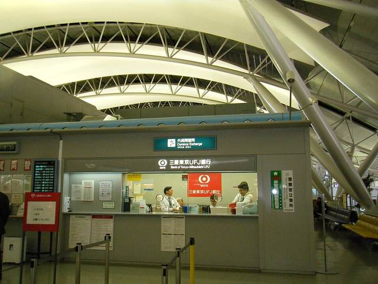
機場內的銀行兌幣處・As6022014, Public domain, https://commons.wikimedia.org/wiki/File:Currency_change-Kansai_International_Airport.jpg 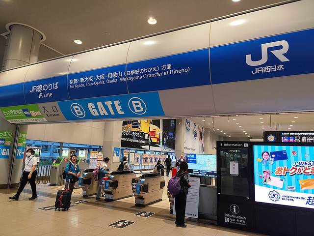
JR 關西機場站剪票口・TKdows 2026, CC0, https://commons.wikimedia.org/wiki/File:JP_日本_Japan_大阪_Osaka_關西國際_Kansai_International_Airport_機鐵站_railway_station_June_2026_N13P_10.jpg 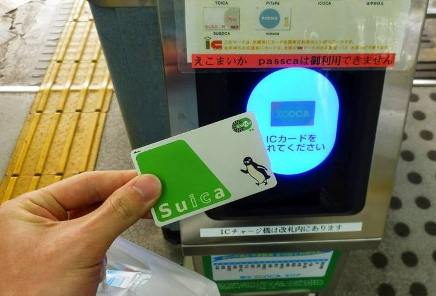
IC 卡感應區・タチヤマカムイ, CC BY-SA 4.0, https://commons.wikimedia.org/wiki/File:Suica_card_tap.jpg ①現金：入境大廳有便利商店系列的 Seven Bank ATM 與銀行 ATM、兌幣櫃台，可用台灣的 Visa／Mastercard／銀聯金融卡跨國提款（手續費依銀行）。建議先領 2–3 萬日圓：小餐館、寺院門票、Crosta 寄放等可能只收現金。②SIM／eSIM：最省事是在台灣先買 eSIM、落地開啟；若預約實體 SIM 或 Wi-Fi 機，在入境大廳各家櫃台取貨。③交通 IC 卡：最推薦出發前就在 iPhone「錢包」加入 ICOCA（或 Suica），用台灣的 Visa／Mastercard／JCB／AMEX 儲值（部分卡片不支援，先試）；Android 不能用。沒手機票卡的話，到 JR 關西機場站綠色窗口（みどりの窓口）買觀光客版 ICOCA（2,000 日圓，含押金 500，限外國護照、每人 1 張），或在 JR 售票機買一般 ICOCA。南海剪票口也可直接用 Visa、Mastercard、JCB、AMEX、銀聯等信用卡感應過閘門（每人各 1 張卡），或在售票機買 970 日圓車票。
購票・進站・轉乘（點一步看照片）💴 ATM領2–3萬日圓
要找的標示：ATM
機場內的銀行兌幣處・As6022014, Public domain, https://commons.wikimedia.org/wiki/File:Currency_change-Kansai_International_Airport.jpg 1. 入境大廳找 ATM（Seven Bank 或銀行）或兌幣櫃台，領 2–3 萬日圓現金。
🎫 2樓JR窗口買ICOCA
JR 關西機場站剪票口・TKdows 2026, CC0, https://commons.wikimedia.org/wiki/File:JP_日本_Japan_大阪_Osaka_關西國際_Kansai_International_Airport_機鐵站_railway_station_June_2026_N13P_10.jpg 2. 要買實體 ICOCA：上 2 樓到 JR 關西機場站，在剪票口旁的綠色窗口買觀光客版 ICOCA。
ℹ️ 卡平放感應區聽嗶聲
IC 卡感應區・タチヤマカムイ, CC BY-SA 4.0, https://commons.wikimedia.org/wiki/File:Suica_card_tap.jpg 3. 刷 IC 卡時把卡片（或手機）平放在藍色感應區上，聽到嗶聲再走。
- Apple Pay 的 ICOCA 隨時能用信用卡儲值，不用排隊
- ICOCA 全國通用：大阪、京都、名古屋的電車、巴士、便利商店都能刷
- JR 窗口在電車站 2 樓（JR 剪票口旁），買完 ICOCA 再走到隔壁南海剪票口即可
- 晚上 7 點多 JR 綠色窗口可能要排隊；趕時間就先買南海車票或刷信用卡
- 實體 ICOCA 退卡可退押金 500（扣餘額手續費），Apple Pay 的 ICOCA 無法退款，請用完餘額
19:10–19:17第 1 航廈 → 關西機場站（2 樓空橋步行）
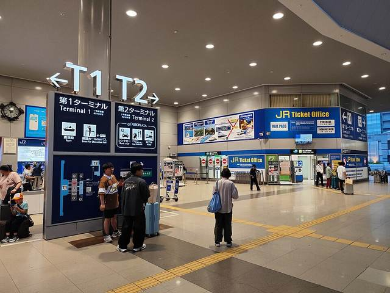
車站往第 1 航廈指標・TKdows 2026, CC0, https://commons.wikimedia.org/wiki/File:JP_日本_Japan_大阪_Osaka_關西國際_Kansai_International_Airport_機鐵站_railway_station_June_2026_N13P_07.jpg 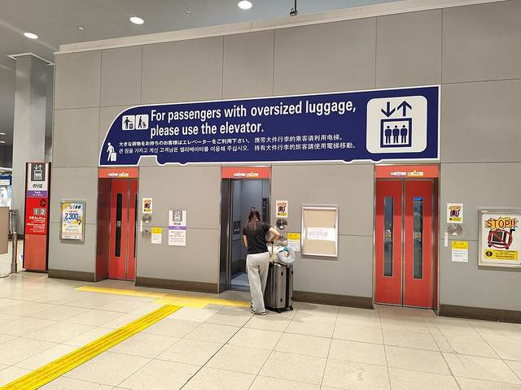
大件行李請搭電梯・TKdows 2026, CC0, https://commons.wikimedia.org/wiki/File:JP_日本_Japan_大阪_Osaka_關西國際_Kansai_International_Airport_機鐵站_railway_station_June_2026_N13P_03.jpg 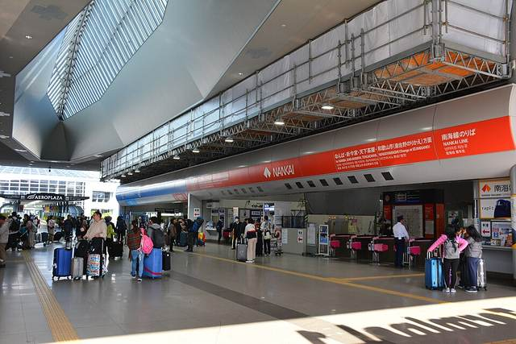
關西機場站南海剪票口・Cheng-en Cheng from Taichung City, Taiwan, CC BY-SA 2.0, https://commons.wikimedia.org/wiki/File:Kansai_Airport_Station_ticket_machines_(50100279868).jpg 從 1 樓入境大廳搭電梯或手扶梯到 2 樓，跟著「鉄道 Railways」指標走空橋過馬路，對面就是關西機場站（2 樓剪票口層），約 5–7 分。站內左右分成 JR（藍色）與南海（紅色）兩組剪票口；往天下茶屋走紅色「南海線のりば Nankai Line」，看板上寫著「なんば・新今宮・天下茶屋」。
- 路線
- 步行（2 樓空橋）
- 區間
- 關西機場第 1 航廈 1 樓入境大廳 → 關西機場站 南海剪票口
- 上車
- 1 樓 → 電梯／手扶梯上 2 樓 → 空橋 → 車站 2 樓
- 方向
- 跟「鉄道 Railways」指標
- 班次
- 步行約 5–7 分
- 車程
- 約 7 分
- 票價
- 免費
- 大行李箱一律搭電梯，車站內也有「大件行李請搭電梯」的指示
購票・進站・轉乘（點一步看照片）🛗 電梯上2樓走空橋
要找的標示：T1／T2
車站往第 1 航廈指標・TKdows 2026, CC0, https://commons.wikimedia.org/wiki/File:JP_日本_Japan_大阪_Osaka_關西國際_Kansai_International_Airport_機鐵站_railway_station_June_2026_N13P_07.jpg 1. 1 樓入境大廳搭電梯上 2 樓，走空橋到車站；看到「T1／T2」指標表示已在車站側。
🧳 大行李搭電梯
大件行李請搭電梯・TKdows 2026, CC0, https://commons.wikimedia.org/wiki/File:JP_日本_Japan_大阪_Osaka_關西國際_Kansai_International_Airport_機鐵站_railway_station_June_2026_N13P_03.jpg 2. 大行李請搭電梯，不要拖上手扶梯。
ℹ️ 紅色南海・藍色JR
關西機場站南海剪票口・Cheng-en Cheng from Taichung City, Taiwan, CC BY-SA 2.0, https://commons.wikimedia.org/wiki/File:Kansai_Airport_Station_ticket_machines_(50100279868).jpg 3. 到車站 2 樓後，紅色的是南海剪票口，藍色的是 JR。
- 室內空橋直通，不用淋雨
- 空橋上的分岔指標「T1／T2」是往航廈方向，往車站跟著電車圖示走
19:22–20:01關西機場 → 天下茶屋（南海 空港急行，直達不用轉車）
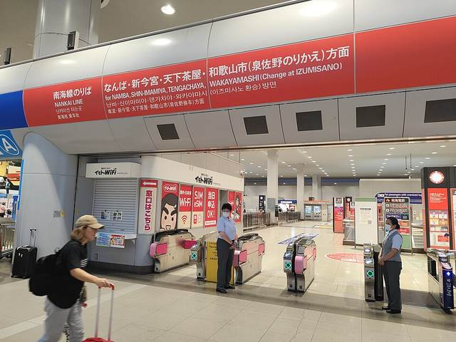
南海線剪票口（往天下茶屋）・TKdows 2026, CC0, https://commons.wikimedia.org/wiki/File:JP_日本_Japan_大阪_Osaka_關西國際_Kansai_International_Airport_機鐵站_railway_station_June_2026_N13P_06.jpg 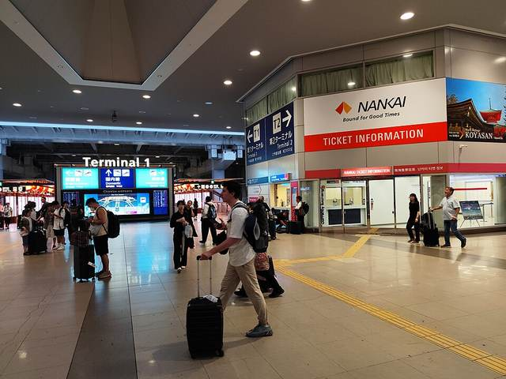
南海售票服務中心・TKdows 2026, CC0, https://commons.wikimedia.org/wiki/File:JP_日本_Japan_大阪_Osaka_關西國際_Kansai_International_Airport_機鐵站_railway_station_June_2026_N13P_08.jpg 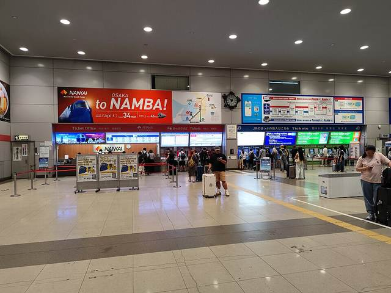
南海售票機與窗口・TKdows 2026, CC0, https://commons.wikimedia.org/wiki/File:JP_日本_Japan_大阪_Osaka_關西國際_Kansai_International_Airport_機鐵站_railway_station_June_2026_N13P_09.jpg 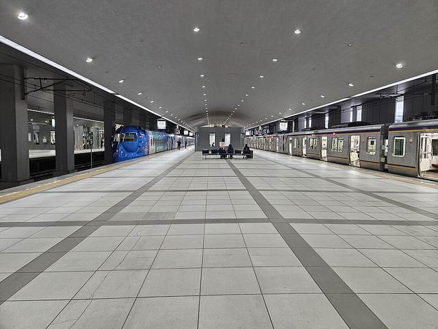
南海關西機場站月台・Niiryoku2910, CC BY-SA 4.0, https://commons.wikimedia.org/wiki/File:Kansai-Airport_station_Nankai_platform.jpg 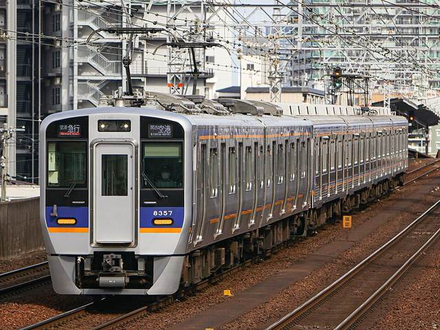
南海空港急行（8300 系）・日根野, CC BY-SA 4.0, https://commons.wikimedia.org/wiki/File:NK8300and9000_A.EXP.jpg 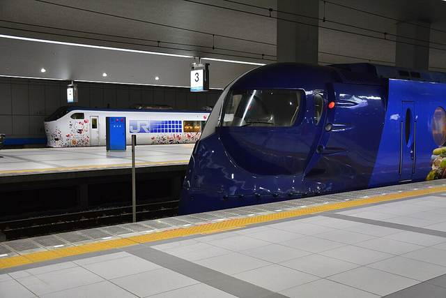
ラピート（左後為はるか）・Cheng-en Cheng from Taichung City, Taiwan, CC BY-SA 2.0, https://commons.wikimedia.org/wiki/File:Nankai_50000_series_at_Kansai_Airport_Station_(50100858051).jpg 南海空港線＋南海本線直通，空港急行與特急ラピート都停天下茶屋，不必轉車。推薦 19:22 空港急行 なんば行（1 號線、當站始發），39 分鐘到天下茶屋（20:01），車資 970 日圓、刷 IC 卡即可；同時段的 19:36 ラピートβ74 號反而 20:09 才到，還要多付 700 日圓特急券。空港急行是一般通勤電車（長條座椅），但從起點站上車一定有位子，晚上往難波方向也不擠；大行李箱放在腳邊或車門旁不擋路的位置。天下茶屋到站是 4 號線。依出關時間選車：18:55 空港急行 → 19:34；19:05 ラピートα18 號 → 19:40；19:22 空港急行 → 20:01；19:36 ラピートβ74 號 → 20:09；19:54 空港急行 → 20:32；20:05 ラピートα20 號 → 20:34。
- 路線
- 南海 空港線・南海本線 空港急行
- 區間
- 関西空港 → 天下茶屋
- 上車
- 關西機場站 南海 1 號線（空港急行）／2 號線（ラピート）；天下茶屋 4 號線到站
- 方向
- なんば 方向
- 班次
- 19:22 空港急行 なんば行（當站始發）→ 天下茶屋 20:01。其他：18:55 → 19:34、19:54 → 20:32（空港急行）；ラピート 19:05 → 19:40、19:36 → 20:09、20:05 → 20:34
- 車程
- 約 39 分
- 票價
- 970 日圓（IC 同價）；ラピート另加特急券 700 日圓（レギュラーシート）
- IC 卡
- ICOCA／Suica／PiTaPa 等直接刷；也可用 Visa、Mastercard、JCB、AMEX、銀聯等信用卡或手機感應（タッチ決済）過閘門，但 1 張卡只能 1 人用
- 有 IC 卡或信用卡感應：直接在南海剪票口感應進站
- 買車票：售票機按 English／中文 → 在票價表找「天下茶屋 Tengachaya」→ 970 日圓 × 2 人
- 想坐ラピート：在「TICKET INFORMATION」窗口或特急券售票機買指定席特急券（700），車資部分照樣刷 IC
- 確認月台電子看板：空港急行寫「空港急行 なんば」，停靠站列表有「天下茶屋」
購票・進站・轉乘（點一步看照片）🗺 找紅色南海剪票口
要找的標示：南海線のりば
南海線剪票口（往天下茶屋）・TKdows 2026, CC0, https://commons.wikimedia.org/wiki/File:JP_日本_Japan_大阪_Osaka_關西國際_Kansai_International_Airport_機鐵站_railway_station_June_2026_N13P_06.jpg 1. 找紅色「南海線のりば Nankai Line」剪票口，看板寫「なんば・新今宮・天下茶屋」方面。
🎫 無IC買970円票
南海售票機與窗口・TKdows 2026, CC0, https://commons.wikimedia.org/wiki/File:JP_日本_Japan_大阪_Osaka_關西國際_Kansai_International_Airport_機鐵站_railway_station_June_2026_N13P_09.jpg 2. 沒有 IC 卡：在售票機買 970 日圓車票；想坐ラピート到窗口或特急券機買特急券。
ℹ️ 有問題問服務窗口
要找的標示：INFORMATION
南海售票服務中心・TKdows 2026, CC0, https://commons.wikimedia.org/wiki/File:JP_日本_Japan_大阪_Osaka_關西國際_Kansai_International_Airport_機鐵站_railway_station_June_2026_N13P_08.jpg 3. 有問題可到「TICKET INFORMATION」南海服務窗口詢問。
⬇ 下樓到1號線
南海關西機場站月台・Niiryoku2910, CC BY-SA 4.0, https://commons.wikimedia.org/wiki/File:Kansai-Airport_station_Nankai_platform.jpg 4. 下樓到月台，空港急行通常在 1 號線，ラピート在 2 號線。
🚆 坐9站到天下茶屋
要找的標示：空港急行 なんば
南海空港急行（8300 系）・日根野, CC BY-SA 4.0, https://commons.wikimedia.org/wiki/File:NK8300and9000_A.EXP.jpg 5. 搭「空港急行 なんば行」，坐到第 9 站天下茶屋（約 39 分）。
ℹ️ ラピート依座位入座
ラピート（左後為はるか）・Cheng-en Cheng from Taichung City, Taiwan, CC BY-SA 2.0, https://commons.wikimedia.org/wiki/File:Nankai_50000_series_at_Kansai_Airport_Station_(50100858051).jpg 6. 若改搭ラピート（藍色列車），依特急券上的車廂座位入座。
- 一班車直達住處最近的車站，不用拖行李轉車
- 空港急行約 30 分一班，19:22 這班比ラピート早到又便宜
- 電車裡請把大行李箱靠牆放好、手扶住，不要堵住車門
- 若剛好趕上 19:05 的ラピート（19:40 到），也很值得：全車對號、行李空間大
- 不要搭 JR 關空快速：會繞到天王寺、要再轉車
20:01–20:12天下茶屋站 → 住處（西側步行約 6 分）
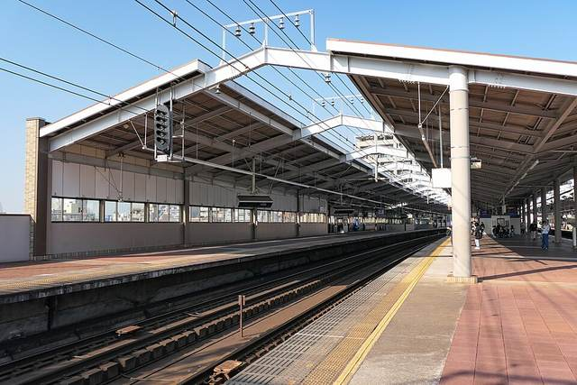
天下茶屋站南海 3・4 號月台・MaedaAkihiko, CC0, https://commons.wikimedia.org/wiki/File:Nankai_Tengachaya-STA_Platform3-4.jpg 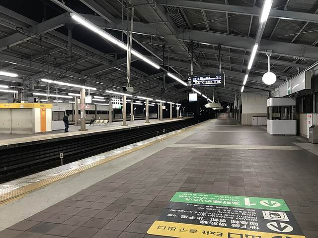
天下茶屋月台的出口指標・そらみみ, CC BY-SA 4.0, https://commons.wikimedia.org/wiki/File:Platform_of_Tengachaya_Station_(Nankai).jpg 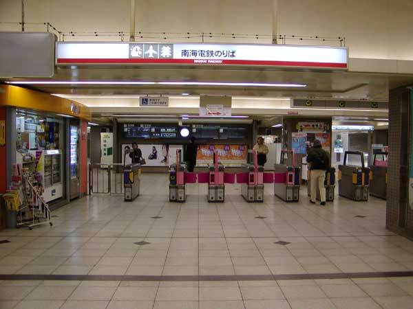
天下茶屋站南海剪票口・BJP039, CC BY-SA 3.0, https://commons.wikimedia.org/wiki/File:天下茶屋駅02.jpg 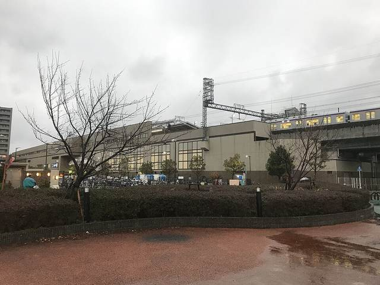
從西側看天下茶屋站・そらみみ, CC BY-SA 4.0, https://commons.wikimedia.org/wiki/File:View_of_Tengachaya_Station_from_west_side.jpg 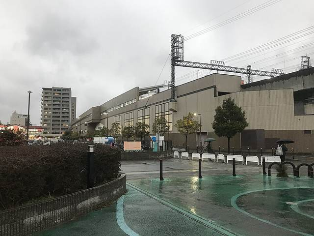
天下茶屋站西南側・そらみみ, CC BY-SA 4.0, https://commons.wikimedia.org/wiki/File:Tengachaya_Station_20190131-3.jpg 南海天下茶屋站是高架車站：月台在 3 樓、剪票口與大廳在 2 樓，1–2 樓、2–3 樓之間都有電梯與手扶梯。4 號線下車後找電梯下 2 樓，出南海剪票口（刷同一張 IC 卡），再搭電梯下 1 樓，往車站「西側」出去（カナートモール／イズミヤ這一側），用 Google 地圖導航到住處，約 6 分。住處 16:00 起可入住，請事先確認房東提供的自助入住方式（門鎖密碼、鑰匙盒），並截圖存在手機裡。
- 路線
- 步行
- 區間
- 天下茶屋站 → 住處（西成區潮路）
- 上車
- 3 樓月台 → 電梯 2 樓剪票口 → 電梯 1 樓 → 西側出口
- 方向
- 往西／西南
- 班次
- 步行約 6 分（含出站約 10 分）
- 車程
- 約 10 分
- 票價
- 免費
- 出南海剪票口時刷進站用的同一張 IC 卡（或信用卡）
- 用 Google 地圖導航到住處地址，選「步行」
購票・進站・轉乘（點一步看照片）🚆 4號線下車
天下茶屋站南海 3・4 號月台・MaedaAkihiko, CC0, https://commons.wikimedia.org/wiki/File:Nankai_Tengachaya-STA_Platform3-4.jpg 1. 天下茶屋 4 號線下車（南海本線 なんば方向月台）。
🛗 搭電梯下2樓
天下茶屋月台的出口指標・そらみみ, CC BY-SA 4.0, https://commons.wikimedia.org/wiki/File:Platform_of_Tengachaya_Station_(Nankai).jpg 2. 看月台上的出口與電梯指標，搭電梯下 2 樓剪票口層。
🚪 出南海剪票口
天下茶屋站南海剪票口・BJP039, CC BY-SA 3.0, https://commons.wikimedia.org/wiki/File:天下茶屋駅02.jpg 3. 出南海剪票口，再搭電梯下 1 樓。
🛗 電梯下1樓往西側
從西側看天下茶屋站・そらみみ, CC BY-SA 4.0, https://commons.wikimedia.org/wiki/File:View_of_Tengachaya_Station_from_west_side.jpg 4. 往車站西側出去，可看到高架車站與西側廣場。
🚶 往西南走6分到住處
天下茶屋站西南側・そらみみ, CC BY-SA 4.0, https://commons.wikimedia.org/wiki/File:Tengachaya_Station_20190131-3.jpg 5. 依 Google 地圖往西南步行約 6 分到住處。
- 全程有電梯，大行李不用扛樓梯
- 天下茶屋站同時有南海與地下鐵堺筋線，兩邊剪票口面對面，出站請走南海這一側
- 住處另一個最近車站是地下鐵四つ橋線岸里站（1 號出口約 5 分），之後幾天出門可依目的地選擇
20:30–晚餐：天下茶屋・岸里周邊（20 點以後也有得吃）
從西側看天下茶屋站・そらみみ, CC BY-SA 4.0, https://commons.wikimedia.org/wiki/File:View_of_Tengachaya_Station_from_west_side.jpg 放好行李後步行就能吃晚餐、買隔天早餐：①イズミヤ 天下茶屋店（車站西側カナートモール內，9:00–24:00），晚上 8 點後便當、熟食常有折扣，也能買水、牛奶、麵包；②すき家 天下茶屋駅前店（車站旁約 100 m，牛丼）；③くら寿司 天下茶屋店（11:00–24:00，迴轉壽司）；④京都北白川拉麵 魁力屋 岸里店（10:00–24:00）、松屋 岸里店（約 300 m）；⑤イズミヤ 岸里店（9:00–23:00）、業務スーパー 天下茶屋駅前店。車站東側還有天下茶屋站前商店街，但晚上多數店家已打烊。
- イズミヤ超市營業到 24:00，晚到也買得到便當與隔天早餐
- 連鎖店有中文／圖片菜單或點餐機，不會日文也能點
- 各店營業時間以現場與官網為準，連鎖店深夜時段可能縮短
- 第一晚別吃太晚；若隔天排了一早出門的行程（例如勝尾寺 6:50 出門），早點休息
推薦走法的交通費（成人單程合計）
| 南海 關西機場 → 天下茶屋（空港急行） IC 卡與車票同價；信用卡感應也可（每人各用 1 張卡） | 970 円 |
| 合計 | 970 円 |
最省錢走法
| 南海 關西機場 → 天下茶屋（空港急行／普通） 最便宜就是推薦方案 | 970 円 |
| 合計 | 970 円 |
- 出關比較快（18:45 前）：搭 18:55 空港急行 → 19:34 天下茶屋，或 19:05 ラピートα18 號 → 19:40
- 想坐得舒服、行李多：19:36 ラピートβ74 號（2 號線）→ 20:09 天下茶屋，車資 970＋特急券 700
- 入境排很久、19:30 後才出關：19:54 空港急行 → 20:32，或 20:05 ラピートα20 號 → 20:34
- 電車時刻與月台取自 Yahoo!路線情報（私鐵 2026 年 9 月版時刻表），出發前一天請再查一次；若班機延誤，看下一班即可（約 15 分一班）
- 入境到出關 45–75 分是估計值，實際依當天航班量與行李轉盤速度而定
- 台灣虎航在關西機場使用第 1 航廈；抵達登機門與是否搭接駁電車依當天安排
- ラピート特急券 700 日圓為 Yahoo!路線情報顯示的レギュラーシート價格；スーパーシート另計
- 南海全線 105 站中 97 站可用信用卡感應（タッチ決済，Visa／Mastercard／JCB／AMEX／Diners／Discover／銀聯，南海 2025/11 新聞稿）；關西機場、天下茶屋這類大站應可使用，以現場為準
- 觀光客版 ICOCA 的販售條件依 JR 西日本官網（外國護照、短期滯在、每人 1 張）；庫存可能售完
- 晚餐店家營業時間取自地圖／超市資訊網站，未逐一向店家確認
- 10/29–10/31 購買的免稅品仍用舊制（購買時免稅）；11/1 起改為出境時退稅制，回國日要在機場辦確認
10/30（五）・住大阪
勝尾寺＋箕面大瀑布＋箕面溫泉 一日遊（從天下茶屋出發）
8 點搶先參拜達磨古寺，走山路到瀑布，滝道散步後泡新開幕溫泉
從岸里搭地鐵直通北急到箕面萱野，計程車 15 分上山，8 點勝尾寺一開門就參拜滿山的勝運達磨。之後步行約 4 公里山路到箕面大瀑布（勝尾寺⇔瀑布的觀光巴士已停駛），再沿滝道下山經瀧安寺、吃紅葉天婦羅。中午在 2026/10/1 剛重開的箕面溫泉スパーガーデン吃午餐吃到飽、泡湯，16:00 搭阪急回大阪，17 點前到住宿。
| 06:50 | 出門，步行約 5 分到地鐵岸里站 1 號出口 |
| 07:01 | 四つ橋線 西梅田行 → 大國町 07:05 |
| 07:06 | 大國町對面轉御堂筋線 箕面萱野行 → 07:44 箕面萱野 |
| 07:50 | 南剪票口出站，搭計程車上山（約 15 分） |
| 08:05 | 勝尾寺：山門・本堂・達磨・多寶塔・二階堂 |
| 09:40 | 步行約 4 km 下到箕面大瀑布（50–70 分） |
| 10:45 | 箕面大瀑布拍照休息 |
| 11:05 | 沿滝道下山：瀧安寺、昆蟲館、紅葉天婦羅 |
| 12:15 | 到阪急箕面站前，步行 5 分到箕面溫泉 |
| 12:30 | 入館券付午餐吃到飽（2 部 12:30–13:30） |
| 13:30 | 泡湯、休息 |
| 15:45 | 離館，走回阪急箕面站 |
| 16:00 | 阪急箕面線 → 石橋阪大前 16:08 急行 → 大阪梅田 16:24 |
| 16:36 | 御堂筋線 → 大國町 16:51 四つ橋線 → 岸里 16:55 |
| 17:00 | 回到住宿 |
| 06:50 | 出門，步行約 5 分到地鐵岸里站 1 號出口 |
| 07:01 | 四つ橋線 西梅田行 → 大國町 07:05 |
| 07:08 | 大國町對面轉御堂筋線 箕面萱野行 → 07:45 箕面萱野 |
| 07:50 | 南剪票口出站，搭計程車上山（約 15 分） |
| 08:05 | 勝尾寺（週六開到 18:00；9 點後團客漸多） |
| 09:40 | 步行約 4 km 下到箕面大瀑布（50–70 分） |
| 10:45 | 箕面大瀑布（週末人多，早到較好） |
| 11:05 | 沿滝道下山：瀧安寺、昆蟲館、紅葉天婦羅 |
| 12:10 | 到箕面溫泉櫃台，盡早登記午餐吃到飽 2 部 |
| 12:30 | 入館券付午餐吃到飽（假日 5,100 日圓） |
| 13:30 | 泡湯、休息 |
| 15:45 | 離館，走回阪急箕面站 |
| 16:00 | 阪急箕面線 → 石橋阪大前 16:08 急行 → 大阪梅田 16:24 |
| 16:36 | 御堂筋線 → 大國町 16:49 四つ橋線 → 岸里 16:54 |
| 17:00 | 回到住宿 |
07:01–07:4407:01–07:45住宿 → 岸里 → 大國町 → 箕面萱野（地下鐵四つ橋線＋御堂筋線直通北急）
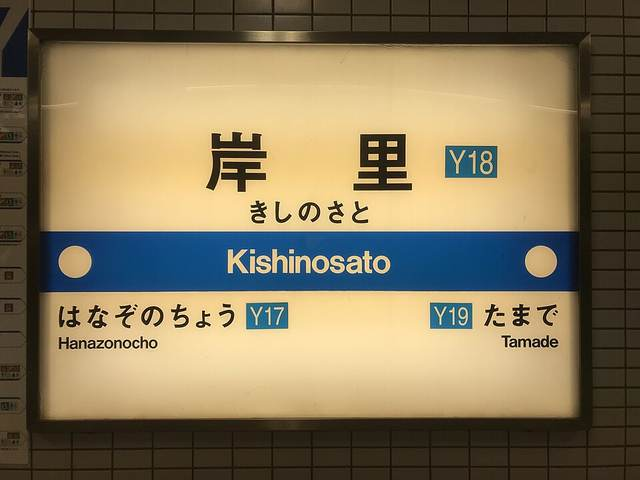
岸里站站名標（Y18）・そらみみ, CC BY-SA 4.0, https://commons.wikimedia.org/wiki/File:Kishinosato_Station_Sign.jpg 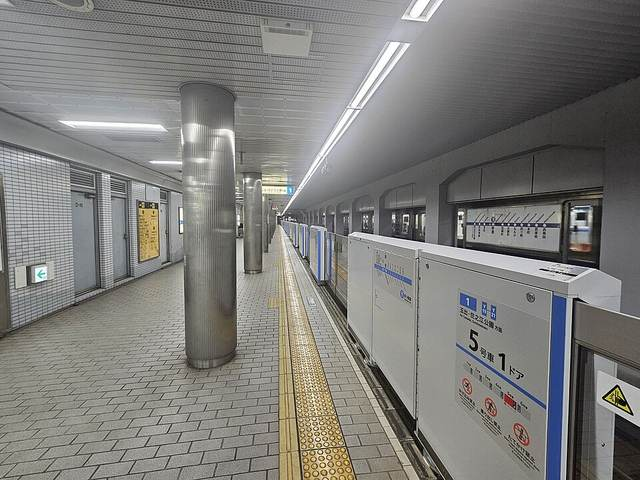
岸里站月台・Niiryoku2910, CC BY-SA 4.0, https://commons.wikimedia.org/wiki/File:Kishinosato_station_platform.jpg 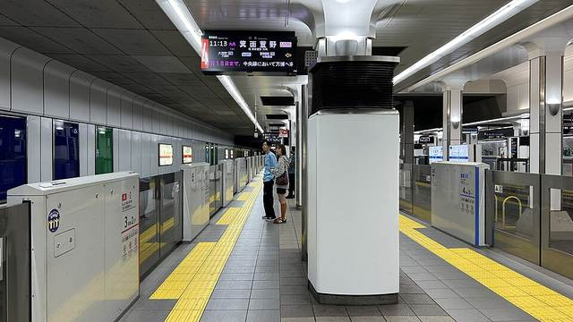
大國町 4 號線（御堂筋線北行）・NatsuTV, CC0, https://commons.wikimedia.org/wiki/File:大阪メトロ大国町駅4番線ホーム.jpg 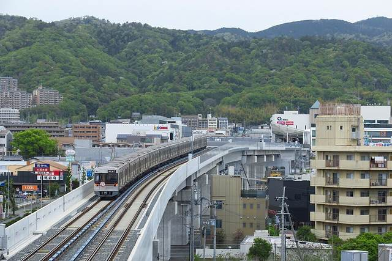
北急高架段與箕面山・さりと, CC BY-SA 4.0, https://commons.wikimedia.org/wiki/File:Kita-osaka_kyuko_Namboku_Line_between_Minoh-kayano_and_Minoh-semba_handai-mae.jpg 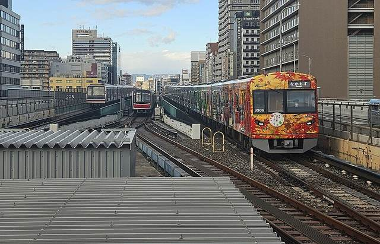
北急「箕面四季彩紅葉號」・Niiryoku2910, CC0, https://commons.wikimedia.org/wiki/File:Kitakyu_series9000_Minoh-shikisaimomiji.jpg 06:50 出門，步行約 5 分到地下鐵四つ橋線「岸里」站 1 號出口。比原稿的天下茶屋更好：岸里走過去差不多近，但在大國町是「同一月台對面轉乘」（四つ橋線 3 號線下車 → 對面 4 號線御堂筋線），不用上下樓梯，而且早 5–7 分到箕面萱野。搭 07:01 四つ橋線「西梅田行」2 站到大國町，轉 07:06（假日 07:08）御堂筋線「箕面萱野行」，一路坐到終點，過江坂後自動直通北大阪急行，不用下車。
- 路線
- Osaka Metro 四つ橋線 → 大國町轉 御堂筋線（直通北大阪急行）
- 區間
- 岸里 → 箕面萱野
- 上車
- 岸里站 2 號線（往西梅田）；大國町 3 號線下車 → 對面 4 號線上車（往箕面萱野）
- 方向
- 西梅田 方向 → 御堂筋線 箕面萱野 方向
- 班次
- 平日：07:01 西梅田行 → 大國町 07:05；07:06 箕面萱野行 → 07:44。假日：07:01 → 大國町 07:05；07:08 箕面萱野行 → 07:45。下一班平日 07:06 → 07:49、假日 07:06 → 07:52
- 車程
- 約 43 分
- 票價
- 580 日圓（Osaka Metro＋北大阪急行合併計價，IC 與車票同價）
- IC 卡
- ICOCA／Suica／PiTaPa 等交通 IC 卡直接刷，出站時自動扣地鐵＋北急合計 580 日圓
- 有 IC 卡：岸里站剪票口直接刷卡進站；餘額建議至少 2,000 日圓（今天還要刷巴士／阪急）
- 沒有 IC 卡：售票機按「English／中文」→ 在票價表找「箕面萱野 Minoh-kayano」（北急各站也列在地鐵票價表上）→ 買 580 日圓車票
- 御堂筋線請確認行先顯示「箕面萱野」；若搭到「千里中央」行，在千里中央同月台換下一班箕面萱野行
購票・進站・轉乘（點一步看照片）🚇 走到岸里1號出口
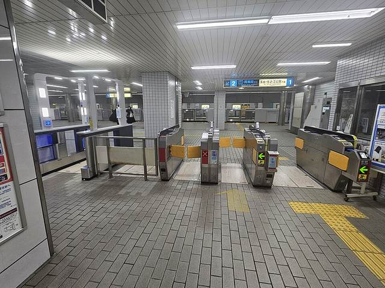
岸里站剪票口・Niiryoku2910, CC BY-SA 4.0, https://commons.wikimedia.org/wiki/File:Kishinosato_station_south-east_ticket_gate.jpg 1. 出住宿走到岸里站 1 號出口（約 5 分），下樓梯到剪票口。
🎫 刷IC或買580円票
要找的標示：箕面萱野
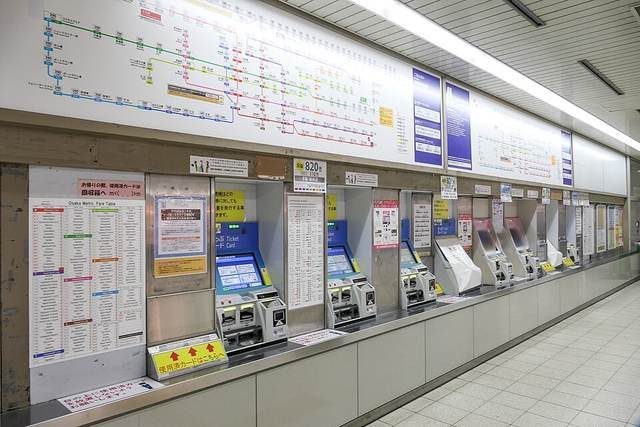
Osaka Metro 售票機・MaedaAkihiko, CC0, https://commons.wikimedia.org/wiki/File:Osaka-metro_Nakamozu-STA_Ticket.jpg 2. 有 IC 卡直接刷；沒 IC 卡就在售票機選中文／English，按 580 日圓（票價表上找「箕面萱野」）。
🚆 2號線坐2站到大國町
要找的標示：西梅田
岸里站月台・Niiryoku2910, CC BY-SA 4.0, https://commons.wikimedia.org/wiki/File:Kishinosato_station_platform.jpg 3. 下到月台，搭往「西梅田」方向（2 號線），坐 2 站到大國町。
🔁 大國町對面轉4號線
要找的標示：御堂筋線
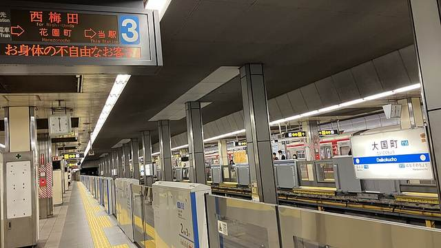
大國町 3 號線（四つ橋線到站）・小田急4000系ファン, CC BY-SA 4.0, https://commons.wikimedia.org/wiki/File:大国町駅ホーム.jpg 4. 大國町在 3 號線下車，不要上樓：同一月台對面就是 4 號線御堂筋線，搭「箕面萱野」行。
🚆 坐到終點箕面萱野
要找的標示：箕面萱野
大國町 4 號線（御堂筋線北行）・NatsuTV, CC0, https://commons.wikimedia.org/wiki/File:大阪メトロ大国町駅4番線ホーム.jpg 5. 確認月台電子看板寫「箕面萱野」，上車後坐到終點（約 38 分）。
ℹ️ 直通北急免出站
北急高架段與箕面山・さりと, CC BY-SA 4.0, https://commons.wikimedia.org/wiki/File:Kita-osaka_kyuko_Namboku_Line_between_Minoh-kayano_and_Minoh-semba_handai-mae.jpg 6. 過江坂後列車直通北大阪急行，票價會一起算，不必另外買票或出站。
- 大國町同月台對面轉乘，最輕鬆
- 一路坐到終點，不用找轉乘月台
- 早上 7 點多往梅田方向的車開始變擠，過梅田、新大阪後就空了
- 原稿天下茶屋方案也可以（見「其他方案」），但動物園前要上下樓轉乘
07:02–07:4907:03–07:52（原稿方案）天下茶屋 → 動物園前 → 箕面萱野（堺筋線＋御堂筋線）
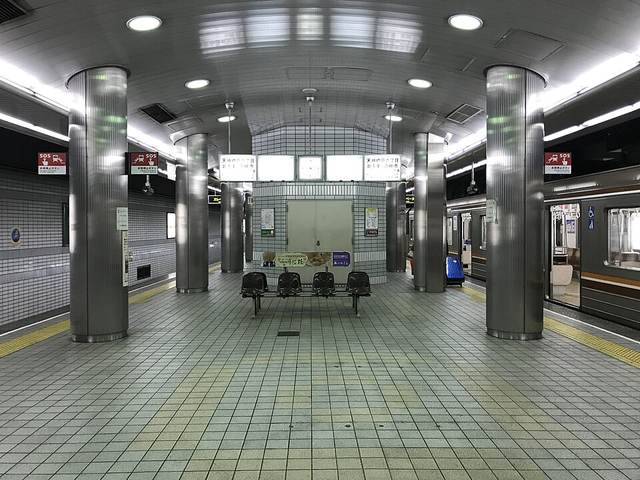
天下茶屋站堺筋線月台・そらみみ, CC BY-SA 4.0, https://commons.wikimedia.org/wiki/File:Platform_of_Tengachaya_Station_(Sakaisuji_Line).jpg 原稿走法也可行，同樣 580 日圓、轉 1 次，只是比岸里方案晚 5–7 分到，而且動物園前要從堺筋線月台走到御堂筋線月台（不出站，約 3–5 分，有樓梯／電扶梯）。天下茶屋是堺筋線起點站，一定有位子坐到動物園前。
- 路線
- Osaka Metro 堺筋線 → 動物園前轉 御堂筋線（直通北大阪急行）
- 區間
- 天下茶屋 → 箕面萱野
- 上車
- 天下茶屋站（平日 3 號線／假日 2 號線，以看板為準）；動物園前 御堂筋線 2 號線（往梅田・箕面萱野）
- 方向
- 堺筋線 北千里／高槻市方向 → 御堂筋線 箕面萱野 方向
- 班次
- 平日：07:02 堺筋線 高槻市行 → 動物園前 07:04；07:08 御堂筋線 箕面萱野行 → 07:49。假日：07:03 北千里行 → 07:05；07:13 箕面萱野行 → 07:52
- 車程
- 約 47 分
- 票價
- 580 日圓（IC 與車票同價）
- IC 卡
- IC 卡直接刷；轉乘不出站
- 天下茶屋站有南海與地鐵兩個剪票口：走「Osaka Metro 堺筋線」的剪票口
- 售票機買 580 日圓（票價表找「箕面萱野」）
- 堺筋線只坐 1 站，在動物園前一定要下車
購票・進站・轉乘（點一步看照片）🎫 走堺筋線剪票口
要找的標示：堺筋線
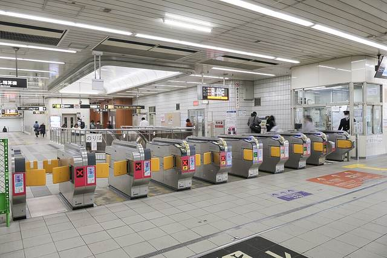
天下茶屋站剪票口・MaedaAkihiko, CC0, https://commons.wikimedia.org/wiki/File:Osaka-Metro_Tengachaya-STA_Gate.jpg 1. 天下茶屋走地下鐵堺筋線剪票口（不是南海），刷 IC 或買 580 日圓票。
🔁 動物園前轉御堂筋線
要找的標示：箕面萱野
天下茶屋站堺筋線月台・そらみみ, CC BY-SA 4.0, https://commons.wikimedia.org/wiki/File:Platform_of_Tengachaya_Station_(Sakaisuji_Line).jpg 2. 搭第一班出發的車坐 1 站到動物園前，下車轉御堂筋線往箕面萱野。
- 動物園前下車後跟紅色「御堂筋線 Midosuji Line」指標，到往「梅田・新大阪・千里中央」方向的月台
07:50–08:0507:50–08:05箕面萱野 → 勝尾寺（計程車約 15 分）
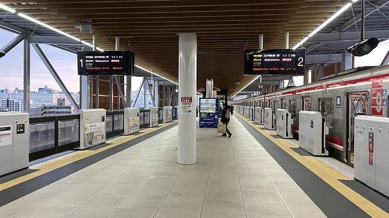
箕面萱野站月台・NatsuTV, CC0, https://commons.wikimedia.org/wiki/File:北大阪急行箕面萱野駅ホーム.jpg 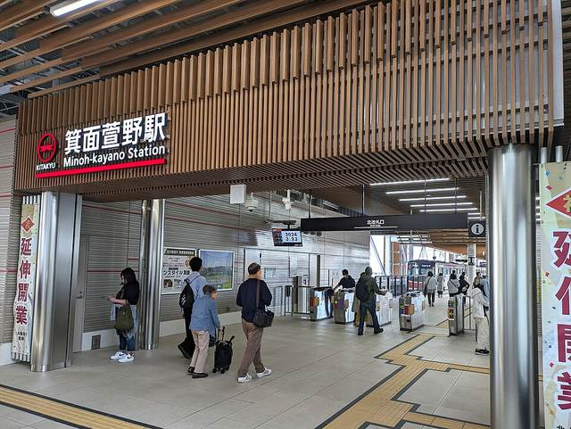
箕面萱野站入口・Suikotei, CC BY 4.0, https://commons.wikimedia.org/wiki/File:Minoh-Kayano_Station_20240502_01.jpg 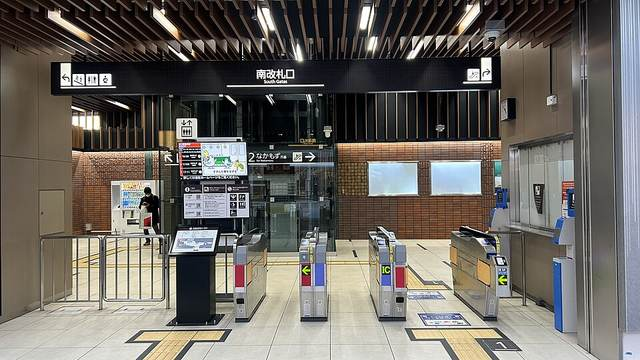
箕面萱野站南剪票口・NatsuTV, CC0, https://commons.wikimedia.org/wiki/File:北大阪急行箕面萱野駅南改札口.jpg 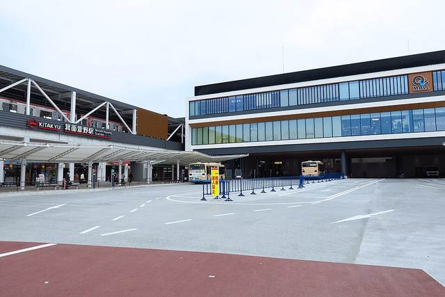
站前北側巴士總站・さりと, CC BY-SA 4.0, https://commons.wikimedia.org/wiki/File:Kitakyu_Minoh-kayano_Station,bus_terminal.jpg 到箕面萱野後走「南改札口（南剪票口）」出站，旁邊就是南側交通廣場的計程車乘車處（タクシーのりば）。勝尾寺官網寫計程車約 15 分、車資約 3,000 日圓（一車）。第一班往勝尾寺的阪急巴士要 9:00 才開，所以想 8 點開門就到，只能搭計程車；這也是原稿最聰明的地方，保留。上車跟司機說「勝尾寺まで お願いします（かつおうじ）」。
- 路線
- 計程車（タクシー）
- 區間
- 箕面萱野站 南側交通廣場 → 勝尾寺 山門前
- 上車
- 南改札口出站即到「タクシーのりば」
- 方向
- 往北上山（府道 4 號）
- 班次
- 隨到隨搭；約 15 分
- 車程
- 約 15 分
- 票價
- 約 3,000 日圓／車（勝尾寺官網估算；2 人分攤每人約 1,500）
- IC 卡
- 大阪計程車多數可刷信用卡、交通 IC；以車上貼紙為準
- 走南改札口出站，出口外就是計程車招呼站，排隊上車
- 給司機看：「勝尾寺まで お願いします」
- 如果招呼站沒有車：開 GO 或 DiDi App 叫車（上車地點選「箕面萱野駅 南側交通広場」）；或在站內等第一班 9:00 巴士
購票・進站・轉乘（點一步看照片）🗺 跟南改札指標
要找的標示：南改札口
箕面萱野站月台・NatsuTV, CC0, https://commons.wikimedia.org/wiki/File:北大阪急行箕面萱野駅ホーム.jpg 1. 箕面萱野是終點站，下車後跟著「南改札口 South Gate」指標走。
🚪 刷IC出站扣580円
箕面萱野站南剪票口・NatsuTV, CC0, https://commons.wikimedia.org/wiki/File:北大阪急行箕面萱野駅南改札口.jpg 2. 南剪票口刷 IC（或插車票）出站，扣款 580 日圓。
🗺 排隊搭計程車
要找的標示：タクシーのりば
3. 出站就是南側交通廣場，有屋頂的「タクシーのりば」排隊上車。
🚌 改搭巴士8號站牌
要找的標示：北改札口
站前北側巴士總站・さりと, CC BY-SA 4.0, https://commons.wikimedia.org/wiki/File:Kitakyu_Minoh-kayano_Station,bus_terminal.jpg 4. 若改搭巴士：走「北改札口」到北側巴士總站 8 號站牌，刷 IC 從中門上車、前門下車時再刷一次。
- 8 點開門就進場，境內幾乎沒人，最好拍
- 南側交通廣場 5:00 起開放，有核准的計程車待機場；但 7 點多是否一定有車無法保證，建議前一晚先裝好 GO App
- 巴士替代：阪急巴士 30 系統「箕面萱野駅 → 勝尾寺」從北側交通廣場 8 號站牌開，首班 9:00，之後約每 10 分（含臨時直行便），車程約 22 分，大人 800 日圓。2026/10/1 起完全不收現金，只能刷交通 IC，或在 8 號站牌向巴士引導員買專用車票（只收信用卡）
08:05–09:4008:05–09:40勝尾寺：山門・本堂・多寶塔・二階堂・勝運達磨
勝尾寺山門正面・Chris Gladis, CC BY 2.0, https://commons.wikimedia.org/wiki/File:Katsuo-ji_main_gate.jpg 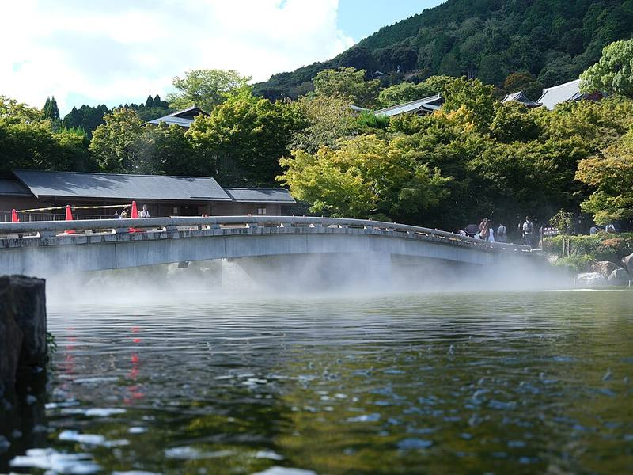
山門前的橋與池・Don Ramey Logan, CC BY 4.0, https://commons.wikimedia.org/wiki/File:Bridge_at_Katsuo-ji_Osaka_Japan_by_Don_Ramey_Logan.jpg 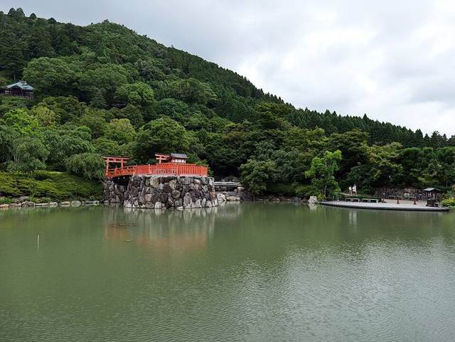
弁天池與弁天堂・Hyppolyte de Saint-Rambert, CC BY 4.0, https://commons.wikimedia.org/wiki/File:Katsuō-ji_(Minoh_Osaka)_Temple_hdsr_S5_bp01.jpg 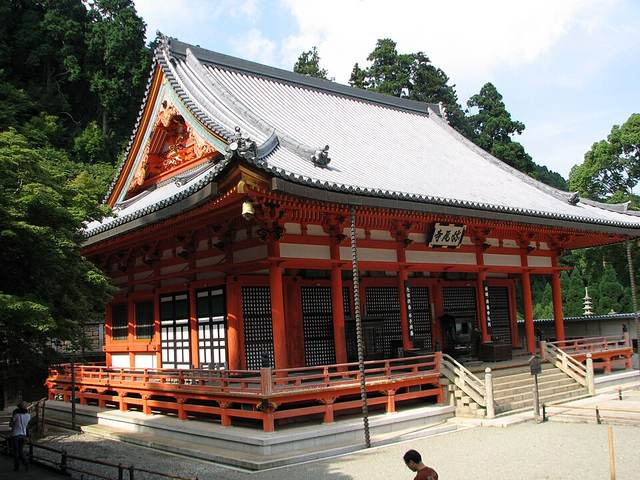
勝尾寺本堂・Chris Gladis, CC BY 2.0, https://commons.wikimedia.org/wiki/File:Katsuo-ji_main_hall.jpg 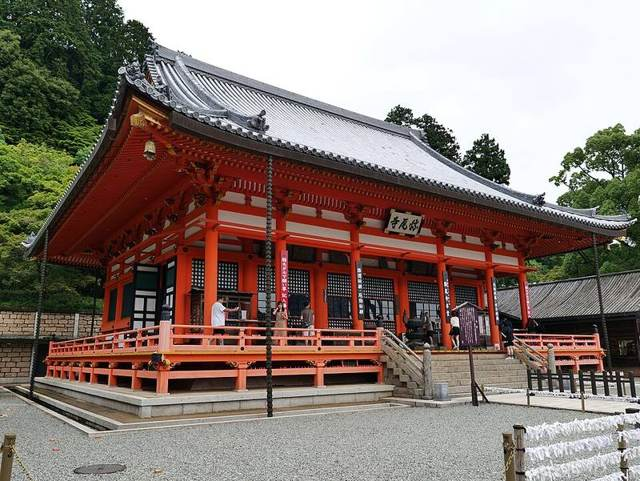
本堂・Hyppolyte de Saint-Rambert, CC BY 4.0, https://commons.wikimedia.org/wiki/File:Katsuō-ji_(Minoh_Osaka)_Temple_hdsr_S5_hn01.jpg 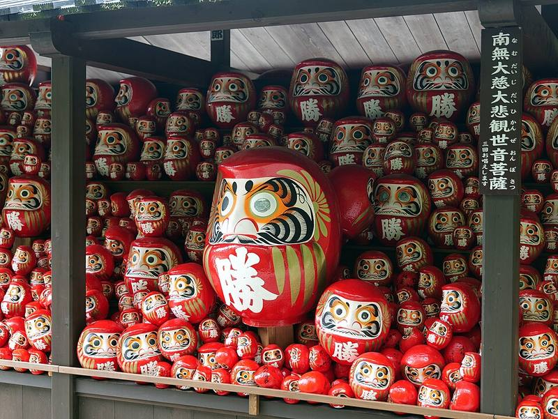
堆滿勝運達磨的奉納架・Hyppolyte de Saint-Rambert, CC BY 4.0, https://commons.wikimedia.org/wiki/File:Katsuō-ji_(Minoh_Osaka)_Temple_hdsr_S5_dv04.jpg 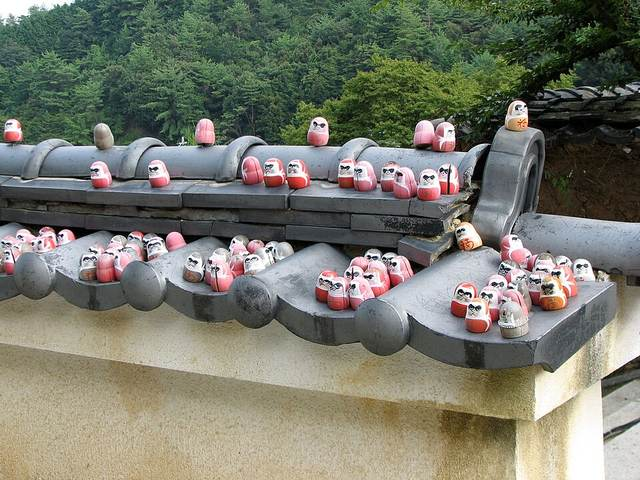
屋瓦上的小達磨・Chris Gladis, CC BY 2.0, https://commons.wikimedia.org/wiki/File:Katsuo-ji_daruma_on_roof.jpg 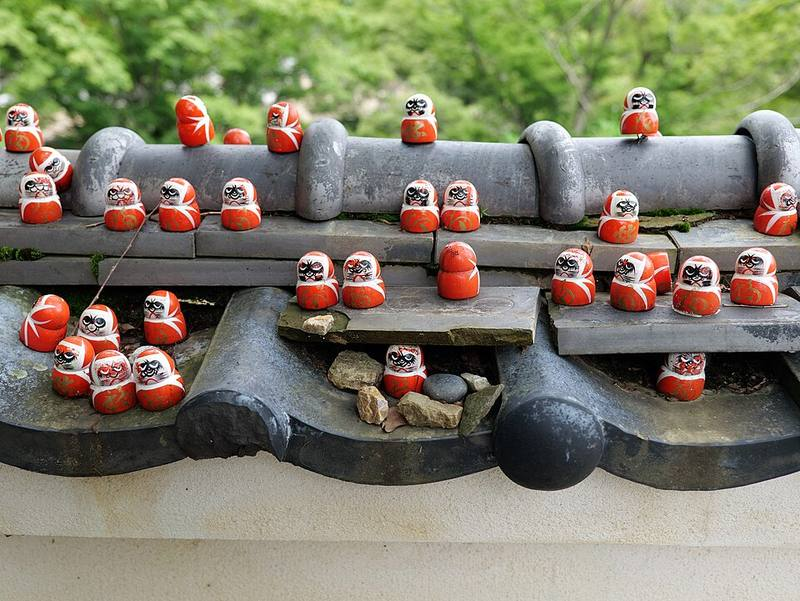
屋瓦上排滿小達磨・Hyppolyte de Saint-Rambert, CC BY 4.0, https://commons.wikimedia.org/wiki/File:Katsuō-ji_(Minoh_Osaka)_Temple_hdsr_S5_da17.jpg 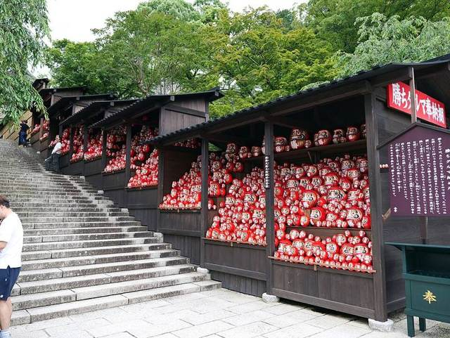
石階旁的達磨奉納棚・Hyppolyte de Saint-Rambert, CC BY 4.0, https://commons.wikimedia.org/wiki/File:Katsuō-ji_(Minoh_Osaka)_Temple_hdsr_S5_dv06.jpg 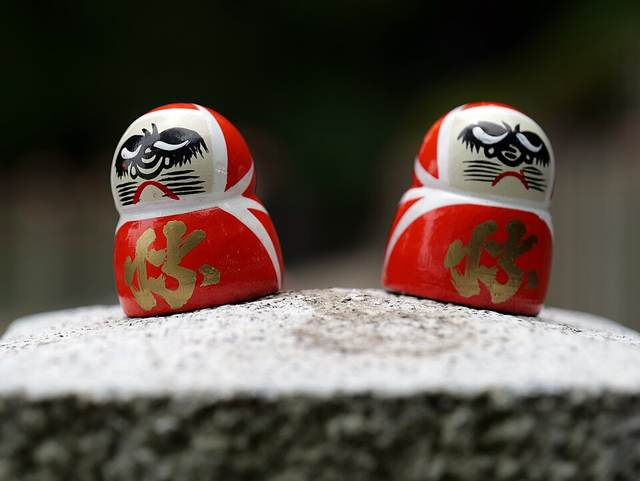
勝運小達磨・Hyppolyte de Saint-Rambert, CC BY 4.0, https://commons.wikimedia.org/wiki/File:Katsuō-ji_(Minoh_Osaka)_Temple_hdsr_S5_da10.jpg 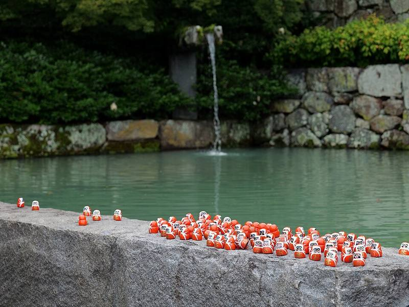
池畔石上的達磨・Hyppolyte de Saint-Rambert, CC BY 4.0, https://commons.wikimedia.org/wiki/File:Katsuō-ji_(Minoh_Osaka)_Temple_hdsr_S5_da07.jpg 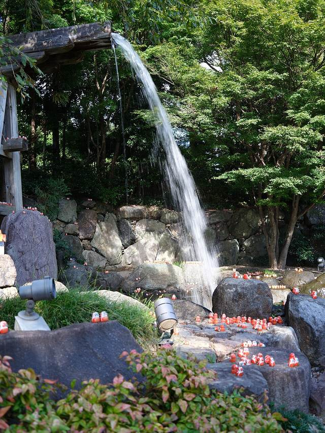
境內小瀑布與達磨・WPPilot, CC BY-SA 4.0, https://commons.wikimedia.org/wiki/File:Katsuo-ji_Temple_Red_Daruma_dolls_scattered_across_the_rocks_by_Don_Ramey_Logan.jpg 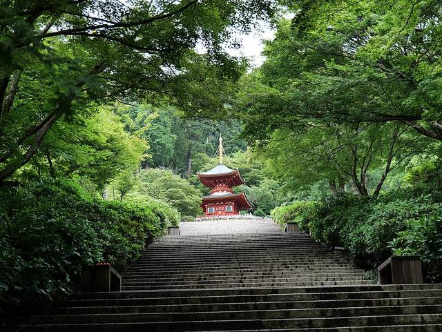
通往多寶塔的石階・Hyppolyte de Saint-Rambert, CC BY 4.0, https://commons.wikimedia.org/wiki/File:Katsuō-ji_(Minoh_Osaka)_Temple_hdsr_S5_th01.jpg 朱紅多寶塔・Hyppolyte de Saint-Rambert, CC BY 4.0, https://commons.wikimedia.org/wiki/File:Katsuō-ji_(Minoh_Osaka)_Temple_hdsr_S5_th11.jpg 綠意中的多寶塔・Hyppolyte de Saint-Rambert, CC BY 4.0, https://commons.wikimedia.org/wiki/File:Katsuō-ji_(Minoh_Osaka)_Temple_hdsr_S5_th34.jpg 俯瞰境內與多寶塔・Hyppolyte de Saint-Rambert, CC BY 4.0, https://commons.wikimedia.org/wiki/File:Katsuō-ji_(Minoh_Osaka)_Temple_hdsr_S5_sw01.jpg 二階堂・Hyppolyte de Saint-Rambert, CC BY 4.0, https://commons.wikimedia.org/wiki/File:Katsuō-ji_(Minoh_Osaka)_Temple_hdsr_S5_nk01.jpg 石牆達磨與遠山・Hyppolyte de Saint-Rambert, CC BY 4.0, https://commons.wikimedia.org/wiki/File:Katsuō-ji_(Minoh_Osaka)_Temple_hdsr_S5_nk03.jpg 勝尾寺山門・K3JACK, CC BY-SA 3.0, https://commons.wikimedia.org/wiki/File:勝尾寺山門.jpg 西國三十三所第 23 番札所，約 8 萬坪（26 萬平方公尺）的山中古寺，自古稱「勝運之寺」。10/30（週五）、11/1（週日）8:00–17:00（最後受理 16:30）；10/31（週六）8:00–18:00（最後受理 17:30）。入山志納料大人 500 日圓（國中小 400）。一開門就進場，可以拍到沒有人的山門與滿山紅色小達磨。建議路線：山門（受付）→ 弁天池與橋 → 本堂（授與所買勝ちダルマ、達磨籤）→ 石階上多寶塔 → 二階堂 → 一願不動、開山堂一帶 → 回山門，約 1.5 小時。
購票・進站・轉乘（點一步看照片）💴 付入山費500円
要找的標示：受付
勝尾寺山門正面・Chris Gladis, CC BY 2.0, https://commons.wikimedia.org/wiki/File:Katsuo-ji_main_gate.jpg 1. 山門旁的受付付入山志納料 500 日圓（現金；或出示 Web 入山券 QR）。
ℹ️ 本堂旁請勝運達磨
勝運小達磨・Hyppolyte de Saint-Rambert, CC BY 4.0, https://commons.wikimedia.org/wiki/File:Katsuō-ji_(Minoh_Osaka)_Temple_hdsr_S5_da10.jpg 2. 想請勝ちダルマ：本堂旁授與所購買，寫好心願後到旁邊的奉納處點眼。
- 山門與池上紅橋：一進門就是最經典的畫面，約 10 分
- 本堂：參拜、在授與所請「勝ちダルマ」（依大小價格不同）或「達磨籤」，約 20 分
- 屋頂、石牆、石燈籠上堆滿信眾奉納的小達磨，到處都能拍，約 20 分
- 多寶塔：從長石階往上看朱紅塔身，約 15 分
- 二階堂（法然上人曾在此修行）與境內小瀑布，約 15 分
- 勝ちダルマ規矩：在底部寫人生目標、背後寫一年內目標，點上一隻眼；願望達成後再回來奉納
- 官網有「Web 入山券」（asoview），持手機 QR 可不用排隊；8 點剛開門通常不需要
- 境內階梯多、石子路，請穿好走的鞋；下一站要走 4 公里山路
- 紅葉：勝尾寺官網寫見頃 11 月中旬～12 月上旬，10/30–11/1 多半仍是綠葉，只有少數樹開始轉色
- 特別夜間點燈 2025 年是 11 月的週六日與假日；2026 年日期尚未公布，10/30–31 應不會有（11/1 週日有可能，未確認）。本行程是早上，不受影響
- 秋季週末寺院停車場完全預約制（只影響開車的人）
09:40–10:4509:40–10:45勝尾寺 → 箕面大瀑布（步行約 4 公里，50–70 分）
2024 年度試辦的「箕面滝道ワンウェイ観光周遊バス」（勝尾寺⇔大瀑布）已在 2024 年度末（2025 年 3 月）結束，箕面市官網確認停駛，現在兩地之間沒有直達巴士。最實際的方法是走路：從山門前沿府道往西，跟著「東海自然歩道」「箕面大滝」的指標走，大部分是鋪裝道路與步道，約 4 公里，健行導遊網站寫約 50 分鐘就能看到瀑布，保守抓 60–70 分。最後一段從瀑布上方的「大滝上」一帶走陡坡／階梯下到瀑布前。
- 路線
- 步行（東海自然歩道／府道沿線）
- 區間
- 勝尾寺 山門 → 箕面大滝
- 上車
- 勝尾寺山門前出發，往箕面（西）方向
- 方向
- 跟著「箕面大滝」「東海自然歩道」指標
- 班次
- 約 4 km，50–70 分
- 車程
- 約 60 分
- 票價
- 免費
- 出發前在手機下載離線地圖或用 Google Maps 步行導航（目的地「箕面大滝」）
- 沿途沒有商店，先在勝尾寺買水
- 山林裡的健行路段，運氣好會看到野生獼猴
- 大部分是下坡，但中段有起伏
- 部分路段沿車道、沒有人行道，請靠邊單排走並注意來車
- 不想走：請勝尾寺受付或用 GO／DiDi 叫計程車到府道 43 號旁的「大滝上駐車場」（約 10 分，車資估 2,000 日圓上下，未確認），再步行約 15 分陡坡下到瀑布；箕面公園內禁止車輛進入，計程車開不到瀑布前
- 勝尾寺 → 箕面萱野的回程巴士最早平日 11:20、週末 10:30 才有，不適合本行程
10:45–12:1510:45–12:15箕面大瀑布 → 滝道下山（瀧安寺・昆蟲館・紅葉天婦羅）
箕面大瀑布全景・osakaosaka, Public domain, https://commons.wikimedia.org/wiki/File:Minoh_Taki_Zenkei.jpg 初秋的箕面大瀑布・Laitr Keiows, CC BY-SA 3.0, https://commons.wikimedia.org/wiki/File:Waterfall_in_Mino_Quasi-National_Park_during_early_autumn.jpg 箕面大瀑布與紅葉・Kanchi1979, CC BY-SA 4.0, https://commons.wikimedia.org/wiki/File:JP-Osaka-Minoo-Minootaki_-With-Rainbow.JPG 瀑布前的紅橋與遊客・Kanchi1979, CC BY-SA 4.0, https://commons.wikimedia.org/wiki/File:JP-Osaka-Minoo-Minootaki_-Over-View.JPG 紅楓映襯的瀑布・663highland, CC BY 2.5, https://commons.wikimedia.org/wiki/File:Minoh_Falls_Minoh_Osaka_pref_Japan07s3.jpg 溪谷中的小瀑布與紅葉・663highland, CC BY 2.5, https://commons.wikimedia.org/wiki/File:Meiji_no_Mori_Minoh_Quasi-National_Park_Minoh_Osaka_pref_Japan29s3.jpg 滝道林蔭步道・Otto Domes, CC BY-SA 4.0, https://commons.wikimedia.org/wiki/File:Minoh-Park.jpg 沿箕面川的滝道・Merec0, CC BY 2.0, https://commons.wikimedia.org/wiki/File:Minoh_no_Takidou.jpg 滝道旁的溪流與綠蔭・Otto Domes, CC BY-SA 4.0, https://commons.wikimedia.org/wiki/File:Minoo_Park_-_Falls_Trail_-_Osaka.jpg 沿溪平緩的滝道・Laitche, CC BY-SA 4.0, https://commons.wikimedia.org/wiki/File:Waterfall_Trail_(Promenade)_in_Meiji_no_Mori_Minō_Quasi-National_Park,_October_2024_-_5602.jpg 滝道沿途的老旅館・663highland, CC BY 2.5, https://commons.wikimedia.org/wiki/File:Meiji_no_Mori_Minoh_Quasi-National_Park_Minoh_Osaka_pref_Japan10n.jpg 瀧安寺山門・KENPEI, CC BY-SA 3.0, https://commons.wikimedia.org/wiki/File:Ryuanji_sanmon.jpg 瀧安寺境內參道・KENPEI, CC BY-SA 3.0, https://commons.wikimedia.org/wiki/File:Ryuanji1.jpg 瀧安寺本堂・KENPEI, CC BY-SA 3.0, https://commons.wikimedia.org/wiki/File:Ryuanji_Hondo_haiden.jpg 瀧安寺境內的秋色・lumoplank, CC0, https://commons.wikimedia.org/wiki/File:Minoh_-_Minoh6704.jpg 現炸紅葉天婦羅・Fred Cherrygarden, CC BY-SA 4.0, https://commons.wikimedia.org/wiki/File:Deep-Frying_Maple_Leaves.jpg 名產炸楓葉天婦羅・Fred Cherrygarden, CC BY-SA 4.0, https://commons.wikimedia.org/wiki/File:Momiji_no_Tempura.jpg 落差 33 公尺、大阪府唯一入選「日本瀑布百選」的箕面大滝，公園全天開放、免費。在瀑布前休息 15–20 分後，沿溪谷步道「滝道」往下走約 2.8 公里到阪急箕面站：全程平緩下坡，純走約 40 分，加上沿途停留抓 1 小時 15 分。途中有瀧安寺（日本最早的弁財天道場）、箕面公園昆蟲館、唐人戻岩、野口英世像，靠近車站的一段兩側都是賣「紅葉天婦羅」的老店。
- 箕面大滝：瀑布前的紅色欄杆是拍照位置，約 20 分
- 瀧安寺：山門、弁財天本堂，境內免費，約 15 分
- 箕面公園昆蟲館（選配）：10:00–17:00（最後入館 16:30），週二休，大人 280 日圓，約 20 分
- 紅葉天婦羅（もみじの天ぷら）：用鹽漬楓葉裹甜麵衣油炸，脆甜，60 g 約 440 日圓起；老店「久國紅仙堂」週四公休，週五六都有開
- 滝道兩旁的溪流、小瀑布與老旅館
- 紅葉：箕面公園官網寫見頃 11 月中旬～12 月初旬，2026 年紅葉情報 11/1 起才更新。10/30–11/1 大致是「青葉～開始轉色」，不要期待滿山紅
- 滝道一帶有野生獼猴：不要餵食，零食不要拿在手上
- 公園管理事務所 072-721-3014（9:30–17:00）；10/30–11/1 目前沒有封路或活動公告（截至 10/5）
12:20–15:4512:20–15:45箕面溫泉スパーガーデン：午餐吃到飽＋泡湯（2026/10/1 剛重新開幕）
1F大浴場「山景之湯」示意圖・官網：大江戸温泉物語 箕面温泉スパーガーデン https://www.ooedoonsen.jp/minoh-spa/ 1F露天風呂・官網：大江戸温泉物語 箕面温泉スパーガーデン https://www.ooedoonsen.jp/minoh-spa/ B1F大浴場「櫓檜之湯」示意圖・官網：大江戸温泉物語 箕面温泉スパーガーデン https://www.ooedoonsen.jp/minoh-spa/ 1F大浴場內三溫暖・官網：大江戸温泉物語 箕面温泉スパーガーデン https://www.ooedoonsen.jp/minoh-spa/ 休憩區「階梯之丘」示意圖・官網：大江戸温泉物語 箕面温泉スパーガーデン https://www.ooedoonsen.jp/minoh-spa/ 休憩區「小憩木立」示意圖・官網：大江戸温泉物語 箕面温泉スパーガーデン https://www.ooedoonsen.jp/minoh-spa/ 餐廳「山小屋之桌」示意圖・官網：大江戸温泉物語 箕面温泉スパーガーデン https://www.ooedoonsen.jp/minoh-spa/ 箕面溫泉建築群遠景（2006）・Bergmann, CC BY-SA 3.0, https://commons.wikimedia.org/wiki/File:MINOO-ONSEN.JPG 從阪急箕面站跟著指標步行約 5 分到「大江戸温泉物語 箕面温泉スパーガーデン」（箕面市温泉町 1-1）。整修後 2026/10/1 重開：營業 9:00–23:45（最後入館 22:45），兩個大浴場依日男女交換，有露天、寢湯、三溫暖；岩盤浴與包租浴池另外收費。入館費（大人，17 點前）：平日 2,420、週六日假日 2,860、繁忙日 3,190 日圓；17 點後入館一律 2,090 日圓；另收箕面市入湯稅 75 日圓。午餐最划算的是在溫泉櫃台買「入館券付ランチバイキング」（附毛巾、浴巾）：平日 4,400、週六日假日 5,100 日圓，比分開買省 920～1,360 日圓。吃到飽在隔壁 Premium 箕面観光ホテル 1F「GRAND DINING」，11:30–14:00，採兩部入替制（1 部 11:30–12:30、2 部 12:30–13:30），不用預約、當天先到先受理。
- 12:20 左右到櫃台，買「入館券付ランチバイキング」排 2 部（12:30–13:30）
- 飯後休息一下再泡：1F「山景之湯」、B1F「櫓檜之湯」，男女依日交換
- 館內有休憩區「階梯之丘」、約 5,000 本漫畫的閱讀區，可以躺著休息
- 選配：萬博話題的「ミライ人間洗濯機」1 室 11,000 日圓（2–4 人、國中以上），只能當天在 1F 浴場案內所先到先受理
- 刺青：只有能用館方指定的付費遮蓋貼（最多 2 張）完全蓋住才可入館，否則謝絕
- 毛巾：吃到飽套票確定附毛巾＋浴巾；單買入館券是否附毛巾，官網沒寫，建議自備小毛巾或到櫃台問
- 吃到飽是先到先受理，週六可能提早額滿；滿了就只買入館券，在館內餐廳「山小屋のテーブル」用餐，或回箕面站前找餐廳
- 繁忙日名單要看官網 FAQ「日帰りプランの繁忙日」；10/31 是否算繁忙日未確認
- 館內禁止攜帶外食；浴場、更衣室全面禁止拍照
- 比較省的做法：先在滝道吃紅葉天婦羅＋站前吃午餐，17 點後再入館（2,090 日圓），但回到住宿會在 19 點以後
16:00–16:5516:00–16:54阪急箕面 → 石橋阪大前 → 大阪梅田 → 地下鐵 → 岸里
阪急箕面站・Brancacube, CC BY-SA 3.0, https://commons.wikimedia.org/wiki/File:Minoo_Station_(Osaka).jpg 箕面站 1 號線月台・NatsuTV, CC0, https://commons.wikimedia.org/wiki/File:阪急箕面駅1号線ホーム.jpg 行駛箕面線的阪急電車・さりと, CC BY-SA 4.0, https://commons.wikimedia.org/wiki/File:Hankyu_6000_series_6024F_between_Makiochi_and_Minoh.jpg 石橋阪大前 寶塚線站牌・Niiryoku2910, CC BY-SA 4.0, https://commons.wikimedia.org/wiki/File:Ishibashi_handai-mae_station_Takarazuka_line_sign.jpg 石橋阪大前站箕面導覽・NatsuTV, CC0, https://commons.wikimedia.org/wiki/File:阪急石橋阪大前駅箕面案内.jpg 阪急大阪梅田 3 樓剪票口・NatsuTV, CC0, https://commons.wikimedia.org/wiki/File:阪急大阪梅田駅3階改札口.jpg 15:45 離開溫泉，走回阪急箕面站。搭箕面線（全部是往石橋阪大前的區間車，約每 10 分一班）3 站到石橋阪大前，同站轉寶塚本線往「大阪梅田」方向（2 號線）的急行，到終點大阪梅田。從阪急 3 樓剪票口出來，跟著「地下鉄 御堂筋線」指標走到梅田站，搭往なかもず／天王寺方向，到大國町同月台對面轉四つ橋線「住之江公園行」，下一站花園町、再下一站就是岸里。阪急 280＋地鐵 290＝570 日圓。
- 路線
- 阪急箕面線 → 石橋阪大前轉 寶塚本線急行 → Osaka Metro 御堂筋線 → 大國町轉 四つ橋線
- 區間
- 箕面 → 岸里
- 上車
- 箕面站（終點站，停在月台的車都往石橋阪大前）；石橋阪大前 2 號線（大阪梅田方面）；梅田 御堂筋線 1 號線；大國町 1 號線下車 → 對面 2 號線
- 方向
- 石橋阪大前 → 大阪梅田 → なかもず方向 → 住之江公園方向
- 班次
- 平日：箕面 16:00 → 石橋阪大前 16:06；16:08 急行 大阪梅田行 → 16:24；梅田 16:36 御堂筋線 なかもず行 → 大國町 16:47；16:51 四つ橋線 → 岸里 16:55。假日：同樣 16:00 出發 → 大國町 16:47、16:49 四つ橋線 → 岸里 16:54。晚一班就是 16:10 出發（約 17:03 到）
- 車程
- 約 55 分
- 票價
- 570 日圓（阪急 280＋地鐵 290；IC 與車票同價）
- IC 卡
- IC 卡可一路刷到底；阪急和地鐵在梅田要先出阪急剪票口、再進地鐵剪票口，各扣各的
- 有 IC 卡：箕面站剪票口直接刷，梅田出站扣 280；地鐵梅田再刷進站，岸里出站扣 290
- 買紙票：箕面站售票機買到「大阪梅田」280 日圓；到梅田後在地鐵售票機另買 290 日圓到岸里
- 不建議買兩家公司合併的「連絡乘車券」，分開買最單純
購票・進站・轉乘（點一步看照片）🎫 刷IC或買280円票
要找的標示：大阪梅田
阪急箕面站售票機・NatsuTV, CC0, https://commons.wikimedia.org/wiki/File:阪急箕面駅券売機.jpg 1. 阪急箕面站：有 IC 卡直接刷剪票口；沒有就在售票機按「大阪梅田」280 日圓。
🚆 坐3站到石橋阪大前
阪急箕面站剪票口・NatsuTV, CC0, https://commons.wikimedia.org/wiki/File:阪急箕面駅改札口.jpg 2. 進剪票口後上任何一班車（全部往石橋阪大前），坐 3 站約 6 分。
🔁 站內轉2號線
要找的標示：大阪梅田・京都方面
石橋阪大前 箕面線站牌・NatsuTV, CC0, https://commons.wikimedia.org/wiki/File:阪急石橋阪大前駅箕面線駅名標.jpg 3. 石橋阪大前下車，看箕面線站牌：「大阪梅田・京都方面」是 2 號線，跟指標走過去（不用出站）。
🚆 搭急行到大阪梅田
要找的標示：大阪梅田
石橋阪大前 寶塚線站牌・Niiryoku2910, CC BY-SA 4.0, https://commons.wikimedia.org/wiki/File:Ishibashi_handai-mae_station_Takarazuka_line_sign.jpg 4. 2 號線搭「急行／準急 大阪梅田」行，到終點大阪梅田（約 16 分）。
🚶 3樓出站轉御堂筋線
要找的標示：御堂筋線
阪急大阪梅田 3 樓剪票口・NatsuTV, CC0, https://commons.wikimedia.org/wiki/File:阪急大阪梅田駅3階改札口.jpg 5. 大阪梅田在 3 樓剪票口出站，跟著紅色「御堂筋線」指標走到地下鐵梅田站。
🚆 坐5站到大國町
要找的標示：なかもず／天王寺
Osaka Metro 售票機・MaedaAkihiko, CC0, https://commons.wikimedia.org/wiki/File:Osaka-metro_Nakamozu-STA_Ticket.jpg 6. 地鐵梅田刷 IC（或買 290 日圓票到岸里），搭往「なかもず／天王寺」方向 5 站到大國町。
🔁 大國町對面轉四つ橋線
要找的標示：住之江公園
岸里站站名標（Y18）・そらみみ, CC BY-SA 4.0, https://commons.wikimedia.org/wiki/File:Kishinosato_Station_Sign.jpg 7. 大國町 1 號線下車，同一月台對面 2 號線搭四つ橋線「住之江公園」行，2 站到岸里，從 1 號出口走回住宿約 5 分。
- 石橋阪大前同站轉車，不用出站
- 大國町同月台對面轉乘
- 石橋阪大前：箕面線下車後看站牌上的「大阪梅田・京都方面 ②」，走到 2 號線；往「寶塚方面 ①」是反方向
- 梅田站很大：阪急大阪梅田 3 樓剪票口 → 下到 2 樓/1 樓 → 往「地下鉄 御堂筋線 Midosuji Line」紅色指標，約 5–8 分
- 不想在大國町轉車：從阪急大阪梅田走約 10–12 分到四つ橋線「西梅田」站（起點站，有位子坐），16:45 發 → 岸里 16:59（假日 16:43 → 16:57）
- 想晚點走、吃完晚餐再回去也行：箕面線末班很晚，傍晚以後約 10–15 分一班
推薦走法的交通費（成人單程合計）
| 地鐵＋北急 岸里 → 箕面萱野 IC 與車票同價 | 580 円 |
| 計程車 箕面萱野 → 勝尾寺（2 人分攤） 一車約 3,000 日圓（勝尾寺官網估算）；1 人搭就是 3,000 | 1,500 円 |
| 勝尾寺 入山志納料（大人） 高中生以上 | 500 円 |
| 箕面溫泉 入館券付ランチバイキング（平日） 含入館＋午餐吃到飽＋毛巾浴巾；週六日假日 5,100 | 4,400 円 |
| 箕面市入湯稅（日歸） 館方另收 | 75 円 |
| 阪急 箕面 → 大阪梅田 IC 與車票同價 | 280 円 |
| 地鐵 梅田 → 岸里 IC 與車票同價 | 290 円 |
| 合計 | 7,625 円 |
最省錢走法
| 地鐵＋北急 岸里 → 箕面萱野 IC 與車票同價 | 580 円 |
| 阪急巴士 30 系統 箕面萱野 → 勝尾寺 首班 9:00，只收 IC 或專用車票（信用卡）；勝尾寺約 9:25 才到 | 800 円 |
| 勝尾寺 入山志納料（大人） | 500 円 |
| 箕面溫泉 入館（平日 17 點前） 週六日假日 2,860；17 點後 2,090 | 2,420 円 |
| 箕面市入湯稅（日歸） | 75 円 |
| 阪急 箕面 → 大阪梅田 | 280 円 |
| 地鐵 梅田 → 岸里 | 290 円 |
| 合計 | 4,945 円 |
- 原稿的天下茶屋出發：平日 07:02 堺筋線 → 動物園前 07:04／07:08 御堂筋線 → 箕面萱野 07:49；假日 07:03 → 07:52。同樣 580 日圓，但動物園前要上下樓轉乘，比岸里方案晚 5–7 分（見上方「原稿方案」）
- 不想走 4 公里山路：在勝尾寺叫計程車到「大滝上駐車場」（約 10 分，車資未確認），再步行約 15 分陡坡下到瀑布；或搭計程車直接到阪急箕面站（約 15–20 分、約 3,000 日圓），從站前沿滝道往上走到瀑布再走回來（來回約 1.5 小時）
- 預算優先：箕面萱野改搭 9:00 首班阪急巴士（800 日圓、只收 IC），勝尾寺約 9:25 到，後面行程整體延後約 1.5 小時，溫泉可改成 17 點後入館（2,090 日圓）
- 回程想少轉一次：阪急大阪梅田步行 10–12 分到四つ橋線起點「西梅田」，一路坐到岸里（多 4 分鐘，但一定有座位）
- 回程另一條：阪急寶塚線在十三轉京都線特急到淡路，再轉千里線「天下茶屋行」（直通堺筋線）一路到天下茶屋，580 日圓，10/31 查詢結果為 16:00 箕面出發 → 16:59 天下茶屋（平日未查）
- 11/1（週日）也可以：時刻與 10/31 假日相同，勝尾寺 8:00–17:00；若 2026 年點燈和 2025 年一樣從 11 月第一個週末開始，11/1 晚上勝尾寺可能有點燈（尚未公布）
- 電車時刻與月台取自 Yahoo!路線情報（私鐵 2026 年 9 月版時刻表），出發前一天請再查一次
- 箕面萱野站早上 7:50 計程車招呼站是否一定有車無法確認；GO／DiDi 在箕面地區的派車情況未確認
- 勝尾寺 → 箕面大滝 的步行路線（約 4 km、50–70 分）來自健行導遊網站與既有資料，實際走法、有無人行道請用 Google Maps 步行導航確認；勝尾寺 → 大滝上駐車場的計程車費未確認
- 箕面溫泉：單買入館券是否附毛巾、10/31 是否為「繁忙日」（3,190 日圓）官網未寫明；午餐吃到飽先到先受理，週末可能提早額滿
- 勝尾寺 2026 年秋季特別點燈日期尚未公布；紅葉見頃通常 11 月中旬～12 月上旬，10/30–11/1 大致只是開始轉色
- 石橋阪大前箕面線的到站月台號（站牌顯示轉乘寶塚方面 ①、大阪梅田方面 ②）以現場指標為準
- 勝ちダルマ價格依大小而異，未查到 2026 年價目
- 箕面公園昆蟲館開館資訊來自大阪觀光局網站，未在箕面公園官網再確認
11/2（一）・移動日
換宿日：大阪 → 京都清水寺 → 名古屋（11/2）
帶行李搭新快速到京都，八条口寄放後搭平日限定「清水寺ライン」上山，逛三年坂、二年坂、八坂塔，14 點搭新幹線，15 點多入住名古屋
帶著大行李出門：08:10 退房，四つ橋線岸里→西梅田、走到 JR 大阪站搭 08:56 新快速，09:25 到京都，在八条口的佐川手荷物櫃台寄放行李（1 件 1,000 日圓，可先上網預約）。走到烏丸口搭 10:05 京阪巴士「清水寺ライン」到五条坂，參拜清水寺後一路下坡逛清水坂、三年坂、二年坂，吃午餐、看八坂の塔。13:25 從五条坂搭清水寺ライン回京都站，領行李後搭 14:13 のぞみ到名古屋，轉東山線 1 站到伏見，15:15 左右入住 Prince Smart Inn 名古屋栄。全程不用計程車。
| 08:10 | 帶行李退房出門，步行約 5 分到地下鐵岸里站 1 號出口 |
| 08:21 | 四つ橋線 西梅田行（2 號線）→ 08:37 西梅田（終點） |
| 08:37 | 北剪票口出站，搭電梯、沿地下街走約 10 分到 JR 大阪站 |
| 08:56 | JR 新快速 草津行（9 號線，以看板為準）→ 09:25 京都 |
| 09:25 | 搭電梯到八条口，出八条東口剪票口 |
| 09:30 | 佐川 アスティ京都 櫃台寄放大行李（客滿改 Crosta 京都或置物櫃） |
| 09:45 | 走南北自由通路到烏丸口「おこしバスのりば」（約 8–10 分） |
| 10:05 | 京阪巴士「清水寺ライン」→ 10:20 五条坂，沿茶わん坂上山約 15 分 |
| 10:35 | 清水寺：仁王門・三重塔・清水舞台・奧之院・音羽瀑布 |
| 11:40 | 下坡逛清水坂 → 三年坂 → 二年坂 |
| 12:05 | 午餐：奥丹清水（湯豆腐）／阿古屋茶屋（茶泡飯）／おかべ家 |
| 12:45 | 八坂の塔（法觀寺）、八坂通拍照 |
| 13:05 | 走到五條坂站牌（約 15 分） |
| 13:25 | 清水寺ライン → 13:40 京都站烏丸口，走到八条口領回行李 |
| 14:00 | 新幹線售票機買票，進八条口剪票口 |
| 14:13 | 新幹線 のぞみ410（11 號線）→ 14:47 名古屋（趕不上就搭下一班，自由席不用預約） |
| 15:07 | 東山線 藤が丘行（1 號線）→ 15:09 伏見 |
| 15:15 | 1 號出口步行 3 分到 Prince Smart Inn 名古屋栄，入住 |
08:10–09:25住宿 → 岸里 → 西梅田 → JR 大阪 → 京都（四つ橋線＋JR 新快速）
岸里站站名標（Y18）・そらみみ, CC BY-SA 4.0, https://commons.wikimedia.org/wiki/File:Kishinosato_Station_Sign.jpg 西梅田站北剪票口・MaedaAkihiko, CC0, https://commons.wikimedia.org/wiki/File:Nishi-Umeda-STA_North-Gate.jpg JR大阪站9・10號月台・Mister0124, CC BY-SA 4.0, https://commons.wikimedia.org/wiki/File:JR_West_Ōsaka_Station_Platform_9・10.jpg 新快速常用的223系電車・HQA02330, CC BY-SA 4.0, https://commons.wikimedia.org/wiki/File:JRW-Shin-Osaka-station-platform-223.jpg 08:10 退房（退房期限 11:00，提早走即可），步行約 5 分到地下鐵四つ橋線「岸里」站 1 號出口。四つ橋線一路坐到終點「西梅田」（不用轉車、終點站大家都下車，帶行李也不怕坐過站），出站後經地下街走約 5–8 分到 JR 大阪站，搭 08:56 JR 京都線「新快速」29 分直達京都（帶大行李走地下街比較慢，搭 08:56 這班比較從容）。比較過的其他走法：天下茶屋走御堂筋線到梅田（同樣 870 日圓，但 8 點半的御堂筋線最擠、動物園前要換車）、南海＋JR 環狀線（1,140 日圓、轉 2 次）、堺筋線直通阪急到京都河原町（離清水寺近，但下午還是得回京都站搭新幹線，行李也不好處理），都不如這條。
- 路線
- Osaka Metro 四つ橋線 → 步行 → JR 京都線 新快速
- 區間
- 岸里 → 京都
- 上車
- 岸里站 2 號線（往西梅田）；JR 大阪站 9 號線（新快速 京都・野洲方面，以月台看板為準）
- 方向
- 西梅田 方向 → 京都・米原 方向
- 班次
- 岸里 08:21 西梅田行 → 西梅田 08:37；帶行李走到 JR 大阪站約 10 分；JR 大阪 08:56 新快速 草津行 → 京都 09:25（空手的話可趕 08:46 → 09:15）。四つ橋線約 6–8 分一班
- 車程
- 約 54 分
- 票價
- 870 日圓（地鐵 290＋JR 580；IC 與車票同價）
- IC 卡
- ICOCA／Suica 等交通 IC 卡可一路刷：西梅田出站扣 290，JR 大阪站再刷進站，京都出站扣 580
- 有 IC 卡：直接刷；餘額建議 1,500 日圓以上
- 沒 IC 卡：岸里站售票機買 290 日圓到西梅田；JR 大阪站售票機買 580 日圓到京都
- 新快速只停 新大阪・高槻 等大站，一定看清楚月台看板寫「新快速」與「京都」
購票・進站・轉乘（點一步看照片）🚪 岸里1號出口刷IC進站
岸里站剪票口・Niiryoku2910, CC BY-SA 4.0, https://commons.wikimedia.org/wiki/File:Kishinosato_station_south-east_ticket_gate.jpg 1. 走到岸里站 1 號出口，下樓到剪票口，刷 IC 進站（沒卡就買 290 日圓到西梅田）。
🚆 坐到終點西梅田
要找的標示：西梅田
岸里站月台・Niiryoku2910, CC BY-SA 4.0, https://commons.wikimedia.org/wiki/File:Kishinosato_station_platform.jpg 2. 月台搭往「西梅田」方向（2 號線），一路坐到終點西梅田（約 16 分）。
🚶 北改札出站走到JR
要找的標示：JR線 大阪駅
西梅田站北剪票口・MaedaAkihiko, CC0, https://commons.wikimedia.org/wiki/File:Nishi-Umeda-STA_North-Gate.jpg 3. 西梅田下車，從「北改札」出站，沿地下街跟著「JR線 大阪駅」指標走 5–8 分。
🚆 9號線搭新快速
要找的標示：新快速 京都
JR大阪站9・10號月台・Mister0124, CC BY-SA 4.0, https://commons.wikimedia.org/wiki/File:JR_West_Ōsaka_Station_Platform_9・10.jpg 4. JR 大阪站刷 IC 進站，到 9 號線（以電子看板為準），搭「新快速 京都・野洲／草津方面」。
🚆 坐到京都下車
要找的標示：京都
新快速常用的223系電車・HQA02330, CC BY-SA 4.0, https://commons.wikimedia.org/wiki/File:JRW-Shin-Osaka-station-platform-223.jpg 5. 新快速是銀色車身、藍色線條的電車，坐到「京都」（新大阪、高槻之後的下一大站）下車。
🚪 搭電梯出八条東口
要找的標示：八条口・新幹線
京都站JR中央剪票口・Mister0124, CC BY-SA 4.0, https://commons.wikimedia.org/wiki/File:JR_West_Kyōto_Station_JR_Line_Central_Gate.jpg 6. 京都站跟著「八条口・新幹線」指標搭電梯下樓，從「八条東口」剪票口出站（扣 580 日圓），去寄行李。
- 只轉 1 次車，四つ橋線坐到終點不用找轉乘月台
- JR 新快速 29 分直達京都，車廂寬敞
- 8:00–9:00 是通勤尖峰：四つ橋線往梅田方向、JR 往京都方向都會擠；如果帶著大行李，盡量站在車廂連結處或最後一節，行李箱靠牆放好、手扶著
- 帶行李的話：西梅田和 JR 大阪站都有電梯（エレベーター），找「EV」標誌；從西梅田「北改札」出站往北走，跟「JR線 大阪駅」指標走，比走樓梯的人多花 3–5 分
- 部分新快速有付費的「Aシート」車廂（9 號車），一般車廂不用加錢，不要誤上
- 晚一點出門也可以：9 點以後電車明顯變空，只是清水寺人潮會跟著變多
09:25–09:45京都站八条口寄放大行李（佐川 アスティ京都 櫃台）
京都站八条口（南側）外觀・MaedaAkihiko, CC0, https://commons.wikimedia.org/wiki/File:Kyoto-STA_Hachijo-guchi_Side.jpg 京都站內的投幣置物櫃・Marek Ślusarczyk (Tupungato) Photo gallery, CC BY 3.0, https://commons.wikimedia.org/wiki/File:014_Baggage_lockers_at_Kyoto_Station,_Japan.JPG 置物櫃（大小格）・Marek Ślusarczyk (Tupungato) Photo gallery, CC BY 3.0, https://commons.wikimedia.org/wiki/File:015_Baggage_lockers_at_Kyoto_Station,_Japan.JPG 09:25 到京都後，先把大行李寄放在京都站，下午回來取了直接搭新幹線。首選是新幹線那一側（南側八条口）的「佐川急便 アスティ京都 手荷物預かり・宅配カウンター」：JR 東海京都站「アスティ京都」1 樓、新幹線八条口剪票口附近，8:45–20:00，三邊合計 160 cm 以內 1,000 日圓／件／天、161 cm 以上 1,500 日圓，可在官網先預約（收到 QR 碼）。下午取了行李走幾步就是新幹線剪票口，不用再上下樓。第二選擇是北側的「Crosta 京都」（JR 在來線中央剪票口正下方 B1，8:00–20:00，1,000 日圓／件／天；連假與旺季可能額滿暫停收件）。最後才是投幣置物櫃：京都站約 3,000 多格，大型 700、特大 1,000 日圓，但紅葉季上午 10 點前大型櫃常被搶光；八条口通道一帶櫃子最多。
- 路線
- 京都站內步行（在來線 → 八条口）
- 區間
- 京都站 在來線月台 → 八条口 佐川急便 手荷物カウンター
- 上車
- 從月台搭電梯下到地下東通道，出「八条東口」剪票口，往西走到新幹線八条口一帶
- 方向
- 南側（八条口・新幹線）
- 班次
- 下車後約 5–10 分
- 車程
- 約 10 分
- 票價
- 佐川：≤160 cm 1,000 日圓／件、161 cm 以上 1,500 日圓；Crosta：1,000 日圓／件；置物櫃：大型 700、特大 1,000 日圓
- IC 卡
- 佐川、Crosta 可刷卡；新式觸控面板置物櫃可用交通 IC 卡付款並當鑰匙（取件時刷同一張卡）
- 前一晚可上佐川「手ぶらサービス」官網預約アスティ京都櫃台，當天出示 QR 碼即可
- 寄放時拿到的「預かり証」收好，下午憑它取件（20:00 前）
- 櫃台客滿就改去 Crosta 京都（中央剪票口出站後正前方電扶梯下 B1）
- 置物櫃：可先用「京都駅スマートナビ」網頁看即時空位
購票・進站・轉乘（點一步看照片）🛗 搭電梯出八条東口
要找的標示：八条口
京都站八条口（南側）外觀・MaedaAkihiko, CC0, https://commons.wikimedia.org/wiki/File:Kyoto-STA_Hachijo-guchi_Side.jpg 1. 下車後找「八条口・新幹線 Hachijo Exit」指標，有大行李就搭電梯，從八条東口剪票口出站（扣 580 日圓）。
🧳 佐川櫃台寄行李
要找的標示：手荷物カウンター
2. 到アスティ京都 1 樓的佐川手荷物カウンター，出示預約 QR 碼或現場填單、付款、拿預かり証。
🧳 客滿改用置物櫃
京都站內的投幣置物櫃・Marek Ślusarczyk (Tupungato) Photo gallery, CC BY 3.0, https://commons.wikimedia.org/wiki/File:014_Baggage_lockers_at_Kyoto_Station,_Japan.JPG 3. 櫃台客滿：改用置物櫃；大型（約可放 1 個 24–28 吋箱）700 日圓、特大 1,000 日圓。觸控式櫃子可選 IC 卡付款，取件時刷同一張卡開門。
🚶 穿越自由通路到烏丸口
要找的標示：おこしバスのりば
京都站おこしバスのりば位置・來源：京阪バス, https://www.keihanbus.jp/kiyomizudera_temple_line/ 寄放完從八条口走南北自由通路（站內穿越通道，有電梯）到北側烏丸口，往左（西）走到巴士總站西端的「おこしバスのりば」，約 8–10 分。
- 佐川櫃台就在新幹線八条口旁，下午取行李後 1 分鐘進新幹線剪票口
- 行李上若另外綁了小袋子，櫃台會算成 2 件
- 建議前一晚先上佐川官網預約，紅葉季櫃台可能額滿
09:55–10:35京都站 → 五条坂（京阪巴士「清水寺ライン」10:05 班）→ 茶わん坂上山
清水寺ライン路線圖・來源：京阪バス, https://www.keihanbus.jp/kiyomizudera_temple_line/ 清水寺ライン時刻表（平日）・來源：京阪バス, https://www.keihanbus.jp/kiyomizudera_temple_line/ 京都站前（烏丸口）巴士總站・Hide1228, CC BY-SA 4.0, https://commons.wikimedia.org/wiki/File:Kyoto_station_bus_terminal_01.JPG 茶わん坂盡頭望三重塔・CoCreatr, CC BY-SA 2.0, https://commons.wikimedia.org/wiki/File:茶わん坂_Chawanzaka_street,_Kyoto_-_Oct_31._2012.jpg 從八条口走到北側烏丸口巴士總站西端的「おこしバスのりば」，搭 10:05 京阪巴士「清水寺ライン」（平日限定、大人 500 日圓、保證有座位），10:20 到五条坂。下車後沿五条坂往上走，岔路右轉「茶わん坂」（陶器店街，比清水坂人少），盡頭石階上去就是仁王門與三重塔，約 15 分。座位坐滿時就搭下一班 10:35，或改搭市巴士 206 號（D2 乘車處，230 日圓，11 月很擠）。可前一晚在おこしバス預約網站先買 10:05 的票。
- 路線
- 京阪バス おこしバス「清水寺ライン」（平日限定觀光循環巴士）
- 區間
- 京都駅（おこしバスのりば） → 五条坂
- 上車
- 京都站烏丸口（北側）巴士總站西端「おこしバスのりば」（おこしバス案內所前）
- 方向
- 七条京阪前 → 五条坂
- 班次
- 京都駅發 09:35、10:05、10:35、11:05…（約 30 分一班）；10:05 → 七条京阪前 10:11 → 五条坂 10:20
- 車程
- 約 15 分
- 票價
- 大人 500 日圓（上車付現金或交通 IC；也可在おこしバス預約網站事前購買去程票，當天取消收 100 日圓）
- IC 卡
- ICOCA／Suica 等交通 IC 卡可直接刷；京阪バス 1 日券、地下鐵巴士一日券不適用
- 想確保座位：前一晚到「おこしバス予約サイト」買 11/2 09:35（或 10:05）京都駅→五条坂的「1回乗車券」
- 現場：到おこしバスのりば排隊，上車時刷 IC 或付現 500 日圓
- 1・4・7・10 便另有含清水寺門票與導覽的「観光案内付き」票（1,500 日圓、需預約），一般票也能搭
購票・進站・轉乘（點一步看照片）🗺 烏丸口找おこしバス
要找的標示：おこしバスのりば
京都站おこしバス乘車處位置・來源：京阪バス, https://www.keihanbus.jp/kiyomizudera_temple_line/ 1. 京都站中央口（烏丸口）出站，往左（西）走到巴士總站西端、おこしバス案內所前的「おこしバスのりば」。
🚌 上車刷IC或付500円
上下車刷交通 IC 卡・タチヤマカムイ, CC BY-SA 4.0, https://commons.wikimedia.org/wiki/File:Suica_card_tap.jpg 2. 排隊上車，刷 IC 卡或付現 500 日圓（已預約就出示 QR 碼），全車對號／定員制、繫好安全帶。
🚌 第2站五条坂下車
要找的標示：五条坂
五条坂站牌位置圖・來源：京阪バス, https://www.keihanbus.jp/kiyomizudera_temple_line/ 3. 第 2 站「五条坂」下車（東大路通與五条通路口西側）。
🚶 沿五条坂走茶わん坂
要找的標示：茶わん坂
茶わん坂（陶器店街）・Tombus20032000, CC BY-SA 4.0, https://commons.wikimedia.org/wiki/File:Chawan-zaka_2024.jpg 4. 過東大路通，沿「五条坂」往上走；遇到岔路走右邊的「茶わん坂」。
🚶 石階上到仁王門
茶わん坂盡頭望三重塔・CoCreatr, CC BY-SA 2.0, https://commons.wikimedia.org/wiki/File:茶わん坂_Chawanzaka_street,_Kyoto_-_Oct_31._2012.jpg 5. 茶わん坂盡頭的石階上去，左手邊就是仁王門與三重塔。
- 平日限定、保證有座位，15 分到五条坂
- 茶わん坂路線比清水坂好走、人少，盡頭直接看到三重塔
- 替代 2：市巴士 206 號（往 北大路バスターミナル，烏丸口 D2 乘車處），230 日圓、約 16 分到「五条坂」，但 11 月常大排長龍、車上很擠
- 替代 3（避開巴士人潮）：地下鐵烏丸線 1 站到九條（220 日圓），1 號出口旁「大石橋」G 乘車處搭 202／207 號到五条坂
- 清水寺ライン營運期間為 2026/7/1–2027/1/29 平日（官網寫「予定」），出發前再看一次官網
10:35–11:40清水寺：仁王門・三重塔・清水舞台・奧之院・音羽瀑布
朱紅色的仁王門・DXR, CC BY-SA 4.0, https://commons.wikimedia.org/wiki/File:Nio-mon,_Kiyomizu-dera_Temple,_Kyoto,_West_view_20190416_1.jpg 從仁王門望西門與三重塔・DimiTalen, CC0, https://commons.wikimedia.org/wiki/File:View_of_the_Saimon_and_the_Three-storied_Pagoda_through_the_Niōmon,_Kiyomizu-dera,_Kyoto,_2016.jpg 紅葉環繞的清水舞台・Suicasmo, CC BY-SA 4.0, https://commons.wikimedia.org/wiki/File:Main_Hall,_Kiyomizu-dera_20211123-1.jpg 本堂與三重塔的秋景・Martin Falbisoner, CC BY-SA 4.0, https://commons.wikimedia.org/wiki/File:Kiyomizu-dera,_Kyoto,_November_2016_-02.jpg 從本堂望奧之院・KENPEI, CC BY-SA 3.0, https://commons.wikimedia.org/wiki/File:Kiyomizu-dera_Okunoin.jpg 三重塔與紅葉・Suicasmo, CC BY-SA 4.0, https://commons.wikimedia.org/wiki/File:Three-storied_Pagoda,_Kiyomizu-dera_20211123.jpg 音羽瀑布（音羽の滝）・Cun Cun, CC BY-SA 4.0, https://commons.wikimedia.org/wiki/File:Otowa-no-taki,_june_2019.jpg 仁王門前俯瞰清水坂・Zairon, CC BY-SA 4.0, https://commons.wikimedia.org/wiki/File:Kyoto_Sannenzaka_1.jpg 778 年創建的世界遺產，本堂前懸空的「清水舞台」用 18 根大櫸木柱以榫接撐起、不用一根釘子。2026 年 9/1–11/20 開門 6:00–18:00（11/21–30 秋季夜間特別拜觀才延長到 21:30），拜觀料大人 500 日圓（旅遊網站資料，官網未列出金額）。建議路線：仁王門 → 西門・三重塔 → 經堂・田村堂 → 轟門（購票入本堂）→ 清水舞台 → 奧之院（回頭拍舞台全景的經典角度）→ 下石階到音羽瀑布 → 子安塔方向或直接從仁王門前走清水坂下山，約 1 小時 20 分。
購票・進站・轉乘（點一步看照片）ℹ️ 仁王門前拍三重塔
從仁王門望西門與三重塔・DimiTalen, CC0, https://commons.wikimedia.org/wiki/File:View_of_the_Saimon_and_the_Three-storied_Pagoda_through_the_Niōmon,_Kiyomizu-dera,_Kyoto,_2016.jpg 1. 茶わん坂石階上來就是仁王門前廣場，先拍仁王門與三重塔（免費區）。
💴 轟門受付付500円
要找的標示：受付
朱紅色的仁王門・DXR, CC BY-SA 4.0, https://commons.wikimedia.org/wiki/File:Nio-mon,_Kiyomizu-dera_Temple,_Kyoto,_West_view_20190416_1.jpg 2. 沿參道往上到「轟門」前的受付，付拜觀料 500 日圓（現金）領參拜券，進本堂。
🚶 上清水舞台往奧之院
從本堂望奧之院・KENPEI, CC BY-SA 3.0, https://commons.wikimedia.org/wiki/File:Kiyomizu-dera_Okunoin.jpg 3. 走上清水舞台看市景，再沿迴廊往奧之院，回頭拍舞台全景。
🚶 下到音羽瀑布接水
音羽瀑布（音羽の滝）・Cun Cun, CC BY-SA 4.0, https://commons.wikimedia.org/wiki/File:Otowa-no-taki,_june_2019.jpg 4. 順著石階下到音羽瀑布，排隊用長柄杓接水（只選一道）。
🚶 回仁王門走清水坂
仁王門前俯瞰清水坂・Zairon, CC BY-SA 4.0, https://commons.wikimedia.org/wiki/File:Kyoto_Sannenzaka_1.jpg 5. 出口沿坡道回到仁王門前，從清水坂往下走。
- 仁王門與三重塔：朱紅色正門與 31 公尺的三重塔，免費區就能拍，約 15 分
- 清水舞台（國寶本堂）：俯瞰京都市區，舞台下是一片楓樹林，約 20 分
- 奧之院：從這裡回望舞台與整片山林，是清水寺最經典的照片角度
- 音羽瀑布：三道泉水分別象徵學業、戀愛、長壽，只能選一道喝；排隊約 10–20 分
- 授與所、納經所（御朱印）約 8:00 起受理
- 11/2 是平日，但 11 月是日本修學旅行旺季，10 點後團體湧入，舞台與音羽瀑布最擠；早到早拍
- 紅葉見頃通常在 11 月中旬至 12 月上旬，11/2 多半只有少數樹開始轉色；夜間點燈（11/21–30）這天沒有
- 境內禁止飲食（有蓋飲料除外）、禁用自拍腳架與三腳架
- 清水坂一帶的石階與坡道多，穿好走的鞋；本堂旁有無障礙順路
11:40–12:05清水坂 → 三年坂（產寧坂）→ 二年坂：石板坡道老街散步
清水坂盡頭的仁王門・Henrysz, CC BY-SA 4.0, https://commons.wikimedia.org/wiki/File:Street_leading_up_to_Kiyomizu-dera.jpg 清水坂老街・Aporon999, CC BY-SA 3.0, https://commons.wikimedia.org/wiki/File:Kiyomizuzaka-kyoto.JPG 三年坂石階往上看・Gatorfan252525, CC BY-SA 4.0, https://commons.wikimedia.org/wiki/File:Sannenzaka_facing_uphill_in_July_2026.jpg 三年坂（產寧坂）石坂路・Gatorfan252525, CC BY-SA 4.0, https://commons.wikimedia.org/wiki/File:Sannenzaka_in_July_2026.jpg 清晨的二年坂・Basile Morin, CC BY-SA 4.0, https://commons.wikimedia.org/wiki/File:Pedestrian_road_with_pavements_and_paper_umbrellas,_Higashiyama-ku,_Kyoto,_Japan,_early_morning.jpg 從三年坂分岔的二年坂・そらみみ, CC BY-SA 3.0, https://commons.wikimedia.org/wiki/File:Ninenzaka_near_Kiyomizudera_Temple.jpg 二年坂老街・Raita Futo from Tokyo, Japan, CC BY 2.0, https://commons.wikimedia.org/wiki/File:Kyoto_-_Nineizaka_(51473588144).jpg 從仁王門前沿清水坂往下約 5 分，左手邊的石階小路就是「三年坂」（產寧坂），兩側是町家改建的陶器、七味粉、漬物、和菓子老舖；沿石階往下到底接「二年坂」（二寧坂），有町家改建的星巴克「京都二寧坂ヤサカ茶屋店」。一路都是下坡，比從下往上爬輕鬆很多，這也是本行程先參拜再逛街的原因。
- 清水坂：七味家本舖、八橋與漬物店一路排開
- 三年坂石階：從坡頂往下拍石階與町家屋頂
- 二年坂：保留傳統町家街景，竹久夢二曾住在這一帶
- 星巴克二寧坂ヤサカ茶屋店：日式榻榻米座位的町家咖啡店
- 傳說在三年坂跌倒會走霉運，石階濕滑時慢慢走（坡底有賣避邪葫蘆的店）
- 店家大多 9:00–10:00 開門、17:00–18:00 打烊；中午前後人最多
- 沿街多數店家禁止邊走邊吃，買了在店門口吃完再走
12:05–12:45午餐：三年坂周邊的湯豆腐或茶泡飯吃到飽
湯豆腐套餐（示意）・ZhengZhou, CC BY-SA 4.0, https://commons.wikimedia.org/wiki/File:Yudofu_meal_set_in_Kyoto.jpg 京都茶泡飯（示意）・Blue Lotus from Kyoto, CC BY 2.0, https://commons.wikimedia.org/wiki/File:Chazuke_in_Kyoto.jpg 三選一（週一都有營業，時間以現場為準）：①「総本家ゆどうふ 奥丹清水」：1635 年創業的湯豆腐老舖，在三年坂旁，庭園座敷吃「おきまり一通り」（湯豆腐、木之芽田樂、山藥泥、胡麻豆腐、精進天婦羅）4,400 日圓；平日 11:00–16:30（L.O. 16:00），週四公休，只收現金，建議先用 TakeMe 網站預約。②「阿古屋茶屋」：三年坂旁的茶泡飯吃到飽，京漬物配白飯／十六穀米／粥，約 1,600–1,800 日圓，11:00 開門，無固定公休（打烊時間各來源寫 15:00–17:00 不等）。③「清水順正 おかべ家」：清水坂上、仁王門下方，湯豆腐、湯葉套餐 2,200 日圓起，不定休（營業時間各來源不一，約 10:30／11:00 起）。
- 奥丹清水：最有京都古味的湯豆腐，庭園景觀好，價位較高
- 阿古屋茶屋：便宜、快，漬物種類多，適合趕時間
- おかべ家：就在參拜路線上，不用繞路
- 11:45 前到可少排隊；12:00–13:00 最擠
- 奥丹清水當天取消收 100% 費用，確定行程再預約
- 想吃快一點：二年坂、八坂通也有很多烏龍麵、甜點店
12:45–13:05八坂の塔（法觀寺）與八坂通：東山最經典的五重塔街景
八坂塔與初紅・Suicasmo, CC BY-SA 4.0, https://commons.wikimedia.org/wiki/File:Yasaka_no_Tō_20211123-1.jpg 八坂通石板路與八坂塔・Basile Morin, CC BY-SA 4.0, https://commons.wikimedia.org/wiki/File:Yasaka-dori_early_morning_with_street_lanterns_and_the_Tower_of_Yasaka_(Hokan-ji_Temple),_Kyoto,_Japan.jpg 紅葉中的八坂塔・Suicasmo, CC BY-SA 4.0, https://commons.wikimedia.org/wiki/File:Yasaka_no_Tō_20211123-4.jpg 高處俯瞰八坂塔與紅葉・Riiiisa22, CC BY-SA 4.0, https://commons.wikimedia.org/wiki/File:紅葉俯瞰写真.jpg 二年坂往下到底右轉，石板路「八坂通」盡頭就是高 46 公尺的法觀寺五重塔「八坂の塔」（1440 年重建）。從八坂通往上拍，石板路、町家與五重塔層層疊起，是京都明信片級的畫面。塔內 1–2 層可參觀：10:00–15:00、400 日圓、不定休、國中生以下不可入內（只收現金）。塔旁的「八坂庚申堂」掛滿彩色布球「くくり猿」，也很好拍。
- 八坂通由下往上拍五重塔（最經典角度）
- 二年坂轉角回望八坂塔
- 八坂庚申堂的彩色くくり猿
- 法觀寺不定休，進塔內參觀要碰運氣；外觀隨時可拍
- 八坂通中間是車道，拍照時注意來車，不要站在路中間
13:05–13:55八坂の塔 → 五条坂 → 京都站（京阪巴士「清水寺ライン」13:25 班）→ 八条口領行李
從八坂の塔沿八坂通往下走到東大路通，再往南走到五条坂站牌（約 15 分），搭 13:25「清水寺ライン」，13:40 到京都站烏丸口。下車後走南北自由通路到八条口（約 8–10 分），在佐川櫃台憑預かり証領回行李，再到新幹線售票機買票。13:25 坐滿的話：搭市巴士 206 號（東山安井或五条坂 → 京都駅前，230 日圓），新幹線改搭 14:30 前後的下一班（自由席不用預約）。
- 路線
- 京阪バス おこしバス「清水寺ライン」
- 區間
- 五条坂 → 京都駅（おこしバスのりば）
- 上車
- 五条坂站牌（東大路通與五条通路口一帶）
- 方向
- 七条京阪前 → 京都駅
- 班次
- 五条坂 13:25 → 京都駅 13:40（約 30 分一班，以官網時刻為準）
- 車程
- 約 15 分
- 票價
- 大人 500 日圓
- IC 卡
- ICOCA／Suica 等交通 IC 卡可直接刷
- 上車刷 IC 卡或付現 500 日圓
- 座位坐滿就不能上車，改搭下一班或市巴士 206 號
- 直接停在新幹線剪票口旁，不用在京都站內走南北通道
- 巴士在烏丸口下車，新幹線與佐川櫃台在八条口，中間要穿過京都站（有電梯）
- 自由席沒有指定班次，晚一班也沒關係；名古屋飯店 15:00 起可入住，晚到不影響
14:13–14:47京都 → 名古屋（東海道新幹線，約 35 分）
新幹線售票處與售票機・Sashimiteishoku, CC0, https://commons.wikimedia.org/wiki/File:Kyoto_Station_Shinkansen_Central_Transfer_Gate_Ticket_vending_machine.jpg 新幹線八条口剪票口・Mister0124, CC BY-SA 4.0, https://commons.wikimedia.org/wiki/File:JR_Central_Kyōto_Station_Shinkansen_Hachijō_Gate.jpg 京都站新幹線11・12號月台・Mister0124, CC BY-SA 4.0, https://commons.wikimedia.org/wiki/File:JR_Central_Kyōto_Station_Shinkansen_Platform_11・12.jpg 京都站新幹線站名牌・そらみみ, CC BY-SA 3.0, https://commons.wikimedia.org/wiki/File:Kyoto_Station_Sign_(Tokaido_Shinkansen).jpg 在八条口剪票口旁的「新幹線きっぷうりば」或中央乗換口的售票機買票。推薦 14:13「のぞみ 410 號」（14:47 到名古屋），或早 6 分的 14:07「ひかり 710 號」（14:42 到）；京都往東京方向每 10 分左右就有一班，錯過也不用急。票價：自由席 5,170 日圓（乘車券 2,640＋自由席特急券 2,530）；指定席 のぞみ 5,910、ひかり 5,700（通常期）。只背隨身包的話自由席就夠（1–3 號車，只坐 35 分）。帶大行李：三邊合計 161–250 cm 的行李一定要買「特大荷物スペースつき座席」（各車廂最後一排座位，訂位不加錢），沒訂而帶上車要付 1,000 日圓手續費；160 cm 以內則沒有限制。
- 路線
- JR 東海道新幹線 のぞみ／ひかり（東京方向）
- 區間
- 京都 → 名古屋
- 上車
- 京都站新幹線 11 號線（東京方面，以看板為準）
- 方向
- 名古屋・東京 方向
- 班次
- 14:07 ひかり710 → 14:42；14:13 のぞみ410 → 14:47（Yahoo!乗換案内 11/2 查詢）
- 車程
- 約 34 分
- 票價
- 自由席 5,170 日圓；指定席 のぞみ 5,910／ひかり 5,700 日圓（通常期；smartEX 預約便宜約 200 日圓）
- IC 卡
- 一般交通 IC 卡不能直接刷新幹線剪票口（除非事先在 smartEX 綁定），請在售票機買紙本車票
- 售票機選「新幹線」→ 到站「名古屋」→ 列車（のぞみ／ひかり）→ 普通車「指定席」或「自由席」→ 人數 2 → 付款（現金或信用卡）
- 帶 161 cm 以上的行李：選座位時要選「特大荷物スペースつき座席」（售票機或 smartEX 都能選）
- 會拿到「乗車券」＋「新幹線特急券」2 張（有時合成 1 張），進出剪票口時疊在一起插入、記得取回
- 帶行李的人：早上寄放行李時可以先把下午的指定席買好，旺季比較保險
購票・進站・轉乘（點一步看照片）🎫 八条口買新幹線票
要找的標示：新幹線きっぷうりば
新幹線售票處與售票機・Sashimiteishoku, CC0, https://commons.wikimedia.org/wiki/File:Kyoto_Station_Shinkansen_Central_Transfer_Gate_Ticket_vending_machine.jpg 1. 八条口一進站就有「新幹線きっぷうりば」，在售票機買到名古屋的車票（選指定席或自由席、人數 2）。
ℹ️ 乘車券＋特急券2張
乘車券＋新幹線特急券・ja:User:Newsliner, CC BY-SA 2.5, https://commons.wikimedia.org/wiki/File:Shinkansen_tickets.jpg 2. 會拿到乘車券＋特急券 2 張（或合成 1 張）。
🚪 2張疊插入剪票口
要找的標示：新幹線のりば
新幹線八条口剪票口・Mister0124, CC BY-SA 4.0, https://commons.wikimedia.org/wiki/File:JR_Central_Kyōto_Station_Shinkansen_Hachijō_Gate.jpg 3. 在「新幹線のりば（八条口）」剪票口把 2 張票疊在一起插入，從前方取回。
🔁 烏丸口走新幹線乗換口
要找的標示：新幹線中央乗換口
新幹線中央轉乘口・Mister0124, CC BY-SA 4.0, https://commons.wikimedia.org/wiki/File:Kyōto_Station_Central_Transfer_Gate.jpg 4. 若是從北側烏丸口過來：用新幹線車票從在來線中央剪票口進站，站內走到「新幹線中央乗換口」，同樣把 2 張票疊著插入。
🚄 11號線依車廂排隊
要找的標示：東京方面
京都站新幹線11・12號月台・Mister0124, CC BY-SA 4.0, https://commons.wikimedia.org/wiki/File:JR_Central_Kyōto_Station_Shinkansen_Platform_11・12.jpg 5. 上 11 號線（東京方面）月台，看電子看板確認車次，依車廂號排隊上車。
- 只要 35 分，15 點前到名古屋
- 自由席在 1–3 號車；指定席看車票上的車廂號
- 月台地上有車廂號碼與「のぞみ／ひかり」乘車位置標示，依車票上的「号車」排隊
- 自由席排隊時注意看清楚是 のぞみ 還是 ひかり 的排隊線
- 名古屋是終點前的大站，下車後跟著「在来線・地下鉄」指標走
15:07–15:15名古屋 → 伏見（地下鐵東山線 1 站）→ Prince Smart Inn 名古屋栄
名古屋站新幹線月台・Syced, CC0, https://commons.wikimedia.org/wiki/File:JR_Central_Nagoya_Station.jpg JR名古屋站中央大廳・MaedaAkihiko, CC BY-SA 4.0, https://commons.wikimedia.org/wiki/File:JR-Nagoya-STA_Central-Concourse.jpg 東山線名古屋站中改札・MaedaAkihiko, CC BY-SA 4.0, https://commons.wikimedia.org/wiki/File:Subway-Nagoya-STA_Central-Gate.jpg 伏見站中央改札・円周率３パーセント, CC BY-SA 4.0, https://commons.wikimedia.org/wiki/File:Fushimi_Station_20200112-10.jpg 新幹線在名古屋 14／15 號線到站。走下月台到新幹線剪票口出站（2 張票都會被收走），沿 JR 中央大廳往東走到「桜通口」，跟著「地下鉄 東山線」指標下樓，約 10 分。搭東山線「藤が丘」方向（1 號線）1 站到伏見，1 號出口步行約 3 分到飯店（名古屋市中區錦 2-11-32）。check-in 15:00 起，可用手機 App 自助入住；前一天寄的行李到櫃台／App 說明領取。
- 路線
- 名古屋市營地下鐵 東山線
- 區間
- 名古屋 → 伏見(愛知県)
- 上車
- 名古屋站 東山線 1 號線（往 栄・藤が丘 方向）
- 方向
- 藤が丘 方向
- 班次
- 15:02 → 15:04 或 15:07 → 15:09（Yahoo!乗換案内 11/2 查詢；約 3–5 分一班）
- 車程
- 約 2 分
- 票價
- 210 日圓（IC 與車票同價）
- IC 卡
- ICOCA／Suica／manaca 等交通 IC 卡可直接刷
- 有 IC 卡：直接刷進站
- 沒 IC 卡：售票機買 210 日圓
- 確認月台看板寫「栄・藤が丘方面」；2 號線是往高畑，方向相反
購票・進站・轉乘（點一步看照片）🚪 出新幹線剪票口
新幹線剪票口（2 張票疊著插）・Gnsin, CC BY-SA 3.0, https://commons.wikimedia.org/wiki/File:Nagoya_Station_Shinkansen_South_Ticket_Gate_2005.jpg 1. 新幹線下車後下樓，從新幹線剪票口出站（車票會被收走）。
🚶 往東到桜通口下樓
要找的標示：地下鉄 東山線
JR名古屋站中央大廳・MaedaAkihiko, CC BY-SA 4.0, https://commons.wikimedia.org/wiki/File:JR-Nagoya-STA_Central-Concourse.jpg 2. 沿 JR 中央大廳往東走到桜通口，跟著「地下鉄 東山線」指標下樓。
🚪 刷IC進站到1號線
要找的標示：栄・藤が丘
東山線名古屋站中改札・MaedaAkihiko, CC BY-SA 4.0, https://commons.wikimedia.org/wiki/File:Subway-Nagoya-STA_Central-Gate.jpg 3. 從東山線剪票口刷 IC 進站，到往「栄・藤が丘」的 1 號線。
🏨 坐1站伏見1號出口
伏見站中央改札・円周率３パーセント, CC BY-SA 4.0, https://commons.wikimedia.org/wiki/File:Fushimi_Station_20200112-10.jpg 4. 坐 1 站到伏見，出站後從 1 號出口步行約 3 分到飯店。
- 只坐 1 站、2 分鐘
- 15:15 左右就能入住休息
- 帶大行李：名古屋站從新幹線到桜通口、再到地下鐵都有電梯，跟著「EV／エレベーター」指標走（比較繞，抓 15 分）
- 伏見站的 1 號出口可能只有樓梯；帶行李請找站內「エレベーター」標示的出口再走回飯店
- 名古屋站轉乘時間抓 15–20 分最從容（14:47 到 → 15:07 那班）
推薦走法的交通費（成人單程合計）
| 地鐵 岸里 → 西梅田 IC 與車票同價 | 290 円 |
| JR 大阪 → 京都（新快速） IC 與車票同價 | 580 円 |
| 京都站行李寄放（佐川 アスティ京都，1 件 160 cm 以內） 161 cm 以上 1,500；Crosta 京都 1,000；置物櫃大型 700 | 1,000 円 |
| 京阪巴士「清水寺ライン」京都駅 → 五条坂 平日限定、保證座位 | 500 円 |
| 清水寺 拜觀料（大人） 旅遊網站資料 | 500 円 |
| 京阪巴士「清水寺ライン」五条坂 → 京都駅 | 500 円 |
| 新幹線 京都 → 名古屋（自由席） 行李三邊合計 161–250 cm 要改買指定席並預約特大行李座位（5,910） | 5,170 円 |
| 地鐵 名古屋 → 伏見 IC 與車票同價 | 210 円 |
| 合計 | 8,750 円 |
最省錢走法
| 地鐵 岸里 → 西梅田 | 290 円 |
| JR 大阪 → 京都（新快速） | 580 円 |
| 京都站投幣置物櫃（大型，1 人 1 格） 特大 1,000；紅葉季上午容易客滿 | 700 円 |
| 市巴士 206 號 京都駅前 → 五条坂 11 月常大排長龍 | 230 円 |
| 清水寺 拜觀料（大人） | 500 円 |
| 市巴士 206 號 東山安井 → 京都駅前 | 230 円 |
| 新幹線 京都 → 名古屋（自由席） 行李 160 cm 以內才可帶上自由席 | 5,170 円 |
| 地鐵 名古屋 → 伏見 | 210 円 |
| 合計 | 7,910 円 |
- 不想帶行李出門：前一天（11/1）在便利商店用宅急便寄到名古屋飯店，每件約 3,000 日圓起
- 天下茶屋出發（南海＋JR）：08:23 南海線 → 新今宮 08:32 JR 環狀線外回り → 大阪 08:56 新快速 → 京都 09:25，1,140 日圓、轉 2 次但全程在站內轉乘、有電梯，帶行李時可考慮
- 天下茶屋出發（堺筋線＋御堂筋線）：08:23 → 動物園前 08:31 御堂筋線 → 梅田 08:45 → JR 大阪 08:56 新快速 → 京都 09:25，870 日圓；但 8 點半的御堂筋線是大阪最擠的路線，帶行李不建議
- 堺筋線直通阪急到烏丸／京都河原町：離清水寺較近，但下午仍要回京都站搭新幹線，行李寄放也不方便，不採用
- 回京都站省錢走法：五条坂搭清水寺ライン 13:25 → 京都駅 13:40（500 日圓），或九條轉地下鐵
- 新幹線省錢：京都→名古屋只搭 JR 在來線（新快速到米原、轉大垣、再轉特別快速），2,640 日圓、約 2 小時 15 分，最晚 16:44 到名古屋
- 電車時刻取自 Yahoo!乗換案内（查詢日 2026/11/2），出發前一天請再查一次
- 京阪巴士「清水寺ライン」營運期間官網寫 2026/7/1–2027/1/29 平日（予定），座位定員制，滿座時不能上車；京都站乘車處位置以官網地圖為準
- 佐川アスティ京都櫃台、Crosta 京都的價格與時間取自各自官網；置物櫃格數與價格取自 2025 年旅遊網站文章，實際以現場為準
- 清水寺拜觀料 500 日圓來自旅遊網站，清水寺官網未列出金額；開門時間依官網 2026 年表
- 午餐店家營業時間各來源不一致（部分為 2021 年資料），出發前請再確認；ひさご（親子丼）週一公休，所以未列入
- 法觀寺（八坂の塔）塔內參觀為不定休
- 新幹線票價為 2026 年通常期；11/2 的季節區分（通常／繁忙）未確認
- 電梯路線（西梅田→JR 大阪、名古屋站、伏見站）只確認有設置，未逐一確認位置
11/3（二）・住名古屋
【11/3 備選】上高地健行一日遊（Klook 名古屋出發團）
名古屋站西口搭巴士直達上高地，3.5 小時漫步大正池、田代池、梓川到河童橋，看晚秋金黃落葉松與穗高連峰
住伏見的話，07:20 前後搭東山線 1 站到名古屋，穿過 JR 中央大廳到太閤通口，再走 3 分到集合點 Ministop 名駅椿町店（CORE名駅），07:50 報到、08:00 出發。約 11:30 到上高地，自由散策 3.5 小時：推薦在大正池下車，沿梓川一路走大正池 → 田代池 → 田代橋 → 威斯頓碑 → 河童橋（約 4 km、平緩好走），在河童橋邊吃午餐、拍穗高連峰；腳程快且在巴士總站下車的人可改走河童橋 ⇄ 明神池・穗高神社奧宮（來回 5.5 km）。14:45 前回巴士總站，15:00 發車，18:30～19:00 回到名古屋站西口，在 ESCA 吃名古屋料理後回飯店。11 月初的上高地早晚接近 0℃，落葉松黃葉進入尾聲，需要冬季保暖衣物。
| 07:10 | 離開飯店，步行 3 分到伏見站 1 號出口 |
| 07:22 | 東山線 高畑行 → 07:25 名古屋（後一班 07:26 → 07:29） |
| 07:26 | 中改札出站 → 8／9 號出口上樓 → JR 中央大廳往西走 |
| 07:36 | 太閤通口出站，往西約 180 m 到 Ministop 名駅椿町店 |
| 07:40 | 買早餐、午餐備用飯糰；07:50 前找導遊報到 |
| 08:00 | Klook 巴士出發（途中休息站停 1 次） |
| 11:30 | 抵達上高地（大正池或巴士總站下車，依導遊安排） |
| 11:30 | 大正池 → 自然研究路 → 田代池 |
| 12:25 | 田代橋・穗高橋 → 威斯頓碑 → 梓川右岸 |
| 13:15 | 河童橋：拍穗高連峰，午餐（上高地食堂／カフェ小梨） |
| 14:15 | 岳澤濕原或河岸散步、買伴手禮、走回巴士總站 |
| 14:45 | 回到集合點（15:00 準時發車） |
| 15:00 | 巴士回名古屋 |
| 18:30 | 名古屋 CORE名站大樓解散（18:30～19:00） |
| 19:00 | ESCA 地下街晚餐，東山線 1 站回伏見 |
| 07:05 | 離開飯店，步行 3 分到伏見站 1 號出口 |
| 07:18 | 東山線 高畑行 → 07:21 名古屋（後一班 07:25 → 07:27） |
| 07:22 | 中改札出站 → 8／9 號出口上樓 → JR 中央大廳往西走 |
| 07:32 | 太閤通口出站，往西約 180 m 到 Ministop 名駅椿町店 |
| 07:36 | 買早餐、午餐備用飯糰；07:50 前找導遊報到 |
| 08:00 | Klook 巴士出發（假日車多，可能晚到） |
| 11:30 | 抵達上高地（假日可能延後 15–30 分） |
| 11:30 | 大正池 → 自然研究路 → 田代池 |
| 12:25 | 田代橋・穗高橋 → 威斯頓碑 → 梓川右岸 |
| 13:00 | 河童橋：假日人多，自備飯糰在河岸吃最省時間 |
| 14:15 | 岳澤濕原或河岸散步、買伴手禮、走回巴士總站 |
| 14:45 | 回到集合點（15:00 準時發車） |
| 15:00 | 巴士回名古屋（假日返程車潮） |
| 19:00 | 名古屋 CORE名站大樓解散（可能晚於 19:00） |
| 19:15 | ESCA 地下街晚餐，東山線 1 站回伏見 |
07:22–07:2507:18–07:21飯店 → 伏見 → 名古屋（地下鐵東山線，1 站）
伏見站中央改札・円周率３パーセント, CC BY-SA 4.0, https://commons.wikimedia.org/wiki/File:Fushimi_Station_20200112-10.jpg 伏見站往名古屋方向月台・そらみみ, CC BY-SA 4.0, https://commons.wikimedia.org/wiki/File:Platform_of_Fushimi_Station_(Higashiyama_Line).JPG 東山線名古屋站中改札・MaedaAkihiko, CC BY-SA 4.0, https://commons.wikimedia.org/wiki/File:Subway-Nagoya-STA_Central-Gate.jpg 平日 07:10、假日 07:05 離開 Prince Smart Inn 名古屋栄，步行約 3 分到地下鐵伏見站 1 號出口。搭東山線往「高畑」方向（2 號月台）1 站到名古屋，車程 2–3 分。Klook 規定 08:00 出發、請提前 10 分鐘（07:50）到集合點，而且遲到不退費；名古屋站內從東山線走到太閤通口再到集合點約需 12–15 分，所以選 07:25 前後到名古屋的車最穩。平日 07:22 發（07:25 到），假日（11/3 文化の日，土休日時刻）07:18 發（07:21 到）。
- 路線
- 名古屋市營地下鐵 東山線
- 區間
- 伏見 → 名古屋
- 上車
- 伏見站 2 號月台（往 名古屋・高畑 方向）
- 方向
- 高畑 方向
- 班次
- 平日 11/4：07:22 → 07:25（後一班 07:26 → 07:29、再後 07:30 → 07:33）；假日 11/3：07:18 → 07:21（後一班 07:25 → 07:27、再後 07:31 → 07:33）
- 車程
- 約 3 分
- 票價
- 210 日圓（IC 與車票同價）
- IC 卡
- manaca／TOICA／Suica／ICOCA 等交通 IC 卡都可直接刷
- 有 IC 卡：直接刷閘門進站；回程也要用，餘額留 500 日圓以上即可（今天只搭 2 段地鐵）
- 沒有 IC 卡：售票機按「English／中文」→ 買 210 日圓車票
- 確認月台看板寫「名古屋・高畑方面」；1 號月台是往榮・藤が丘，方向相反
購票・進站・轉乘（點一步看照片）🚪 伏見1號出口刷IC進站
伏見站中央改札・円周率３パーセント, CC BY-SA 4.0, https://commons.wikimedia.org/wiki/File:Fushimi_Station_20200112-10.jpg 1. 從飯店走到伏見站 1 號出口（約 3 分），下樓到剪票口，刷 IC 進站（沒卡就買 210 日圓票）。
🚆 2號月台坐1站
要找的標示：名古屋・高畑方面
伏見站往名古屋方向月台・そらみみ, CC BY-SA 4.0, https://commons.wikimedia.org/wiki/File:Platform_of_Fushimi_Station_(Higashiyama_Line).JPG 2. 找「名古屋・高畑方面」的 2 號月台，搭第一班來的車，1 站就到名古屋。
🚪 名古屋出中改札
要找的標示：中改札
東山線名古屋站中改札・MaedaAkihiko, CC BY-SA 4.0, https://commons.wikimedia.org/wiki/File:Subway-Nagoya-STA_Central-Gate.jpg 3. 名古屋站下車後，跟著「JR線／新幹線」指標，從「中改札」（或北改札）刷卡出站，扣 210 日圓。
- 只坐 1 站、約 2–3 分
- 早上 7 點多往名古屋方向的車較空（通勤人潮是反方向）
- 平日 07:22 那班趕不上就搭 07:26（07:29 到），一樣來得及，但要直接走去集合點、不要再逛
- 假日班距約 6–7 分，07:18 沒搭上就搭 07:25（07:27 到）
- 前一晚先把 Klook 憑證存在手機、確認導遊 Email（見下一步）
07:25–07:4007:21–07:36名古屋站內步行 → 太閤通口 → 集合點 Ministop 名駅椿町店（約 12–15 分）
JR名古屋站中央大廳・MaedaAkihiko, CC BY-SA 4.0, https://commons.wikimedia.org/wiki/File:JR-Nagoya-STA_Central-Concourse.jpg 太閤通口內側的銀時計・MaedaAkihiko, CC BY-SA 4.0, https://commons.wikimedia.org/wiki/File:JR-Nagoya-STA_Silver-clock.jpg 名古屋站太閤通口・そらみみ, CC BY-SA 3.0, https://commons.wikimedia.org/wiki/File:Taikodori_Entrance_of_Nagoya_Station.jpg 太閤通口西側椿町街景・Asturio Cantabrio, CC BY-SA 4.0, https://commons.wikimedia.org/wiki/File:Nakamura-ku_Tsubaki-cho_ac.jpg ESCA地下街・ARICA13, CC BY-SA 3.0, https://commons.wikimedia.org/wiki/File:ESCA_Shopping_Avenue.JPG 集合點在名古屋站「西側」：太閤通口出站後，過站前馬路，往西（背對車站方向）約 180 公尺的 Ministop（ミニストップ）名駅椿町店，地址：名古屋市中村區椿町 5-10（Klook 寫的「CORE名駅」，回程解散點「名古屋 CORE名站大樓」也在這一帶）。東山線月台在車站「東側」（桜通口）的地下，所以要先上到地面、穿過 JR 名古屋站的中央大廳（中央コンコース）走到另一頭的太閤通口。路線：東山線「中改札」或「北改札」出站 → 跟著「JR線」指標從 8 號或 9 號出口上樓 → 從桜通口進入 JR 站 → 沿中央大廳一路往西直走（約 250 公尺，經過新幹線剪票口、太閤通口內側的「銀時計」）→ 太閤通口出站。全程約 10 分，再步行 3 分到 Ministop。這間 Ministop 是 24 小時營業，可以順便買早餐、熱飲和午餐備用的飯糰。請在 07:50 前找到導遊報到。
- 路線
- 步行（名古屋站中央大廳 → 太閤通口 → 椿町）
- 區間
- 地下鐵名古屋站 中改札／北改札 → Ministop 名駅椿町店（CORE名駅）
- 上車
- 東山線中改札 → 8／9 號出口 → JR 桜通口 → 中央大廳 → 太閤通口
- 方向
- 一路往西（往新幹線、太閤通口方向）
- 班次
- 約 12–15 分（站內約 10 分＋站外約 3 分）
- 車程
- 約 15 分
- 票價
- 免費
- Ministop（24 小時）：早餐飯糰、熱咖啡、熱可可；順便買 1–2 個飯糰或麵包當午餐備用（上高地 11 月初部分餐廳已結束營業，中午也容易排隊）
- 水或熱茶 500 ml 一瓶（上高地步道上沒有便利商店）
- 想吃名古屋式早餐：太閤通口前樓梯下去就是 ESCA 地下街，咖啡店 7:00 開門（コメダ珈琲、ダフネ珈琲館都有早餐「モーニング」），但時間很趕，建議外帶
購票・進站・轉乘（點一步看照片）⬆ 8/9號出口上桜通口
要找的標示：JR線 JR Lines
東山線名古屋站中改札・MaedaAkihiko, CC BY-SA 4.0, https://commons.wikimedia.org/wiki/File:Subway-Nagoya-STA_Central-Gate.jpg 1. 東山線「中改札」或「北改札」出站後，跟著「JR線 JR Lines」指標，從 8 號或 9 號出口的樓梯上到地面，進入 JR 名古屋站桜通口。
🚶 中央大廳往西直走
JR名古屋站中央大廳・MaedaAkihiko, CC BY-SA 4.0, https://commons.wikimedia.org/wiki/File:JR-Nagoya-STA_Central-Concourse.jpg 2. 進站後是一條很長的中央大廳（剪票口外，可自由通行），一路往西直走，經過新幹線剪票口。
🚪 銀時計處出太閤通口
要找的標示：太閤通口
太閤通口內側的銀時計・MaedaAkihiko, CC BY-SA 4.0, https://commons.wikimedia.org/wiki/File:JR-Nagoya-STA_Silver-clock.jpg 3. 看到銀色的「銀時計」就到太閤通口內側了，從這裡出站。
🚶 過斑馬線直走180m
名古屋站太閤通口・そらみみ, CC BY-SA 3.0, https://commons.wikimedia.org/wiki/File:Taikodori_Entrance_of_Nagoya_Station.jpg 4. 出太閤通口後，過站前的斑馬線，沿著正前方往西延伸的街道直走約 180 公尺。
⏰ Ministop報到7:50前
太閤通口西側椿町街景・Asturio Cantabrio, CC BY-SA 4.0, https://commons.wikimedia.org/wiki/File:Nakamura-ku_Tsubaki-cho_ac.jpg 5. Ministop 名駅椿町店在這條街的左手邊（南側），找手持旗子或牌子的導遊報到；07:50 前到。
ℹ️ 早餐可下ESCA地下街
要找的標示：ESCA
ESCA地下街・ARICA13, CC BY-SA 3.0, https://commons.wikimedia.org/wiki/File:ESCA_Shopping_Avenue.JPG 6. 時間還早想吃熱的：太閤通口前的樓梯下去就是 ESCA 地下街，咖啡店 7:00 開門。
- 太閤通口內側的「銀時計」是好認的地標，看到它就快到出口了
- Ministop 名駅椿町店 24 小時營業，集合前可以買東西
- Ministop 位置是依 OpenStreetMap 判讀（約在太閤通口正西方 180 公尺、街道南側／左手邊）；第一次去請開 Google Maps 搜尋「ミニストップ 名駅椿町店」導航
- 廁所：建議在 JR 中央大廳（剪票口外）的公共廁所先上；Ministop 店內廁所是否開放未確認。巴士到第一個休息站約要 1.5–2 小時
- 前一天日本時間 18:00–21:00 會收到業者 Email，寫明導遊名字、集合細節與車牌號碼，記得檢查垃圾郵件匣；收到多封以最後一封為準
- 遲到或未出席不退費；巴士 08:00 準時出發
08:00–11:3008:00–11:30（假日可能晚到 15–30 分）Klook 團體巴士：名古屋 → 上高地（約 3.5 小時）
大正池畔與燒岳・663highland, CC BY 2.5, https://commons.wikimedia.org/wiki/File:150920_Taisho-ike_Kamikochi_Japan07bs3.jpg 大正池倒映燒岳・663highland, CC BY 2.5, https://commons.wikimedia.org/wiki/File:150921_Taisho-ike_Kamikochi_Japan01n.jpg 08:00 從 CORE名駅（Ministop 名駅椿町店）出發，Klook 行程表寫 11:30 開始上高地自由散策 3 小時 30 分，15:00 集合返回。車上有中文／英語導遊（4–13 人是「司機兼導遊」的小車團，14 人以上是大巴＋導遊）。名古屋到上高地通常走高速公路到長野縣松本方面（沢渡）或岐阜縣高山・平湯方面，最後經「釜トンネル」進入上高地；途中一般會在高速公路休息站（SA）停一次，約 15–20 分，可以上廁所、買熱飲。2026 年長野縣沒有設定「觀光巴士禁止進入日」，大型遊覽車可以直接開進上高地；一般是在「大正池」或「上高地巴士總站」讓大家下車，最後統一在巴士總站集合（同類名古屋出發團的參加者也這樣寫），實際以導遊當天說明為準。
- 路線
- Klook 團體巴士（集合地出發方案，業者：途易集團日本 Gogoday）
- 區間
- CORE名駅（Ministop 名駅椿町店前） → 上高地（大正池 或 上高地巴士總站）
- 上車
- Ministop 名駅椿町店前找導遊，報上 Klook 訂單姓名；車牌號碼見前一晚 Email
- 方向
- 名古屋 → 高速公路 → 釜トンネル → 上高地
- 班次
- 08:00 出發 → 約 11:30 抵達；途中休息站停 1 次（地點依路線而定，未確認）
- 車程
- 約 210 分
- 票價
- 已含在團費（集合地出發 NT$1,555／人，3 歲以上同價）
- 下車前問清楚 3 件事：①在哪裡下車（大正池或巴士總站）②回程集合的確切地點（巴士總站的哪個停車區）③導遊的 LINE／電話
- 拍下巴士正面與車牌，回程比較好找（上高地停車場同時有很多遊覽車）
- 每人可帶 1 件行李；超過要另付 2,000 日圓／件，且需事先在訂單備註
- 進入釜トンネル後不久就會看到大正池與燒岳，坐靠窗可以先拍
- 上高地海拔約 1,500 公尺，比名古屋冷 10 度以上，下車前先把外套穿好
- 【11 月初服裝】上高地早上常在 0℃ 上下、會結霜，中午約 8–13℃（估計值），14 點後太陽被山擋住會很快變冷：發熱衣＋刷毛／薄羽絨＋防風防水外套、毛帽、手套、好走的運動鞋或登山鞋（步道有碎石、木棧道結霜會滑）
- 【要帶的東西】雨衣（比傘好用）、保溫瓶或熱飲、飯糰／行動糧、面紙與小垃圾袋（上高地幾乎沒有垃圾桶）、行動電源、太陽眼鏡、暈車藥（釜トンネル前後山路彎多）
- 【熊】2026 年日本各地熊出沒增加，建議帶熊鈴（上高地巴士總站商店與山區商店有賣），走在步道上、不要脫隊進樹林、食物不要外露
- 【現金】上高地沒有 ATM、沒有便利商店；多數商店可刷卡，但嘉門次小屋只收現金，建議帶 5,000 日圓現金＋幾枚 100 日圓硬幣（明神池拜觀料、廁所維護協力金）
- 團費不含午餐，業者建議自備輕食
- 若遇大雨等道路封閉，業者會取消並全額退費（到集合點的交通費自理）；2026 年 8 月就曾兩度因豪雨暫時封路
11:30–12:2511:30–12:25上高地散策①：大正池 → 田代池（約 1.2 公里）
大正池倒映燒岳・663highland, CC BY 2.5, https://commons.wikimedia.org/wiki/File:150921_Taisho-ike_Kamikochi_Japan01n.jpg 大正池與穗高連峰・Qurren, CC BY-SA 3.0, https://commons.wikimedia.org/wiki/File:Taisho_Pond_2011-09.jpg 大正池倒映穗高連峰・lumoplank, CC0, https://commons.wikimedia.org/wiki/File:Kamikochi_-_Kamikochi6519.jpg 大正池的紅葉倒影・lumoplank, CC0, https://commons.wikimedia.org/wiki/File:Kamikochi_-_Kamikochi6522.jpg 11月初的大正池枯木・lumoplank, CC0, https://commons.wikimedia.org/wiki/File:Kamikochi_-_Kamikochi6536.jpg 大正池畔金黃落葉松・lumoplank, CC0, https://commons.wikimedia.org/wiki/File:Kamikochi_-_Kamikochi6523.jpg 燒岳與梓川・663highland, CC BY 2.5, https://commons.wikimedia.org/wiki/File:Yakedake01s2010.jpg 田代池濕原・663highland, CC BY 2.5, https://commons.wikimedia.org/wiki/File:Kamikochi_Tashiro_ike01n4272.jpg 清澈的田代池・Abasaa, Public domain, https://commons.wikimedia.org/wiki/File:Tashiro-ike_01.JPG 推薦路線（官網建議的「大正池下車，單程走到河童橋」）：大正池 → 田代池 → 田代橋・穗高橋 → 威斯頓碑 → 河童橋 → 巴士總站，全長約 4 公里、純走約 70–80 分，全程平緩，3 小時 15 分很從容，還能慢慢吃午餐。大正池是 1915 年燒岳噴發、泥流堵住梓川形成的堰塞湖，湖中立著枯木，晴天無風時能拍到燒岳與穗高連峰的倒影。沿湖畔木棧道往上游走，進入「自然研究路（林間路線）」約 25 分到田代池：一片淺水濕原，晚秋早晨有時結薄冰。
- 大正池：湖畔看燒岳（活火山，山頂常冒白煙）與枯立木，約 15–20 分
- 大正池往上游、回頭可看穗高連峰倒影，晴天上午最好拍
- 自然研究路（林間路線）：落葉松林中的木棧道，約 25 分（1.2 km）
- 田代池：淺水濕原與六百山、霞澤岳，約 10 分
- 若導遊安排在巴士總站下車：改走反方向的環線「巴士總站 → 河童橋 → 梓川右岸 → 威斯頓碑 → 田代橋 → 田代池 → 回巴士總站」，官網估約 75 分，可再加岳澤濕原（河童橋往上游 20 分）
- 11 月初落葉松正值黃葉尾聲：2025 年 11/7 的照片仍是一片金黃，但 2026 年氣象預測 10/30 前後開始落葉，請以出發前幾天的上高地官網／天氣網站紅葉情報為準
- 早上木棧道結霜很滑，走慢一點
- 大正池旁有大正池飯店與公廁；廁所部分採自由投幣的維護協力金（約 100 日圓）
12:25–13:1512:25–13:15上高地散策②：田代橋・穗高橋 → 威斯頓碑 → 河童橋（約 1.6 公里）
田代橋旁的穗高橋・くろふね, CC BY 3.0, https://commons.wikimedia.org/wiki/File:穂高橋_-_panoramio.jpg 威斯頓紀念浮雕・alonfloc, CC BY 3.0, https://commons.wikimedia.org/wiki/File:ウエストン碑_-_panoramio.jpg 梓川畔金黃落葉松・lumoplank, CC0, https://commons.wikimedia.org/wiki/File:Kamikochi_-_Kamikochi6529.jpg 梓川畔的金黃落葉松・lumoplank, CC0, https://commons.wikimedia.org/wiki/File:Kamikochi_-_Kamikochi6530.jpg 落葉松林步道・lumoplank, CC0, https://commons.wikimedia.org/wiki/File:Kamikochi_-_Kamikochi6534.jpg 秋天的落葉松林・lumoplank, CC0, https://commons.wikimedia.org/wiki/File:Kamikochi_-_Kamikochi6531.jpg 11月初梓川與穗高連峰・lumoplank, CC0, https://commons.wikimedia.org/wiki/File:Kamikochi_-_Kamikochi6535.jpg 11月初覆雪山峰・lumoplank, CC0, https://commons.wikimedia.org/wiki/File:Kamikochi_-_Kamikochi6533.jpg 從田代池沿「梓川路線」走約 20 分到田代橋・穗高橋，過橋到梓川右岸，再走約 10 分到威斯頓碑（紀念把上高地介紹給世界的英國傳教士 Walter Weston 的浮雕），之後沿梓川右岸約 20 分走到上高地的象徵「河童橋」。這段沿著清澈的梓川走，兩岸是落葉松與白樺，往上游一直能看到穗高連峰。
- 田代橋・穗高橋：橋上看梓川與燒岳，約 5 分
- 威斯頓碑：岩壁上的浮雕，約 5 分
- 梓川右岸：一路看穗高連峰、梓川河灘，秋天落葉松金黃
- 河童橋：吊橋上往上游看穗高連峰（奧穗高岳 3,190 m 是日本第三高峰），往下游看燒岳
- 田代橋附近的上高地溫泉飯店、帝國飯店一帶有公廁
- 上高地帝國飯店 2026 年營業到 11/14，大廳商店與咖啡廳可以休息（價格偏高）
13:15–14:1513:00–14:15河童橋周邊：拍穗高連峰＋午餐
河童橋與穗高連峰秋色・lumoplank, CC0, https://commons.wikimedia.org/wiki/File:Kamikochi_-_Kamikochi6538.jpg 秋日河童橋與梓川・Ray Swi-hymn, CC BY-SA 2.0, https://commons.wikimedia.org/wiki/File:20171028_Kamikochi_1398_(38686835752).jpg 河童橋望穗高連峰（附山名）・名古屋太郎, CC BY 4.0, https://commons.wikimedia.org/wiki/File:251023_Hotaka_mountain_range_as_seen_from_Kappa_Bridge.jpg 河童橋與燒岳・663highland, CC BY 2.5, https://commons.wikimedia.org/wiki/File:150920_Kappa-bashi_Kamikochi_Japan01n.jpg 岳澤濕原（11月初）・lumoplank, CC0, https://commons.wikimedia.org/wiki/File:Kamikochi_-_Kamikochi6537.jpg 河童橋一帶是上高地的中心，橋兩側有飯店、餐廳、商店，離巴士總站只要步行約 6 分（0.3 km）。11 月初仍營業、適合午餐的地方：①「上高地食堂」（巴士總站旁，營業到 11/15，信州鮭魚丼約 1,850 日圓、河童燒 300 日圓；官網寫 6:00–14:00，旅遊網站寫到 16:00，以現場為準）②「カフェ小梨」（白樺莊旁的自助式餐廳，看得到河童橋，山賊漢堡約 950 日圓，8:00–16:00）③「五千尺キッチン」（五千尺飯店的食堂，名物山賊定食約 1,980 日圓，11:00–15:00，但營業期只到「11 月上旬」，11/3–4 可能已結束）。飯後在河童橋上拍照，或走到河童橋上游的小梨平河岸看梓川。
- 河童橋：上游看穗高連峰、下游看燒岳，是上高地最經典的畫面
- 午餐 40–50 分；中午 12–13 點最擠，自備飯糰在梓川河岸吃也很好
- 還有時間：從河童橋沿右岸往上游走到岳澤濕原（單程約 20 分），清澈濕地與枯木倒影，來回約 45 分
- 伴手禮：巴士總站商店與河童橋旁商店，河童造型點心、信州蘋果製品
- 河童橋周邊很多店 15:00 前後就收，11 月更早，想買東西 14:30 前買完
- 上高地沒有垃圾桶，在店裡買的東西垃圾交回店家，其他自己帶走
- 請勿餵食猴子、鴨子；不要離開步道踩濕原
- 手機在巴士總站、河童橋、田代池、大正池等地都有訊號
11:35–14:40（取代上面①②，限在巴士總站下車時）11:35–14:40（取代上面①②，限在巴士總站下車時）（進階方案）河童橋 ⇄ 明神池・穗高神社奧宮（來回約 5.5 公里、2 小時以上）
明神橋・Abasaa, Public domain, https://commons.wikimedia.org/wiki/File:Myojin_Bridge_01.JPG 穗高神社奧宮・Abasaa, Public domain, https://commons.wikimedia.org/wiki/File:Hodaka_Jinja_Okumiya_01.JPG 穗高神社奧宮參道入口・663highland, CC BY 2.5, https://commons.wikimedia.org/wiki/File:150920_Hotaka-jinja_Okumiya_Kamikochi_Japan01n.jpg 明神一之池與小船・Abasaa, Public domain, https://commons.wikimedia.org/wiki/File:Myojin_Pond_Ichino-ike_01.JPG 明神池與明神岳・663highland, CC BY 2.5, https://commons.wikimedia.org/wiki/File:150920_Myojin-ike_Kamikochi_Japan03s3.jpg 腳程快、又在巴士總站下車的人可以挑戰：明神在河童橋上游約 3 公里，巴士和計程車都到不了，只能走路。官網估河童橋 ⇄ 明神來回約 5.5 公里、快走約 2 小時，再加上明神池參拜與休息，3 小時 15 分剛好用完，沒有餘裕。建議走法：11:30 巴士總站 → 11:36 河童橋 → 沿梓川左岸（小梨平、明神館方向，約 2.5 km／50 分）→ 12:30 明神 → 過明神橋 → 穗高神社奧宮・明神池（拜觀料大人 500 日圓，6:00–17:00，開放到 11/15）約 30 分 → 嘉門次小屋吃囲炉裏烤岩魚（約 1,200 日圓、只收現金，排隊就放棄）→ 最晚 13:40 離開明神，原路沿左岸走回（約 50 分）→ 14:30 河童橋 → 14:40 巴士總站。
- 穗高神社奧宮：日本阿爾卑斯總鎮守，鳥居與社殿在明神岳下
- 明神池：神社神域，一之池、二之池，池水不結冰，倒映明神岳；拜觀料 500 日圓（小學生 200）
- 明神橋：梓川上的木造吊橋，正對明神岳
- 嘉門次小屋：1880 年的山小屋，囲炉裏薪火慢烤岩魚（岩魚塩焼き約 1,200 日圓、定食約 1,800 日圓，Mapple 旅遊網站資料，2026 年可能變動）
- ⚠ 13:40 是折返底線：13:40 還在明神就立刻往回走，寧可不吃岩魚；遲到巴士不等、也不退費，上高地到名古屋沒有便宜的替代交通
- 回程走左岸（約 50 分）比右岸經岳澤濕原（約 60 分）快
- 明神館（明神カフェ）旅遊網站寫營業期 4/27～11/3（年份未標明、2026 年未確認），11/4 可能已關
- 如果在大正池下車就不要去明神：大正池走到河童橋已約 70–80 分，再往返明神會超過 3 小時，來不及
- 嘉門次小屋營業到 11 月中旬，時間資料不一（8:30–17:00 或 10:00–15:00），以現場為準
14:30–14:4514:30–14:4514:45 前回到上高地巴士總站集合（15:00 發車）
上高地巴士總站・Abasaa, Public domain, https://commons.wikimedia.org/wiki/File:Kamikochi_Bus_Terminal_02.JPG Klook 行程寫「15:00 集合返回名古屋」。請在 14:45 前回到導遊說的集合地點（通常是上高地巴士總站的遊覽車停車區），提早 15 分是為了找車、上廁所、清點人數。河童橋到巴士總站步行約 6 分；巴士總站有大廁所、商店、上高地食堂。回程約 3.5–4 小時，車上很冷或很熱都可能，外套放手邊。
- 路線
- 步行
- 區間
- 河童橋 → 上高地巴士總站（集合點）
- 上車
- 依導遊指定的停車位置
- 方向
- 河童橋往下游方向 0.3 km
- 班次
- 約 6 分
- 車程
- 約 6 分
- 票價
- 免費
- 巴士總站商店：伴手禮、熱飲、熊鈴
- 上車前先上廁所（下一次休息約 1.5–2 小時後）
- 巴士總站旁的上高地資訊中心可看當天天氣、步道狀況
- ⚠ 一定要在 14:45 前回來：業者寫明「景點遲到過時不候、不退款」
- 手機設 14:15「開始往回走」、14:40「必須到」兩個鬧鐘
- 巴士總站 1 樓有行李寄放（350–600 日圓／天，6:00–17:00），但沒有投幣置物櫃
15:00–18:30／19:0015:00–19:00（假日可能更晚）Klook 團體巴士：上高地 → 名古屋 CORE名站大樓（18:30–19:00 解散）
太閤通口西側椿町街景・Asturio Cantabrio, CC BY-SA 4.0, https://commons.wikimedia.org/wiki/File:Nakamura-ku_Tsubaki-cho_ac.jpg 15:00 從上高地出發，Klook 寫 18:30～19:00 抵達「名古屋 CORE名站大樓」解散，也就是早上的集合點一帶（名古屋站太閤通口西側）。途中一般會在休息站停一次。11/3 是國定假日（文化の日），傍晚往名古屋方向的高速公路可能塞車，到名古屋可能超過 19:00，晚餐不要訂太早的位子。
- 路線
- Klook 團體巴士（回程）
- 區間
- 上高地巴士總站 → 名古屋 CORE名站大樓（Ministop 名駅椿町店一帶）
- 上車
- 早上同一台車（記好車牌）
- 方向
- 上高地 → 名古屋
- 班次
- 15:00 出發 → 18:30～19:00 抵達（依路況）
- 車程
- 約 225 分
- 票價
- 已含在團費
- 回程路上可以睡覺；天色 16:50 前後就暗了
- 假日（11/3）返程車潮風險較高；若晚上還有安排，抓 19:30 以後
- 解散地點不在車站剪票口，下車後往東走約 3 分就是太閤通口
19:00–19:00–名古屋 → 伏見（東山線 1 站）或先吃晚餐
ESCA地下街・ARICA13, CC BY-SA 3.0, https://commons.wikimedia.org/wiki/File:ESCA_Shopping_Avenue.JPG JR名古屋站中央大廳・MaedaAkihiko, CC BY-SA 4.0, https://commons.wikimedia.org/wiki/File:JR-Nagoya-STA_Central-Concourse.jpg 伏見站中央改札・円周率３パーセント, CC BY-SA 4.0, https://commons.wikimedia.org/wiki/File:Fushimi_Station_20200112-10.jpg 解散後往東走約 3 分回到太閤通口。肚子餓的話，太閤通口前樓梯下去就是 ESCA 地下街（餐廳營業到 22:30），名古屋名物一次到齊：味噌煮込烏龍麵「山本屋本店」、「やぶ福」，味噌豬排「矢場とん」、「双葉」，雞翅「風来坊」、「鳥開総本家」，鰻魚飯三吃「備長」、「稲生」，きしめん「よしだ」、「きしめん亭」。吃完從太閤通口進 JR 中央大廳往東走到桜通口，下樓到地下鐵東山線，搭往「藤が丘」方向 1 站到伏見，1 號出口步行 3 分回飯店。也可以從名古屋站走約 20 分（1.4–1.8 公里）回飯店，或搭計程車（約 1,000 日圓上下，估計）。
- 路線
- 名古屋市營地下鐵 東山線
- 區間
- 名古屋 → 伏見
- 上車
- 名古屋站 東山線 往 栄・藤が丘 方向月台
- 方向
- 藤が丘 方向
- 班次
- 晚上約 4–6 分一班，車程 2–3 分
- 車程
- 約 3 分
- 票價
- 210 日圓（IC 與車票同價）
- IC 卡
- IC 卡直接刷
- IC 卡直接刷；沒有 IC 卡就買 210 日圓票
購票・進站・轉乘（點一步看照片）🚶 往東3分到太閤通口
要找的標示：太閤通口
ESCA地下街・ARICA13, CC BY-SA 3.0, https://commons.wikimedia.org/wiki/File:ESCA_Shopping_Avenue.JPG 1. 解散後往東走約 3 分到太閤通口；想吃晚餐就從太閤通口前樓梯下到 ESCA 地下街。
🚇 桜通口下樓進東山線
要找的標示：東山線
JR名古屋站中央大廳・MaedaAkihiko, CC BY-SA 4.0, https://commons.wikimedia.org/wiki/File:JR-Nagoya-STA_Central-Concourse.jpg 2. 回飯店：進 JR 中央大廳一路往東走到桜通口，跟指標下樓到東山線，刷 IC 進站。
🚆 往藤が丘坐1站到伏見
要找的標示：藤が丘
伏見站中央改札・円周率３パーセント, CC BY-SA 4.0, https://commons.wikimedia.org/wiki/File:Fushimi_Station_20200112-10.jpg 3. 搭往「藤が丘」方向 1 站到伏見，1 號出口步行 3 分回飯店。
- ESCA 地下街就在太閤通口正下方，不用回桜通口那一側
- 名古屋站到伏見只要 1 站
- 太閤通口回東山線：進 JR 中央大廳一路往東走到桜通口，跟著「地下鉄 東山線」指標下樓，約 10 分
- ESCA 一般店鋪 10:00–20:30、餐廳 10:00–22:30，部分店家不同
推薦走法的交通費（成人單程合計）
| 地鐵 伏見 → 名古屋 IC 同價 | 210 円 |
| Klook「名古屋出發 上高地健行一日遊」集合地出發方案 NT$1,555（約 7,200 日圓，以 1 TWD≈4.6 JPY 換算，實際依刷卡匯率）；含往返巴士與中英文導遊 | 7,200 円 |
| 早餐＋午餐備用飯糰、熱飲（Ministop） 估計 | 600 円 |
| 上高地午餐（上高地食堂／カフェ小梨等） 估計：山賊漢堡約 950、信州鮭魚丼約 1,850 | 1,500 円 |
| 明神池拜觀料（選配：進階方案才需要） 大人 500、小學生 200；穗高神社奧宮官網 | 500 円 |
| 地鐵 名古屋 → 伏見 IC 同價 | 210 円 |
| 合計 | 10,220 円 |
最省錢走法
| 步行 飯店 → 集合點（約 1.8 km、25 分） 早上 07:15 前出門 | 0 円 |
| Klook 同活動「早鳥限定－集合地出發」方案（使用優惠碼） 約 NT$1,450（依易遊網同商品價差推估，未確認）；要先領 Klook 優惠碼 | 6,700 円 |
| 自備早餐＋午餐（前一晚超商買好） 估計 | 700 円 |
| 步行 集合點 → 飯店 約 25 分 | 0 円 |
| 合計 | 7,400 円 |
- 日期對調：若 11/3 預報下雨、11/4 晴，就上高地改 11/4、豐川改 11/3（豐川 11/3 人多但有假日祭典氣氛，且可用青空フリーパス）；Klook 24 小時前免費取消，可先取消再重訂
- Klook 同活動「早鳥限定」方案：價格較低，但要使用優惠碼，活動內容相同
- 若 Klook 團因人數不足（最少 4 人）被取消：可改報 VELTRA「名古屋発日帰りバスツアー 上高地で自由散策最大3.5時間」（JR 名古屋站太閤通口「銀時計」集合、1 人成團、4～11 月），出發時間與價格請自行確認
- 在巴士總站下車、腳程快：改走「進階方案」河童橋 ⇄ 明神池・穗高神社奧宮（來回 5.5 km、2 小時以上），13:40 一定要從明神折返
- 想輕鬆：只走巴士總站 → 河童橋 → 梓川右岸 → 威斯頓碑 → 田代橋 → 回巴士總站（官網估 55 分），其餘時間在河童橋邊喝咖啡、看山
- 集合／解散時間、地點、行程點、退改規則依使用者提供的 Klook 截圖（活動 132013，方案「集合地出發」）；易遊網代售同商品頁寫的是「48 小時前免費取消」，以 Klook 訂單頁為準
- 上高地抵達時間 11:30、在大正池或巴士總站下車：Klook 行程表寫 11:30 開始自由活動；下車點是依同類名古屋出發團的參加心得推定，當天以導遊說明為準
- 去程走松本（沢渡）方向或高山（平湯）方向、休息站地點都未確認；小車團（4–13 人）是否需要在沢渡／平湯轉搭接駁巴士未確認（2026 年遊覽車可直接進入上高地；Klook 寫費用包含「集合地點往返接送」）
- 地下鐵時刻取自 Yahoo!路線情報（私鐵 2026 年 9 月版），出發前一天請再查一次
- Ministop 名駅椿町店位置依 OpenStreetMap（24 小時營業）；「CORE名駅」建築名稱未在地圖上查到，請用 Google Maps 搜尋店名導航
- 上高地 11 月初氣溫（早上約 0℃、中午 8–13℃）為依官網說明與往年資料的估計；10 月中旬起偶有積雪
- 落葉松：ウェザーニュース 2026 年預測河童橋一帶 10/14 前後見頃、10/30 前後開始落葉；2025 年 11/7 拍到的照片仍是金黃色，但每年差異大
- 店家營業期：上高地食堂到 11/15、五千尺キッチン「4 月下旬～11 月上旬」、明神館到 11/3（年份未標明）、嘉門次小屋到 11 月中旬（以上取自 Mapple、GLTJP 等旅遊網站，2026 年可能變動）；上高地帝國飯店 2026 年營業到 11/14
- 廁所「チップ制／維護協力金」的地點與金額未查到官方資料，準備 100 日圓硬幣即可
- 人數不足或天候導致業者取消時，Klook 一般會通知並全額退款（依各活動條款），請開啟 Klook App 通知並留意 Email
- 熊出沒：2026 年各地目擊增加，上高地是否有特別封閉步道請出發前看上高地官網公告
11/3（二）・住名古屋
【11/3 備選】小原四季櫻＋香嵐溪＋虎溪山永保寺 賞楓一日遊（Klook 名古屋出發團）
10:00 從名古屋站太閤通口出發，一天跑岐阜多治見的古剎永保寺、豐田小原的四季櫻、東海第一賞楓名所香嵐溪，傍晚看香嵐溪點燈；是 11/3 上高地團的替代方案
【11/3 上高地團的備選方案】住伏見的話，09:10 前後搭東山線 1 站到名古屋，穿過 JR 中央大廳到太閤通口，再走 3 分到 Ministop 名駅椿町店，09:45 前報到、10:00 出發（集合點依易遊網代售同方案的解散地點、同行程其他商品頁推定，最後以 Klook 憑證與前一晚 Email 為準）。11:00 虎溪山永保寺（60 分，免費參拜：國寶觀音堂、開山堂、臥龍池上的無際橋與樹齡 700 年大銀杏）→ 13:15 小原四季櫻（30 分）→ 15:00 香嵐溪（停留 2～3.5 小時，先吃遲來的午餐，再走待月橋、香積寺、三州足助屋敷，16:50 前後日落後看點燈）→ 18:30 回程，20:00～20:30 回到名古屋站太閤通口。優點：出發晚、不用早起；行程輕鬆、走路少、不冷；一天三個地方，還能看香嵐溪點燈。缺點：11/3 三個景點的紅葉、四季櫻都還很早（大多仍綠、局部轉黃，四季櫻零星開花）；車程合計約 5 小時；小原只停 30 分；假日回程塞車，可能 21:00 以後才回到名古屋。對照上高地：上高地 11/3 是落葉松金黃的季末（可能開始落葉），景色壯闊但早上接近 0℃、08:00 出發；兩者都受天氣影響，請在 11/1 前看預報決定。
| 09:07 | 離開飯店，步行 3 分到伏見站 1 號出口 |
| 09:17 | 東山線 高畑行 → 09:19 名古屋（後一班 09:20 → 09:22） |
| 09:19 | 中改札出站 → 8／9 號出口上樓 → JR 中央大廳往西走 |
| 09:31 | 太閤通口出站，往西約 180 m 到 Ministop 名駅椿町店 |
| 09:33 | 買午餐飯糰、飲料；09:45 前找導遊報到 |
| 10:00 | Klook 巴士出發 |
| 11:00 | 虎溪山永保寺（約 60 分）：觀音堂、無際橋、大銀杏 |
| 12:00 | 巴士往小原（約 1 小時） |
| 13:15 | 小原四季櫻（約 30 分）：在景點吃飯糰 |
| 13:45 | 巴士往香嵐溪（約 1 小時） |
| 15:00 | 抵達香嵐溪，先吃遲來的午餐（三州足助屋敷／香嵐溪廣場） |
| 15:45 | 待月橋 → 香積寺 → 飯盛山步道 → 巴川河岸 |
| 16:50 | 日落後點燈開始，拍待月橋與巴川倒影 |
| 18:15 | 回到導遊指定的集合點（18:30 發車） |
| 18:30 | 巴士回名古屋 |
| 20:00 | 名古屋站太閤通口 Ministop 椿町店解散（20:00～20:30） |
| 20:30 | ESCA 地下街晚餐，東山線 1 站回伏見 |
| 09:08 | 離開飯店，步行 3 分到伏見站 1 號出口 |
| 09:18 | 東山線 高畑行 → 09:20 名古屋（後一班 09:22 → 09:25） |
| 09:20 | 中改札出站 → 8／9 號出口上樓 → JR 中央大廳往西走 |
| 09:32 | 太閤通口出站，往西約 180 m 到 Ministop 名駅椿町店 |
| 09:34 | 買午餐飯糰、飲料；09:45 前找導遊報到 |
| 10:00 | Klook 巴士出發（假日車多，可能晚到） |
| 11:00 | 虎溪山永保寺（約 60 分）：觀音堂、無際橋、大銀杏 |
| 12:00 | 巴士往小原（約 1 小時） |
| 13:15 | 小原四季櫻（約 30 分；11/3 還沒有祭典攤位） |
| 13:45 | 巴士往香嵐溪（假日國道 153 號一帶可能塞車） |
| 15:00 | 抵達香嵐溪（可能延到 15:30 後），先吃午餐 |
| 15:45 | 待月橋 → 香積寺 → 飯盛山步道 → 巴川河岸 |
| 16:50 | 日落後點燈開始（11/3 沒有竹燈籠、許願蠟燭） |
| 18:15 | 回到導遊指定的集合點（導遊可能提早發車） |
| 18:30 | 巴士回名古屋（假日返程車潮） |
| 20:30 | 名古屋站太閤通口解散（可能晚於 21:00） |
| 21:00 | ESCA 地下街晚餐，東山線 1 站回伏見 |
09:17–09:1909:18–09:20飯店 → 伏見 → 名古屋（地下鐵東山線，1 站）
伏見站中央改札・円周率３パーセント, CC BY-SA 4.0, https://commons.wikimedia.org/wiki/File:Fushimi_Station_20200112-10.jpg 伏見站往名古屋方向月台・そらみみ, CC BY-SA 4.0, https://commons.wikimedia.org/wiki/File:Platform_of_Fushimi_Station_(Higashiyama_Line).JPG 東山線名古屋站中改札・MaedaAkihiko, CC BY-SA 4.0, https://commons.wikimedia.org/wiki/File:Subway-Nagoya-STA_Central-Gate.jpg 平日 09:07、假日 09:08 離開 Prince Smart Inn 名古屋栄，步行約 3 分到地下鐵伏見站 1 號出口。搭東山線往「高畑」方向（2 號月台）1 站到名古屋，車程 2–3 分。Klook 方案寫 10:00 集合出發、請提前 15 分鐘到（09:45），遲到不等也不退費；名古屋站內從東山線走到太閤通口再到集合點約需 12–15 分，所以搭 09:20 前後到名古屋的車最穩。平日 09:17 發（09:19 到），假日（11/3 文化の日，土休日時刻）09:18 發（09:20 到）。比上高地團（08:00 出發）晚 2 小時，可以在飯店吃完早餐再出門。
- 路線
- 名古屋市營地下鐵 東山線
- 區間
- 伏見 → 名古屋
- 上車
- 伏見站 2 號月台（往 名古屋・高畑 方向）
- 方向
- 高畑 方向
- 班次
- 平日 11/4：09:17 → 09:19（後一班 09:20 → 09:22、再後 09:23 → 09:26）；假日 11/3：09:18 → 09:20（後一班 09:22 → 09:25、再後 09:27 → 09:29）
- 車程
- 約 3 分
- 票價
- 210 日圓（IC 與車票同價）
- IC 卡
- manaca／TOICA／Suica／ICOCA 等交通 IC 卡都可直接刷
- 有 IC 卡：直接刷閘門進站；回程也要用，餘額留 500 日圓以上即可（今天只搭 2 段地鐵）
- 沒有 IC 卡：售票機按「English／中文」→ 買 210 日圓車票
- 確認月台看板寫「名古屋・高畑方面」；1 號月台是往榮・藤が丘，方向相反
購票・進站・轉乘（點一步看照片）🚪 伏見1號出口刷IC進站
伏見站中央改札・円周率３パーセント, CC BY-SA 4.0, https://commons.wikimedia.org/wiki/File:Fushimi_Station_20200112-10.jpg 1. 從飯店走到伏見站 1 號出口（約 3 分），下樓到剪票口，刷 IC 進站（沒卡就買 210 日圓票）。
🚆 2號月台坐1站
要找的標示：名古屋・高畑方面
伏見站往名古屋方向月台・そらみみ, CC BY-SA 4.0, https://commons.wikimedia.org/wiki/File:Platform_of_Fushimi_Station_(Higashiyama_Line).JPG 2. 找「名古屋・高畑方面」的 2 號月台，搭第一班來的車，1 站就到名古屋。
🚪 名古屋出中改札
要找的標示：中改札
東山線名古屋站中改札・MaedaAkihiko, CC BY-SA 4.0, https://commons.wikimedia.org/wiki/File:Subway-Nagoya-STA_Central-Gate.jpg 3. 名古屋站下車後，跟著「JR線／新幹線」指標，從「中改札」（或北改札）刷卡出站，扣 210 日圓。
- 只坐 1 站、約 2–3 分
- 9 點多已過通勤尖峰，車廂不擠
- 平日 09:17 沒搭上就搭 09:20（09:22 到）或 09:23（09:26 到），一樣來得及，但要直接走去集合點
- 假日 09:18 沒搭上就搭 09:22（09:25 到）；09:27 那班（09:29 到）就很趕，不要再逛
- 前一晚先把 Klook 憑證存在手機、確認業者 Email（見下一步）
09:19–09:3309:20–09:34名古屋站內步行 → 太閤通口 → 集合點 Ministop 名駅椿町店（約 12–15 分）
JR名古屋站中央大廳・MaedaAkihiko, CC BY-SA 4.0, https://commons.wikimedia.org/wiki/File:JR-Nagoya-STA_Central-Concourse.jpg 太閤通口內側的銀時計・MaedaAkihiko, CC BY-SA 4.0, https://commons.wikimedia.org/wiki/File:JR-Nagoya-STA_Silver-clock.jpg 名古屋站太閤通口・そらみみ, CC BY-SA 3.0, https://commons.wikimedia.org/wiki/File:Taikodori_Entrance_of_Nagoya_Station.jpg 太閤通口西側椿町街景・Asturio Cantabrio, CC BY-SA 4.0, https://commons.wikimedia.org/wiki/File:Nakamura-ku_Tsubaki-cho_ac.jpg ESCA地下街・ARICA13, CC BY-SA 3.0, https://commons.wikimedia.org/wiki/File:ESCA_Shopping_Avenue.JPG 集合點（Klook 方案詳情已確認）：10:00「名古屋站太閤通口－ministop 椿町店」集合出發，地址 5-10 Tsubakichō, Nakamura-ku, Nagoya-shi, Aichi-ken 453-0015。請於出發時間前 15 分鐘（09:45）抵達，遲到或未出席恕不退款。Ministop 名駅椿町店在名古屋站「西側」：太閤通口出站後，過站前馬路，往西約 180 公尺、街道左手邊就是。導遊不會提前聯絡；車牌和導遊資料會在出發前 1 天日本時間 16:00–22:00 以 Email 寄出，若有多封以最新那封為準。
- 路線
- 步行（名古屋站中央大廳 → 太閤通口 → 椿町）
- 區間
- 地下鐵名古屋站 中改札／北改札 → Ministop 名駅椿町店（太閤通口西側）
- 上車
- 東山線中改札 → 8／9 號出口 → JR 桜通口 → 中央大廳 → 太閤通口
- 方向
- 一路往西（往新幹線、太閤通口方向）
- 班次
- 約 12–15 分（站內約 10 分＋站外約 3 分）
- 車程
- 約 15 分
- 票價
- 免費
- Ministop（24 小時）：飯糰 2 個或麵包、熱茶／水 500 ml，當作 13 點前後在景點吃的午餐（車上不能吃）
- 想坐下來吃名古屋式早餐：太閤通口前樓梯下去就是 ESCA 地下街，咖啡店 7:00 開門（コメダ珈琲、ダフネ珈琲館），10 點出發時間很充裕，可以 08:45 先到這裡吃早餐再去集合
- 暈車藥：永保寺 → 小原 → 香嵐溪有山路
購票・進站・轉乘（點一步看照片）⬆ 8/9號出口上桜通口
要找的標示：JR線 JR Lines
東山線名古屋站中改札・MaedaAkihiko, CC BY-SA 4.0, https://commons.wikimedia.org/wiki/File:Subway-Nagoya-STA_Central-Gate.jpg 1. 東山線「中改札」或「北改札」出站後，跟著「JR線 JR Lines」指標，從 8 號或 9 號出口的樓梯上到地面，進入 JR 名古屋站桜通口。
🚶 中央大廳往西直走
JR名古屋站中央大廳・MaedaAkihiko, CC BY-SA 4.0, https://commons.wikimedia.org/wiki/File:JR-Nagoya-STA_Central-Concourse.jpg 2. 進站後是一條很長的中央大廳（剪票口外，可自由通行），一路往西直走，經過新幹線剪票口。
🚪 銀時計處出太閤通口
要找的標示：太閤通口
太閤通口內側的銀時計・MaedaAkihiko, CC BY-SA 4.0, https://commons.wikimedia.org/wiki/File:JR-Nagoya-STA_Silver-clock.jpg 3. 看到銀色的「銀時計」就到太閤通口內側了，從這裡出站。
🚶 過斑馬線直走180m
名古屋站太閤通口・そらみみ, CC BY-SA 3.0, https://commons.wikimedia.org/wiki/File:Taikodori_Entrance_of_Nagoya_Station.jpg 4. 出太閤通口後，過站前的斑馬線，沿著正前方往西延伸的街道直走約 180 公尺。
⏰ 9:45前到便利店報到
太閤通口西側椿町街景・Asturio Cantabrio, CC BY-SA 4.0, https://commons.wikimedia.org/wiki/File:Nakamura-ku_Tsubaki-cho_ac.jpg 5. Ministop 名駅椿町店在這條街的左手邊（南側），買好午餐，找手持旗子或牌子的導遊報到；09:45 前到。
ℹ️ 早餐可下ESCA地下街
要找的標示：ESCA
ESCA地下街・ARICA13, CC BY-SA 3.0, https://commons.wikimedia.org/wiki/File:ESCA_Shopping_Avenue.JPG 6. 想先吃早餐：太閤通口前的樓梯下去就是 ESCA 地下街，咖啡店 7:00 開門，09:30 前離開即可。
- 太閤通口內側的「銀時計」是好認的地標，看到它就快到出口了
- Ministop 名駅椿町店 24 小時營業，集合前可以買東西
- 第一次去請開 Google Maps 搜尋「ミニストップ 名駅椿町店」導航
- 前一天 16:00–22:00（日本時間）記得收 Email，也看垃圾郵件匣；拍下車牌號碼，當天比較好找車
- 導遊不提前聯絡；如有需要可在當天現場和導遊互換聯繫方式
- 遲到或未出席不退費；巴士 10:00 準時出發
- 廁所：JR 中央大廳（剪票口外）先上，到永保寺車程約 1 小時
10:00–11:0010:00–11:00（假日可能晚到）Klook 團體巴士：名古屋 → 多治見 虎溪山永保寺（約 1 小時）
太閤通口西側椿町街景・Asturio Cantabrio, CC BY-SA 4.0, https://commons.wikimedia.org/wiki/File:Nakamura-ku_Tsubaki-cho_ac.jpg 大銀杏金黃（11月下旬）・先従隗始, CC0, https://commons.wikimedia.org/wiki/File:Kokeizan_Eihō-ji_Temple_20221127_22.jpg 10:00 從太閤通口的 Ministop 名駅椿町店出發，Klook 行程表：11:00 虎溪山永保寺（1 小時）→ 13:15 小原四季櫻（30 分）→ 15:00 香嵐溪（2 小時以上，依路況停留 120–210 分）→ 18:30 返程 → 20:00–20:30 回到名古屋站太閤通口 Ministop 椿町店。這是多國旅客併團（中／英／日語導遊），依人數可能是司機兼導遊的小車，也可能是中巴、大巴，座位先到先選。名古屋到岐阜縣多治見市約 30 公里，走高速公路約 1 小時。日本法規司機每天工作時間有上限，導遊可能依當天交通調整景點順序或停留時間。
- 路線
- Klook 團體巴士（併團，中／英／日語導遊）
- 區間
- Ministop 名駅椿町店（名古屋站太閤通口） → 虎溪山永保寺（岐阜縣多治見市）
- 上車
- Ministop 前找導遊，報上 Klook 訂單姓名；車牌與導遊資訊見前一晚 Email
- 方向
- 名古屋 → 多治見 → 豐田市小原 → 豐田市足助 → 名古屋
- 班次
- 10:00 出發 → 約 11:00 抵達永保寺
- 車程
- 約 60 分
- 票價
- 已含在團費（約 9,000 日圓／人，3 歲以上同價）
- 上車後問清楚 3 件事：①每個景點的集合時間與停車位置 ②香嵐溪預計停留多久 ③導遊的 LINE／電話
- 拍下巴士正面與車牌，香嵐溪停車場遊覽車很多，回程比較好找
- 車內禁止飲食（弄髒要付清潔費），飲料可以帶但在景點喝
- 10 點出發，比上高地團晚 2 小時，可以睡飽
- 車程分散成 3 段，每段約 1 小時
- 【11 月初服裝】名古屋、豐田一帶白天約 15–20℃、傍晚看點燈時會降到 10℃ 前後（往年資料估計）：薄外套＋可加的保暖層、好走的鞋（香積寺、飯盛山步道有坡）
- 【要帶的東西】行動電源、折傘、面紙與小垃圾袋、現金 3,000–5,000 日圓（攤販多只收現金）
- 暈車的人先吃暈車藥：小原、足助一帶是山路
- 業者若因天候取消會在前一天日本時間 18:00 前後通知（同行程 VELTRA 方案寫法），Klook 會全額退款或改期
11:00–12:0011:00–12:00虎溪山永保寺：國寶觀音堂・開山堂、臥龍池無際橋、700 年大銀杏（約 60 分）
臥龍池、無際橋與觀音堂・たじみ百景クラブ, CC BY-SA 3.0, https://commons.wikimedia.org/wiki/File:観音堂と無際橋_-_panoramio.jpg 國寶觀音堂（11月中旬）・Tomio344456, CC BY-SA 4.0, https://commons.wikimedia.org/wiki/File:Eiho-ji_Temple_Kannon-dou,_Kokeizan-cho_Tajimi_2020.jpg 11/12 的大銀杏仍偏綠・たじみ百景クラブ, CC BY-SA 3.0, https://commons.wikimedia.org/wiki/File:大いちょう_-_panoramio_-_たじみ百景クラブ_(1).jpg 大銀杏金黃（11月下旬）・先従隗始, CC0, https://commons.wikimedia.org/wiki/File:Kokeizan_Eihō-ji_Temple_20221127_22.jpg 寺內紅葉（11月下旬）・先従隗始, CC0, https://commons.wikimedia.org/wiki/File:Kokeizan_Eihō-ji_Temple_20221127_17.jpg 臨濟宗南禪寺派的古剎，1313 年由夢窗疎石（夢窓国師）開山，因景色像中國廬山的「虎溪」而得名。池泉回遊式庭園是國家名勝：心字形的「臥龍池」上架著屋頂造型的「無際橋」，對岸岩山上是國寶「觀音堂」，再往裡走是同為國寶的「開山堂」（祀夢窗國師的禪宗樣建築）。本堂（方丈）前的大銀杏樹齡約 700 年，2003 年本堂火災時被燒掉一半，現在仍每年轉成金黃。這裡是禪宗修行道場，參拜免費、7:00–17:00 可入山，請保持安靜，不要進入修行區域。紅葉例年 11 月中旬～下旬（岐阜縣觀光聯盟），大銀杏金黃多在 11 月下旬；11/3 去多半還是綠色為主、局部轉黃，但觀音堂與無際橋的景色本身就值得看。
- 無際橋＋觀音堂：從臥龍池這一側拍，國寶建築倒映池面，是永保寺最經典的畫面
- 開山堂：國寶，禪宗樣建築，在寺院深處（從無際橋過去約 3–5 分）
- 大銀杏：本堂前，11 月下旬會落滿一地金黃；11/3 大概仍偏綠
- 梵音巖與庭園：觀音堂下方的岩壁，旁邊有小瀑布
- 60 分很夠：建議順序 停車場 → 本堂前大銀杏 → 臥龍池・無際橋 → 觀音堂 → 開山堂 → 回停車場
- 想在這裡吃飯糰的話，請在停車場或寺外吃，不要在寺內飲食
- 御朱印受付 9:00–16:00
- 廁所在停車場一帶；下一站小原車程約 1 小時
13:15–13:4513:15–13:45小原四季櫻（豐田市小原地區，約 30 分）
11/6 川見：四季櫻初開・來源：小原観光協会, https://www.kankou-obara.toyota.aichi.jp/flowering/2510/ 10/31 川見：剛開花楓仍綠・來源：小原観光協会, https://www.kankou-obara.toyota.aichi.jp/flowering/2506/ 秋天綻放的四季櫻（示意）・Muji tv, Public domain, https://commons.wikimedia.org/wiki/File:Sikisakura.jpg 川見四季櫻之里（11/20）・Bariston, CC BY-SA 4.0, https://commons.wikimedia.org/wiki/File:Senmishikizakura1.jpg 11/28 小原支所櫻楓同框・來源：小原観光協会, https://www.kankou-obara.toyota.aichi.jp/flowering/2324/ 12/2 川見四季櫻之里・來源：小原観光協会, https://www.kankou-obara.toyota.aichi.jp/flowering/2331/ 小原地區種了約 1 萬棵「四季櫻」（推測是豆櫻 × 江戶彼岸櫻的雜交種），春天 3 月中旬～4 月上旬開一次，秋天 10 月下旬～12 月上旬開得更多，最美是 11 月中旬～下旬：淡粉白的櫻花和紅葉同時出現，是全日本少見的「櫻楓同框」。主要賞花點有「川見四季櫻之里」（溪谷兩側整片山坡）和「小原ふれあい公園」（小原支所旁，約 300 棵）。Klook 行程只寫「小原四季櫻節」，實際停哪一個點由導遊決定（待確認）。請先調整期待：2026 年「小原四季櫻祭」官方日期是 11/14～12/6（11/14–20 為預熱期；Klook 頁面寫的 11/16–12/1 是舊資料），11/3 還沒有祭典攤位。小原觀光協會往年的開花報告：2025 年 10/31 川見「四季櫻開始開、楓葉青綠」、11/6 川見「四季櫻開始開（河邊）、楓葉開始轉色」；2024 年 11/1、11/5 也都是「開始開花」。所以 11/3 看到的是枝頭零星的白色小花，楓葉大多還綠，只能想像滿開時的樣子。
- 四季櫻花朵：小小的一重白／淡粉紅花，靠近樹枝才看得清楚
- 川見四季櫻之里：沿田代川兩岸的山坡，滿開時整片粉白＋紅
- 小原ふれあい公園：平坦好走，旁邊有小原支所的廁所
- 在這裡把早上買的飯糰吃掉（車上不能吃、香嵐溪 15:00 才到）
- 只停 30 分：下車後先問清楚集合時間，拍完照就回車上
- 祭典期（11/14 起）才有地方特產攤位；11/3 這裡幾乎買不到吃的，午餐要自備
- 四季櫻開花狀況可看小原觀光協會「開花情報」頁（每 3–4 天更新一次）
15:00–15:4515:00–15:45（假日可能 15:30 後才到）抵達香嵐溪：先吃遲來的午餐（三州足助屋敷／香嵐溪廣場）
三州足助屋敷・Shubert Ciencia, CC BY 2.0, https://commons.wikimedia.org/wiki/File:Sanshu_Asuke_Yashiki_museum.jpg 楓樹與溪畔旅館・gundam2345, CC BY 3.0, https://commons.wikimedia.org/wiki/File:香嵐渓_(愛知県豊田市足助町)_-_panoramio_(1).jpg 從小原約 1 小時到愛知縣豐田市足助町的香嵐溪。Klook 寫在這裡停留 2 小時以上（依路況 120–210 分），18:30 返程。因為中午只吃了飯糰，建議一下車先吃東西，很多店 16:00–16:30 就收：①「三州足助屋敷」裡的食堂「桧茶屋」（假日 9:00–16:30、平日 10:00–15:30）有自家味噌的五平餅、鹽烤香魚、蕎麥麵、烏龍麵；足助屋敷本身是重現山村生活的體驗館（大人 300 日圓，16:30 最後入館），可以看手工藝、水車小屋。②「香嵐溪廣場」在もみじまつり期間（2026 年 11/1–11/30）有攤販，刀削麵 11:00–16:00 最後點餐。③往足助町方向（重要傳統建造物群保存地區的老街）也有咖啡店、和菓子店。
- 五平餅：足助名物，米飯串烤後塗甜味噌
- 鹽烤香魚（鮎の塩焼き）：河邊攤販現烤
- 香嵐溪廣場：もみじまつり期間的攤販、猴子表演（9:00 起幾乎每天，雨天中止）
- 假日 15 點後餐廳和攤販排隊會變長，先買先吃
- 香嵐溪 11 月期間只在香嵐溪廣場與停車場有垃圾桶，其他地方請帶走垃圾
- 晚餐：18:30 上車前可以再買五平餅當點心；回到名古屋可能 20:30 以後
15:45–16:5015:45–16:50香嵐溪散策：待月橋 → 香積寺 → 飯盛山步道 → 巴川河岸
11/3 的香嵐橋，樹多仍綠・Tx-re, CC BY-SA 3.0, https://commons.wikimedia.org/wiki/File:Kouran-Bridge_in_Toyota,_Aichi.JPG 11/11 的巴川溪谷仍偏綠・Shubert Ciencia, CC BY 2.0, https://commons.wikimedia.org/wiki/File:Korankei_Gorge.jpg 11/14 霧中溪谷剛轉色・Roniius, CC BY 3.0, https://commons.wikimedia.org/wiki/File:Korankei_gorge_1.jpg 待月橋與紅葉（11/20）・Bariston, CC BY-SA 4.0, https://commons.wikimedia.org/wiki/File:Korankei5.jpg 待月橋與滿開紅葉（11月下旬）・Bariston, CC BY-SA 4.0, https://commons.wikimedia.org/wiki/File:Kōrankei.jpg 香積寺參道紅葉・KAMUI, CC BY-SA 3.0, https://commons.wikimedia.org/wiki/File:Koujakuji_temple-asuke02.jpg 飯盛山滿山紅葉（12/2）・KAMUI, CC BY-SA 3.0, https://commons.wikimedia.org/wiki/File:Iimoriyama_aichi.jpg 巴川兩岸的紅葉・Bariston, CC BY-SA 4.0, https://commons.wikimedia.org/wiki/File:Kourankei1.jpg 飯盛山下的巴川・gundam2345, CC BY 3.0, https://commons.wikimedia.org/wiki/File:香嵐渓_(愛知県豊田市足助町)_-_panoramio_(2).jpg 晨霧中的秋色溪谷・Hiroaki Kaneko, CC BY-SA 3.0, https://commons.wikimedia.org/wiki/File:秋色の香嵐渓_(Autumn_Colored_Korankei_Gorge)_26_Nov,_2012_-_panoramio.jpg 香嵐溪是東海地區最有名的賞楓地：巴川兩岸與飯盛山上約 3,000–4,000 棵楓樹，起源是 1634 年香積寺住持三榮和尚沿參道種下楓樹，名字取自「香積寺」的「香」與巴川吹來的「嵐氣」。建議走法：香嵐溪廣場 → 紅色的「待月橋」（溪谷代表畫面，從河原往上拍）→ 沿巴川右岸到「香積寺」山門（1427 年創建的曹洞宗古寺，參道兩側都是楓樹）→ 時間夠就走一段飯盛山步道看溪谷全景 → 回到河岸。全程約 1 小時、有坡。老實說 11/3 去偏早：tenki.jp 預測 2026 年見頃 11/16～、ウェザーニュース預測 11/22 前後，往年 11 月初多半是綠中帶黃、少數轉紅（相簿裡有一張 11/3 拍的香嵐橋，樹多仍綠）。
- 待月橋：朱紅色的橋，滿開時被紅葉包圍；早期也能拍到紅橋＋綠楓＋清流
- 香積寺參道：石階兩側楓樹，香嵐溪的發源地
- 飯盛山：從河岸看整座山的色彩變化；夜間山頂 3 條步道封閉（野生動物），只能走到香積寺
- 巴川河原：溪水清澈，可以下到河灘拍橋
- 步道有坡、石階，穿好走的鞋
- 香嵐溪沒有熊出沒紀錄（足助觀光協會），但山區有山豬、鹿，天黑後不要走進山裡
- 足助的老街（重傳建地區）步行約 10 分，時間多的話可以去逛
16:50–18:1516:50–18:15香嵐溪點燈：日落～18:15 拍待月橋與飯盛山夜景
點燈紅葉倒映巴川（12/2）・KAMUI, CC BY-SA 3.0, https://commons.wikimedia.org/wiki/File:Kourankei-lightup01.jpg 紅葉點燈倒映巴川・T.Takida, CC BY 3.0, https://commons.wikimedia.org/wiki/File:Kourankei_was_illuminated_香嵐渓のライトアップ_-_panoramio.jpg 林間步道點燈・キョトゥー, CC BY 3.0, https://commons.wikimedia.org/wiki/File:香嵐渓_-_panoramio_-_キョトゥー.jpg 2026 年第 71 回香嵐溪もみじまつり 11/1–11/30 每天日落～21:00 點亮飯盛山與巴川沿岸，11/3 的日落約 16:50（估計），所以這團 18:30 出發前有 1 個多小時可以看夜景：飯盛山被照成金黃，待月橋的紅色與燈光倒映在巴川上。注意 11/3 沒有「竹燈籠香積寺」與「許願蠟燭」（官方寫 11/3、11/23 不舉行，其他週末才有）。如果業者判斷回程會塞車，可能提早出發（至少保證停留 2 小時），請以導遊說的集合時間為準。
- 巴川河岸：點燈的楓樹倒映水面，帶腳架的人多在這裡
- 待月橋：橋上人多，在河岸往橋拍比較好
- 香積寺參道：點燈的石階，晚上只能走到寺院境內
- 手機設 18:00「開始往回走」、18:10「必須到」兩個鬧鐘
- 天黑後河岸、步道很暗，手機手電筒備好；氣溫明顯下降，外套穿上
- 11/3 樹多半還綠，點燈下會偏黃綠色，跟滿開照片差很多
18:00–18:1518:00–18:1518:15 前回到導遊指定的集合點（18:30 發車）
飯盛山下的巴川・gundam2345, CC BY 3.0, https://commons.wikimedia.org/wiki/File:香嵐渓_(愛知県豊田市足助町)_-_panoramio_(2).jpg 請在 18:15 前回到導遊下車時說的集合點（通常是香嵐溪周邊的遊覽車停車場，位置待確認）。業者寫明景點遲到不等、不退款；這團是併團，一台車等一個人就會讓全車更晚回名古屋。香嵐溪 11 月停車場有約 2,000 個車位，遊覽車很多，用早上拍的車牌照片找車。
- 路線
- 步行
- 區間
- 待月橋・巴川河岸 → 遊覽車停車場（導遊指定）
- 上車
- 依導遊指定的停車位置
- 方向
- 依導遊說明
- 班次
- 約 5–15 分（依停車場位置）
- 車程
- 約 10 分
- 票價
- 免費
- 上車前先上廁所（香嵐溪廣場、停車場有公廁）
- 回程到名古屋約 1.5–2 小時以上，可以買五平餅、和菓子當晚餐前點心（上車後不能吃）
- 點燈時人潮最多，往停車場的路會擠，提早 15 分出發
- ⚠ 一定要準時：業者寫「遲到或未出席恕不退款」，脫隊後自行回名古屋的交通費自理
- 萬一真的錯過：香嵐溪 → 豐田市駅有名鐵巴士（約 40 分），再轉名鐵豐田線直通地下鐵鶴舞線到伏見；末班時間請先查
18:30–20:00／20:3018:30–20:30（假日可能 21:00 以後）Klook 團體巴士：香嵐溪 → 名古屋站太閤通口 Ministop 椿町店（20:00–20:30 解散）
太閤通口西側椿町街景・Asturio Cantabrio, CC BY-SA 4.0, https://commons.wikimedia.org/wiki/File:Nakamura-ku_Tsubaki-cho_ac.jpg 18:30 開始返回名古屋，20:00–20:30 回到「名古屋站太閤通口－ministop 椿町店」解散。返程時間僅供參考：行程順利、路況良好可能提早，塞車則會延後（11/3 是假日、紅葉季國道 153 號常塞）。業者提醒：為了避免損失，當天晚上不要安排其他活動。
- 路線
- Klook 團體巴士（回程）
- 區間
- 香嵐溪 遊覽車停車場 → 名古屋站太閤通口 Ministop 名駅椿町店
- 上車
- 早上同一台車（記好車牌）
- 方向
- 足助 → 國道 153 號 → 高速公路 → 名古屋
- 班次
- 18:30 出發 → 20:00～20:30 抵達（依路況，假日可能更晚）
- 車程
- 約 105 分
- 票價
- 已含在團費
- 回程可以睡覺；天已經全黑
- 假日（11/3）返程塞車風險高；晚餐不要訂位，回到名古屋再找
- 解散地點不在車站剪票口，下車後往東走約 3 分就是太閤通口
- 東山線名古屋 → 伏見末班約 00:07（11/3 假日時刻），塞車也來得及
20:00–20:30–名古屋 → 伏見（東山線 1 站）或先吃晚餐
ESCA地下街・ARICA13, CC BY-SA 3.0, https://commons.wikimedia.org/wiki/File:ESCA_Shopping_Avenue.JPG JR名古屋站中央大廳・MaedaAkihiko, CC BY-SA 4.0, https://commons.wikimedia.org/wiki/File:JR-Nagoya-STA_Central-Concourse.jpg 伏見站中央改札・円周率３パーセント, CC BY-SA 4.0, https://commons.wikimedia.org/wiki/File:Fushimi_Station_20200112-10.jpg 解散後往東走約 3 分回到太閤通口。太閤通口前樓梯下去就是 ESCA 地下街（餐廳營業到 22:30，最後點餐通常更早），名古屋名物一次到齊：味噌煮込烏龍麵、味噌豬排、雞翅、鰻魚飯三吃、きしめん。若 21:00 以後才回到名古屋，ESCA 可能只剩少數店家能點餐，可以改在伏見、榮一帶找居酒屋或拉麵，或買超商回飯店。回飯店：從太閤通口進 JR 中央大廳往東走到桜通口，下樓到地下鐵東山線，搭往「藤が丘」方向 1 站到伏見，1 號出口步行 3 分。也可以走約 20 分（1.4–1.8 公里）回飯店，或搭計程車（約 1,000 日圓上下，估計）。
- 路線
- 名古屋市營地下鐵 東山線
- 區間
- 名古屋 → 伏見
- 上車
- 名古屋站 東山線 往 栄・藤が丘 方向月台
- 方向
- 藤が丘 方向
- 班次
- 晚上約 7–8 分一班（11/3 假日 21:02、21:09、21:17…），車程 2–3 分；末班約 00:07
- 車程
- 約 3 分
- 票價
- 210 日圓（IC 與車票同價）
- IC 卡
- IC 卡直接刷
- IC 卡直接刷；沒有 IC 卡就買 210 日圓票
購票・進站・轉乘（點一步看照片）🚶 往東3分到太閤通口
要找的標示：太閤通口
ESCA地下街・ARICA13, CC BY-SA 3.0, https://commons.wikimedia.org/wiki/File:ESCA_Shopping_Avenue.JPG 1. 解散後往東走約 3 分到太閤通口；想吃晚餐就從太閤通口前樓梯下到 ESCA 地下街。
🚇 桜通口下樓進東山線
要找的標示：東山線
JR名古屋站中央大廳・MaedaAkihiko, CC BY-SA 4.0, https://commons.wikimedia.org/wiki/File:JR-Nagoya-STA_Central-Concourse.jpg 2. 回飯店：進 JR 中央大廳一路往東走到桜通口，跟指標下樓到東山線，刷 IC 進站。
🚆 往藤が丘坐1站到伏見
要找的標示：藤が丘
伏見站中央改札・円周率３パーセント, CC BY-SA 4.0, https://commons.wikimedia.org/wiki/File:Fushimi_Station_20200112-10.jpg 3. 搭往「藤が丘」方向 1 站到伏見，1 號出口步行 3 分回飯店。
- ESCA 地下街就在太閤通口正下方
- 名古屋站到伏見只要 1 站
- 太閤通口回東山線：進 JR 中央大廳一路往東走到桜通口，跟著「地下鉄 東山線」指標下樓，約 10 分
- ESCA 一般店鋪 10:00–20:30、餐廳 10:00–22:30，部分店家不同
推薦走法的交通費（成人單程合計）
| 地鐵 伏見 → 名古屋 IC 同價 | 210 円 |
| Klook「[愛知] 小原四季櫻節＆香嵐溪＆虎溪山永保寺 賞楓一日遊」（活動 167386／方案 567815） 約 9,000 日圓（易遊網代售同方案標價 NT$2,030，實際依 Klook 結帳與刷卡匯率）；含車資、油資、過路費、停車費與中英日語導遊 | 9,000 円 |
| Ministop 午餐飯糰、飲料 估計；車上禁止飲食，要在景點吃 | 600 円 |
| 香嵐溪 遲來的午餐＋點心（五平餅、鹽烤香魚、刀削麵等） 估計 | 1,800 円 |
| 三州足助屋敷 入館（選配） 大人 300 日圓，9:00–17:00（16:30 最後入館） | 300 円 |
| 地鐵 名古屋 → 伏見 IC 同價 | 210 円 |
| 合計 | 12,120 円 |
最省錢走法
| 步行 飯店 → 集合點（約 1.8 km、25 分） 09:05 前出門 | 0 円 |
| 同行程 VELTRA 方案「虎渓山永保寺・四季桜・香嵐渓 紅葉巡りツアー」（KKT 主辦） 期間限定 26% OFF（原價 9,800）；同一間 Ministop 名駅椿町店 09:50 集合、1 人成團；與 Klook 不是同一個訂單，價格以訂購時為準 | 7,300 円 |
| 自備午餐（前一晚超商買好）＋香嵐溪五平餅 估計 | 700 円 |
| 步行 集合點 → 飯店 約 25 分 | 0 円 |
| 合計 | 8,000 円 |
- 照原計畫去上高地（11/3）：落葉松金黃季末、景色壯闊，08:00 出發、約 7,200 日圓；若 11/1 前預報上高地晴天，上高地比較應景
- 日期對調：本團 11/4（平日）也有出團、比較不塞車，但 11/4 已排豐川稻荷＋蒲郡；要對調就把豐川改到 11/3（假日人多）
- 同行程 VELTRA「虎渓山永保寺・四季桜・香嵐渓 紅葉巡りツアー」（株式会社 KKT 主辦、AMA 交通巴士）：同一間 Ministop 09:50 集合、10:00 出發、20:00 解散，1 人成團，期間限定 7,300 日圓；但不接受改期
- 另一個 Klook 同行程商品（活動 174427「小原四季櫻節&香嵐溪&虎溪山永保寺賞楓一日遊」）：同樣 10:00 在 Ministop 椿町店（太閤通口）集合、20:00 回到名古屋站，可比價
- 只想看香嵐溪點燈、不想跟團：伏見搭地下鐵鶴舞線直通名鐵豐田線到豐田市（約 520 日圓），轉名鐵巴士矢並線到香嵐溪（約 900 日圓、40 分），可以待到 21:00 點燈結束；但假日巴士也會塞，回程末班時間要先查
- 想要滿開的櫻楓同框：只能 11 月中旬以後再來（香嵐溪見頃預測 11/16～22 前後、小原四季櫻祭 11/14–12/6），這趟 11/5 回國趕不上
- 集合地點、時間與回程已由 Klook 方案詳情確認：10:00 名古屋站太閤通口－ministop 椿町店集合（提前 15 分到）、18:30 開始返回、20:00–20:30 回到同一地點解散；車牌與導遊資料出發前 1 天 16:00–22:00（日本時間）Email 通知
- 使用者提供的 Klook 標題「[愛知] 小原四季櫻節＆香嵐溪＆虎溪山永保寺 賞楓一日遊」在易遊網上對應的是活動 174427；活動 167386 在易遊網的標題是「日本名古屋秋季賞楓必打卡｜虎溪山永保寺 700 年銀杏&小原櫻楓同框奇觀&香嵐溪紅葉一日遊」。兩者行程時間相同，請以實際下訂的 Klook 頁面為準
- 行程時間（11:00 永保寺 1 小時、13:15 小原 30 分、15:00 香嵐溪 停約 2 小時（依路況 120–210 分）、18:30 返程、20:00–20:30 回到名古屋）取自易遊網代售同方案；實際以導遊當天安排為準
- 最少成團人數：Klook／易遊網頁面沒有寫（minPerson 0）；Trazy 2025 年版寫最少 4 人、未達會在 2–3 天前通知退費；VELTRA（KKT）寫 1 人成團。Klook 版本待確認
- 取消規定：易遊網代售頁寫「活動日前 48 小時（當地時間）前取消全額退款」；天候不佳或不可抗力時業者可能取消並改期或全額退款。以 Klook 訂單頁為準
- 小原四季櫻祭 2026 年日期：小原觀光協會官網寫 11/14–12/6（11/14–20 預熱）；愛知縣觀光網站 Aichi Now 寫 11/21–12/6；Klook 寫的 11/16–12/1 應是舊資料。11/3 都不在祭典期間
- Klook 行程停的是川見四季櫻之里還是小原ふれあい公園，頁面沒有寫清楚（Trazy 版本列的是川見四季櫻之里），待確認
- 紅葉預測：香嵐溪 tenki.jp 2026 年見頃 11/16～、ウェザーニュース 11/22 前後～；永保寺例年 11 月中旬～下旬（岐阜縣觀光聯盟）；兩個網站 10/5 時都是「青葉」。11/3 的實際狀況請在 11/1 前看最新紅葉情報
- 11/3 日落時間約 16:50 為估計值；11/3 當天香嵐溪點燈照常（11/1–30 每天），竹燈籠、許願蠟燭 11/3 不舉行
- 回程塞車時間（多 30–60 分以上）是依往年紅葉季國道 153 號塞車的報導與旅遊網站經驗推估，不是官方數據
- 餐飲營業時間（三州足助屋敷桧茶屋、刀削麵）取自 Aichi Now 等網站與足助觀光協會 2026 年公告，可能變動
- 地下鐵時刻取自 Yahoo!路線情報（2026 年 11/3、11/4 查詢），出發前一天請再查一次
11/4（三）・住名古屋
豐川稻荷＋蒲郡竹島 一日遊（從名古屋出發）
日本三大稻荷逢72年一次御開帳，下午漫步三河灣竹島
早上搭名鐵特急（平日）或 JR 新快速＋青空フリーパス（11/3 假日）到豐川，8:30 前後就能參拜豐川稻荷，剛好遇上 2026 年 11/1–11/23「72 年一次」的御開帳特別拜觀，中午在表參道吃豐川稻荷壽司。12:09 搭 JR 經豐橋到蒲郡（12:43），下午走竹島橋、拜八百富神社，在島上和海邊慢慢散步，16:01 新快速回名古屋。新幹線最多只快 12 分鐘卻貴一倍，不建議。
| 07:08 | 離開飯店，步行 3 分到伏見站 1 號出口 |
| 07:18 | 東山線 伏見 → 名古屋（07:20 到） |
| 07:20 | 地下通道步行到名鐵名古屋站（5–8 分） |
| 07:32 | 名鐵 特急 豊橋行（一般車）→ 國府 08:17 |
| 08:25 | 國府轉 豐川線 豊川稲荷行 → 08:36 豐川稻荷站 |
| 08:42 | 走表參道到總門 |
| 08:45 | 豐川稻荷：山門・大本殿・千本幟・奧之院・靈狐塚（＋御開帳特別拜觀） |
| 10:45 | 表參道吃豐川稻荷壽司／早午餐 |
| 11:55 | 步行到 JR 豐川站 |
| 12:09 | JR 飯田線 → 豐橋 12:24；12:32 快速 大垣行 → 蒲郡 12:43 |
| 12:45 | 蒲郡站南口步行約 15 分到竹島 |
| 13:00 | 竹島橋・八百富神社・繞島步道 |
| 15:20 | 步行回蒲郡站 |
| 16:01 | JR 新快速 大垣行 → 16:43 名古屋（或 15:43 快速 → 16:28） |
| 16:50 | 東山線回伏見，或在名古屋站吃晚餐 |
| 06:55 | 離開飯店（青空フリーパス請前一天先買好） |
| 07:04 | 東山線 伏見 → 名古屋（07:06 到；06:57 那班更保險） |
| 07:13 | JR 新快速 豊橋行 → 豐橋 08:08 |
| 08:12 | 豐橋轉 JR 飯田線 天竜峡行（2 號月台）→ 08:24 豐川 |
| 08:30 | 豐川稻荷：趁早參拜，避開 10 點後的假日人潮 |
| 10:45 | 表參道吃稻荷壽司；11/3 境內另有攤販與キッチンカー |
| 11:55 | 步行到 JR 豐川站 |
| 12:09 | JR 飯田線 → 豐橋 12:24；12:32 快速 → 蒲郡 12:43 |
| 12:45 | 步行約 15 分到竹島 |
| 13:00 | 竹島橋・八百富神社・繞島步道 |
| 15:20 | 步行回蒲郡站 |
| 16:01 | JR 新快速 → 16:43 名古屋（青空フリーパス可搭） |
| 16:50 | 東山線回伏見（地鐵另付 210 日圓） |
07:18–07:2007:04–07:06伏見 → 名古屋（地下鐵東山線）
從 Prince Smart Inn 名古屋栄 步行約 3 分鐘到伏見站 1 號出口，搭東山線往「高畑」方向 1 站到名古屋，約 2 分鐘。平日早上約 4 分鐘一班，假日約 6–7 分鐘一班。到名古屋站後：平日走地下通道到「名鉄名古屋」站（約 5–8 分鐘）；11/3 假日走到 JR 東海道線月台。
- 路線
- 名古屋市營地下鐵 東山線
- 區間
- 伏見 → 名古屋
- 上車
- 伏見站 2 號月台（往 高畑 方向）
- 方向
- 高畑 方向
- 班次
- 平日 07:18 發（07:14、07:22 也可）／假日 07:04 發（06:57 更保險）
- 車程
- 約 2 分
- 票價
- 210 日圓（IC 與車票同價）
- IC 卡
- 可直接刷 TOICA／ICOCA／Suica／manaca
- 有 IC 卡：直接在閘門感應即可；建議先儲值到 3,000 日圓以上（地鐵、名鐵、JR 都會用到）
- 沒有 IC 卡：售票機按「English」，買 210 日圓車票
購票・進站・轉乘（點一步看照片）🎫 無IC買210円票
名古屋地下鐵售票機（榮站）・MaedaAkihiko, CC0, https://commons.wikimedia.org/wiki/File:Sakae-STA_Ticket.jpg 沒有 IC 卡：在伏見站閘門旁的售票機按「English」，買 210 日圓車票（伏見→名古屋）。有 IC 卡（manaca／TOICA／ICOCA／Suica 都能用）就不必買票，建議先儲值到 3,000 日圓以上，名鐵、JR 也會用到。
🚪 刷IC進站
伏見站中央改札・円周率３パーセント, CC BY-SA 4.0, https://commons.wikimedia.org/wiki/File:Fushimi_Station_20200112-10.jpg 進站：IC 卡平放在閘門的感應區約 1 秒，「嗶」一聲就能通過；紙票從閘門插入口插入，走到前方再取回。
⬇ 2號月台往名古屋
要找的標示：名古屋・高畑方面
伏見站往名古屋方向月台・そらみみ, CC BY-SA 4.0, https://commons.wikimedia.org/wiki/File:Platform_of_Fushimi_Station_(Higashiyama_Line).JPG 進閘後找「名古屋・高畑方面」的 2 號月台（1 號月台往榮・藤が丘，方向相反）。到名古屋只要 1 站、約 2 分鐘。
🚪 平日：出南改札口
要找的標示：南改札口
地下鐵名古屋站南改札・MaedaAkihiko, CC BY-SA 4.0, https://commons.wikimedia.org/wiki/File:Subway-Nagoya-STA_South-Gate.jpg 平日（轉名鐵）：在名古屋站下車後，跟著「名鉄線 Meitetsu Line」指標上樓梯，從靠南側的「南改札口」刷卡出站最近（扣 210 日圓）；不確定時跟指標走即可。
🚶 沿地下街走到名鐵
要找的標示：名鉄名古屋駅
名鐵名古屋站中央改札・MaedaAkihiko, CC BY-SA 4.0, https://commons.wikimedia.org/wiki/File:Meitetsu-Nagoya-STA_Central-Gate_Entrance.jpg 出閘後沿地下街的「名鉄名古屋駅」指標走約 3–5 分鐘，就到名鐵「中央改札口」，閘門上方有一整排發車看板。
🔁 假日：轉JR中央改札
要找的標示：JR線 JR Lines
11/3 假日（轉 JR）：改跟「JR線 JR Lines」指標，從地下鐵「中改札口」出站，上樓走到 JR 名古屋站中央通路的「中央改札口」，約 5 分鐘。
- 名古屋站地下很大：出東山線閘門後跟著「名鉄線 Meitetsu」或「JR線」指標走，不用上到地面。
07:32–08:36（假日推薦改搭 JR＋青空フリーパス，見下一段；若仍搭名鐵：急行 07:11 → 國府 08:08／08:12 → 豐川稻荷 08:24）名鐵：名鉄名古屋 → 國府 → 豐川稻荷（平日推薦）
名鐵 豐川稻荷站・ButuCC, CC BY-SA 4.0, https://commons.wikimedia.org/wiki/File:MT-Toyokawa-inari_Station-Building_2022.jpg 這是 CP 值最高的去程：1,270 日圓，比新幹線便宜一半，下車就在豐川稻荷表參道旁。平日搭 07:32「特急 豊橋行」，坐「一般車」（免費自由座）即可，在國府（こう）站下車，同站轉「豊川線 豊川稲荷行」4 站到終點。國府轉車有 8 分鐘，走到 5 號月台即可。
- 路線
- 名鐵名古屋本線 特急 → 國府轉 名鐵豐川線
- 區間
- 名鉄名古屋 → 豊川稲荷
- 上車
- 名鉄名古屋站（Yahoo 顯示 4 號線；同一月台依目的地分乘車位置，請找標示「豊橋」的乘車位置與一般車車廂）；國府站 5 號線轉豐川線
- 方向
- 豊橋 方向 → 國府轉 豊川稲荷 方向
- 班次
- 平日：特急 豊橋行 07:32 → 國府 08:17；豐川線 豊川稲荷行 08:25 → 08:36。下一班：特急 07:44 → 豐川稻荷 08:53
- 車程
- 約 56 分
- 票價
- 1,270 日圓（IC 與車票同價）
- IC 卡
- 可直接刷 TOICA／ICOCA／Suica／manaca
- 有 IC 卡：直接刷卡進名鐵閘門，到豐川稻荷站刷卡出站，自動扣 1,270 日圓
- 買紙票：名鐵售票機選「English」→ 選 1,270 日圓（或在螢幕路線圖點「豊川稲荷」）
- 特急的「特別車（μ席，指定席）」要另買 ミューチケット，不需要；請上一般車（車門旁沒有「特別車」標示的車廂）
購票・進站・轉乘（點一步看照片）🎫 買1270円票到豐川稻荷
要找的標示：豊川稲荷
名鐵售票機（豐川稻荷站）・HQA02330, CC BY-SA 4.0, https://commons.wikimedia.org/wiki/File:MT-Toyokawa-inari-station-ticket-vending-machine.jpg 買票：名鐵中央改札口右側就是售票處。售票機先按「English」，看上方票價圖找「豊川稲荷」，按 1,270 日圓的按鈕、投現金、取票。有 IC 卡（manaca 及 TOICA、ICOCA、Suica 等全國互通卡）就不必買票，直接刷卡進站。
⚠️ 信用卡感應不可用
注意：名鐵的信用卡感應乘車（Tap to Ride）只限部分車站，豐川稻荷站不在名單內，這段請用 IC 卡或紙票。
⬇ 樓梯B下4號月台
要找的標示：4番ホーム
從中央改札口刷卡進站後，走右手邊往下的樓梯（官網標示為「階段 B」）下到「4 番ホーム」——這是往豐橋・中部機場方向「一般車」的上車月台。中間的 2・3 號島式月台是下車與特別車專用，搭一般車不用過去。
🗺 排⑰岡崎豊橋方面
要找的標示：岡崎・豊橋方面
4號月台「豐橋方面」乘車位置・ButuCC, CC BY-SA 4.0, https://commons.wikimedia.org/wiki/File:MT-Meitetsu_Nagoya_Station-Boarding_point_of_Platform_No.4_for_Toyohashi.JPG 名鐵名古屋站只有一組上下行軌道，1–3 分鐘就來一班、開往不同地方，所以 4 號月台依目的地分好排隊位置。找月台上方亮燈的「岡崎・豊橋方面」乘車位置（照片中為 ⑰，下方寫快特・特急・快急・急行・準急），排在那裡等車。
⏰ 確認7:32特急豊橋
要找的標示：特急 豊橋
上車前再看月台看板：第一列要寫「特急 豊橋」、時間 7:32 才上車；看板不同列車會輪流顯示，排錯位置的話等下一班就好（下一班特急 7:44）。
⚠️ 別上前段特別車
要找的標示：特別車ご案内
3號月台的特別車專用看板・そらみみ, CC BY-SA 4.0, https://commons.wikimedia.org/wiki/File:Electronic_signage_of_Meitetsu-Nagoya_Station_on_platform_2.JPG 特急列車前段約 2 節是「特別車」（指定席，要另買ミューチケット），由對面 3 號月台上車；看到「特別車ご案内」看板就是那一側，不用理會。在 4 號月台排隊上的就是免費的一般車。
ℹ️ 不需買ミューチケット
月台上的ミューチケット售票機・HQA02330, CC BY-SA 4.0, https://commons.wikimedia.org/wiki/File:MT-Nagoya-station-mu-ticket-vending-machine.jpg 月台上的ミューチケット售票機只賣特別車加價券，搭一般車不需要買任何加價券，車資 1,270 日圓已全部包含。
🔁 國府轉5號豐川稻荷
要找的標示：豊川稲荷
國府站月台・ButuCC, CC BY-SA 4.0, https://commons.wikimedia.org/wiki/File:MT-Kō_Station-Platform.jpg 國府（こう）轉車：08:17 停在 3 號線，下車後走樓梯上到站內通道（不用出閘），再下到 5・6 號月台，搭 08:25「豊川稲荷」行（Yahoo 顯示 5 號線；早上偶有 4 號線發車，以看板為準）。轉車 8 分鐘很夠。
⚠️ 看看板勿坐到豐橋
要找的標示：豊川稲荷
國府站 LED 發車看板（2008）・Kiyok, CC BY-SA 3.0, https://commons.wikimedia.org/wiki/File:Ko_Station_LED_Departure_Information.jpg 不確定月台時，看樓梯口或月台上的 LED 發車看板，找寫「豊川稲荷」與月台號的那一列；千萬不要留在原車坐到豐橋。
🚪 終點刷IC出站
要找的標示：豊川稲荷
名鐵豐川稻荷站改札口・HQA02330, CC BY-SA 4.0, https://commons.wikimedia.org/wiki/File:MT-Toyokawa-inari-station-ticket-gate-2024-10.jpg 豐川稻荷站是終點，下車後在改札口刷 IC 出站（自動扣 1,270 日圓），紙票插入閘門會被收走。出站後跟「豊川稲荷」指標走表參道約 5 分鐘到總門。
- 不用買新幹線票，一張 IC 卡搞定
- 到站就在表參道旁
- 名鐵名古屋站同一月台會停不同目的地的列車，上車前確認看板寫「豊橋」
- 在國府站一定要下車換「豊川稲荷」行，不要坐到豐橋
—（平日不建議；平日同路線 07:18 新快速 → 豐川 08:41，IC 1,520 日圓）07:13–08:24JR：名古屋 → 豐橋 → 豐川（11/3 假日推薦，用青空フリーパス）
豐橋站（轉乘站）・EXECUTOR, CC0, https://commons.wikimedia.org/wiki/File:Toyohashi_Station_2.jpg 飯田線 313系（豐川站）・Toshinori baba, CC BY-SA 3.0, https://commons.wikimedia.org/wiki/File:313_R112.JPG 11/3 是日本國定假日（文化之日），JR 東海的「青空フリーパス」（2,620 日圓）可在名古屋周邊 JR 普通／快速列車一日無限搭，涵蓋今天所有 JR 路段（名古屋→豐橋→豐川→豐橋→蒲郡→名古屋），比逐段刷 IC（3,030 日圓）省 410 日圓。搭 07:13 新快速到豐橋（08:08），同站轉 08:12 飯田線，08:24 到豐川，跟名鐵一樣早到。
- 路線
- JR 東海道本線 新快速 → 豐橋轉 JR 飯田線
- 區間
- 名古屋 → 豊川
- 上車
- 名古屋站 東海道線月台（豊橋方向，通常 2 或 3 號線，以電子看板為準）；豐橋站轉 2 號線飯田線
- 方向
- 豊橋 方向 → 飯田線 天竜峡行
- 班次
- 假日：新快速 豊橋行 07:13 → 豐橋 08:08；飯田線 天竜峡行 08:12 → 豐川 08:24（下一班 08:25 → 08:41）
- 車程
- 約 67 分
- 票價
- 持青空フリーパス 免費（一日券 2,620 日圓）；不用票則 IC 1,520 日圓
- IC 卡
- 可刷 TOICA 等 IC（1,520 日圓）；若用青空フリーパス，請把紙票插入閘門，不要刷 IC
- 建議前一天（11/2）在 JR 名古屋站的「指定席券売機」或 JR 售票處（きっぷうりば）先買好，乘車日選 11/3
- 機器操作：選「English」→ 找優惠票「Discount tickets／おトクなきっぷ」→「青空フリーパス Aozora Free Pass」→ 日期 11/3、大人 1 張 → 現金或信用卡
- 找不到選項就到 JR 售票處出示文字：「青空フリーパス 11月3日 大人1枚」
- 當天進出 JR 閘門都把紙票插入閘門並取回；飯田線豐橋–豐川、東海道線蒲郡都在範圍內
- 青空フリーパス不能搭新幹線、名鐵與地鐵；只限週六、週日、國定假日（11/4 週三不能用）
購票・進站・轉乘（點一步看照片）🎫 前一天買青空フリーパス
要找的標示：指定席券売機
JR 東海售票機（岡崎站）・HQA02330, CC BY-SA 4.0, https://commons.wikimedia.org/wiki/File:JR-Okazaki-station-ticket-vending-machines.jpg 建議前一天（11/2）先買青空フリーパス：在 JR 名古屋站的 JR 東海售票機（指定席券売機）或「JR全線きっぷうりば」窗口購買，大人 2,620 日圓，乘車日選 11/3。官網寫發售期間「全年」，且可改乘車日一次，表示可事先購買。
🎫 選おトクなきっぷ
要找的標示：おトクなきっぷ
機器操作（日文畫面）：「おトクなきっぷ」→「青空フリーパス」→ 選乘車日 11/3、大人 1 張 → 現金或信用卡付款。英文畫面不一定找得到這張票，找不到就到窗口出示文字「青空フリーパス 11月3日 大人1枚」。
ℹ️ 插紙票勿刷IC
青空フリーパス 實票・HQA02330, CC BY-SA 4.0, https://commons.wikimedia.org/wiki/File:Aozora-free-pass.jpg 拿到的是一張磁性紙票，印有「フリー区間内全線」和乘車日。當天每次進出 JR 閘門都把票插進閘門、從前方取回；不要刷 IC 卡，否則進出站紀錄會對不上。
🚪 中央改札插票進站
要找的標示：岡崎・豊橋方面
JR 名古屋站中央改札・MaedaAkihiko, CC BY-SA 4.0, https://commons.wikimedia.org/wiki/File:JR-Nagoya-STA_Central-Gate.jpg 從地下鐵上來後走到 JR「中央改札口」，把青空フリーパス插入閘門進站，跟著「東海道線 岡崎・豊橋方面」指標上月台。
🚆 搭7:13新快速到豐橋
要找的標示：新快速 豊橋
JR 名古屋站 3・4 號月台・Mister0124, CC BY-SA 4.0, https://commons.wikimedia.org/wiki/File:JR_Central_Nagoya_Station_JR_Line_Platform_3・4.jpg 往豐橋的新快速多由 2 號或 3 號月台發車，以月台電子看板「新快速 豊橋」為準；07:13 發車，08:08 到豐橋。
🔁 豐橋轉飯田線2號
要找的標示：飯田線
豐橋站 2・3 號月台・MaedaAkihiko, CC0, https://commons.wikimedia.org/wiki/File:JRC_Toyohashi-STA_Platform2-3.jpg 豐橋轉車：新快速多停 5 號月台。下車後走樓梯到站內通道，跟「飯田線 Iida Line」指標到 1・2 號盡頭式月台，08:12 天竜峡行通常在 2 號。隔壁 3 號是名鐵紅色電車，不要上錯。
🚪 豐川插票出西口
要找的標示：西口
JR 豐川站改札口・HQA02330, CC BY-SA 4.0, https://commons.wikimedia.org/wiki/File:JR-Toyokawa-station-ticket-gate.jpg 飯田線 3 站約 12 分鐘到豐川。下車後上樓到橋上站房，把青空フリーパス插入閘門並取回，從「西口」出去就是往豐川稻荷方向（步行約 5 分）。
- 假日最省：一張票搭整天 JR
- 豐橋站內轉乘，免出站
- 豐橋轉車只有 4 分鐘：下車後跟「飯田線 Iida Line」指標到 2 號月台；沒趕上的話 08:25 還有一班（到豐川 08:41）
08:36–08:4208:24–08:30車站 → 豐川稻荷 總門（步行約 5 分）
JR 豐川站・Saigen Jiro, CC0, https://commons.wikimedia.org/wiki/File:Toyokawa_Station_(Aichi),_ekisha.jpg 名鐵豐川稻荷站和 JR 豐川站幾乎相鄰。出站後跟著「豊川稲荷」指標走進表參道商店街，官方標示步行約 5 分鐘到總門（正門）。早上 8 點多店家多半還沒開，先參拜、回程再逛表參道最順。
- 路線
- 徒步
- 區間
- 名鐵 豊川稲荷站／JR 豊川站 → 豊川稲荷 総門
- 上車
- 出站後依「豊川稲荷」指標
- 方向
- 表參道方向
- 班次
- —
- 車程
- 約 5 分
- 票價
- 免費
- IC 卡
- 不需要
08:45–10:4508:30–10:45豐川稻荷（妙嚴寺）：山門・大本殿・奧之院・靈狐塚
豐川稻荷 山門・Bariston, CC BY-SA 4.0, https://commons.wikimedia.org/wiki/File:Toyokawainari5.JPG 豐川稻荷 大本殿・Bariston, CC BY-SA 4.0, https://commons.wikimedia.org/wiki/File:Toyokawainari_honden.jpg 奧之院・Bariston, CC BY-SA 4.0, https://commons.wikimedia.org/wiki/File:Toyokawainari3.JPG 靈狐塚的狐狸石像群・Kuroshiononeko, CC0, https://commons.wikimedia.org/wiki/File:Toyokawa_Inari_Reikozuka_-_many_foxes.jpg 千本幟參道（12 月）・nobu3withfoxy, CC BY 2.0, https://commons.wikimedia.org/wiki/File:ToyokawaInari_(11480141746).jpg 靈狐塚戴紅圍兜的狐狸像・nobu3withfoxy, CC BY 2.0, https://commons.wikimedia.org/wiki/File:ToyokawaInari(霊狐塚_Reikozuka)_(11480171603).jpg 大本殿正面與大燈籠・Hyppolyte de Saint-Rambert, CC BY 4.0, https://commons.wikimedia.org/wiki/File:Toyokawa_Inari_Myōgon-ji_(Toyokawa,_Aichi)_VLux5_hdsr_da10.jpg 奧之院正面的木雕・Hyppolyte de Saint-Rambert, CC BY 4.0, https://commons.wikimedia.org/wiki/File:Toyokawa_Inari_Myōgon-ji_(Toyokawa,_Aichi)_VLux5_hdsr_ok02.jpg 妙嚴寺庭園與大本殿・Hyppolyte de Saint-Rambert, CC BY 4.0, https://commons.wikimedia.org/wiki/File:Toyokawa_Inari_Myōgon-ji_(Toyokawa,_Aichi)_VLux5_hdsr_my05.jpg 日本三大稻荷之一，正式名稱是曹洞宗「圓福山 妙嚴寺」，是寺院不是神社。境內參拜免費：總門 5:00–18:00 開門；大本殿、奧之院、萬堂 7:30–15:30 開扉。2026 年 11/1–11/23 正逢「72 年一次」的御開帳（秘佛御前立尊像特別公開），期間有「特別諸堂拜觀」（本殿 500 日圓起，8:00–16:00，只收現金、免預約），可進入平常只有祈禱者能進的本殿區域。建議路線：總門 → 山門 → 大本殿 → 千本幟參道 → 奧之院 → 靈狐塚 → 經萬燈堂、大黑堂回本殿，約 1.5–2 小時。
- 山門（1536 年今川義元寄進，境內最古老建築）約 5 分
- 大本殿（祀豐川吒枳尼眞天）參拜 15 分；御開帳期間本殿前有「御縁柱」與五色「善之綱」，觸摸可結緣
- 千本幟參道：紅白奉納旗一路延伸到奧之院，約 10 分
- 奧之院（1814 年建，由舊本殿拜殿移築）約 10 分
- 靈狐塚：1,000 尊以上信眾奉納的狐狸石像布滿山坡，最好拍，約 20 分
- 萬燈堂（禪堂）、大黑堂「撫摸大黑天」約 15 分
- 選配：御開帳特別諸堂拜觀（本殿 500 日圓；本殿＋法堂＋萬堂＋襖繪 套票 1,500 日圓）約 30–45 分
- 11/3 國定假日正值御開帳：境內有約 30 家攤販、10:00 起キッチンカー、17:00 綱火奉納，人潮會很多，建議 9 點前進場
- 夜間點燈「ヨルモウデ」只在 11/1–3 與每週五六日 17:00–21:00，11/4（週三）沒有；本計畫中午就離開
- 特別諸堂拜觀只收現金；御朱印、御守授與時間 8:00–15:50
- 祈禱（5,000 日圓起）可參拜御前立尊像，本行程不含
10:45–11:5510:45–11:55表參道吃豐川稻荷壽司・早午餐
豐川稻荷 表參道・Bariston, CC BY-SA 4.0, https://commons.wikimedia.org/wiki/File:Toyokawainari6.JPG 豐川稻荷壽司（示意）・Lombroso, CC BY-SA 3.0, https://commons.wikimedia.org/wiki/File:Toyokawa_inari-zushi_(2010.11.07).jpg 表參道入口的燈籠拱門・Asturio Cantabrio, CC BY-SA 4.0, https://commons.wikimedia.org/wiki/File:Toyokawa-Inari_Omotesando_ac_(1).jpg 門前町老街與店家・Asturio Cantabrio, CC BY-SA 4.0, https://commons.wikimedia.org/wiki/File:Toyokawa-Inari_Omotesando_ac_(7).jpg 豐川稻荷門前的表參道（門前町）有上百家店，名物是「豐川いなり寿司」，從傳統五目稻荷到加味噌豬排、山葵葉、鰻魚的創作口味都有，一顆約 170–300 日圓，可邊走邊吃。10:45 時多數外帶店已開，內用餐廳多從 10:00–11:00 開始。
- 門前そば 山彦：約 100 年老店，「いなほ稲荷寿司」7 個 900 日圓、稲荷門前きしめん；外帶 8:30–17:00、內用約 10:00–16:00；週四公休（遇 1 日、假日、大祭照常）→ 11/3、11/4 都有開
- 和食処 松屋（三河の逸膳 松屋）：總門前三代老店，創作いなり；外帶約 10:00–17:00、內用 11:00–14:30；週一與第 3 個週二休（遇假日營業）→ 11/3、11/4 都有開
- おきつね本舗：炙烤油豆腐皮夾豬排的「おきつねバーガー」350 日圓、味噌カツいなり；10:00–17:00；週二、週三公休（遇假日營業）→ 11/3 有開、11/4（週三）可能公休
- 千石寿し：稍遠（名鐵站步行 5 分），親子いなり、鰻いなり；11:30–14:00
- 店家營業時間來自 2024–2025 年旅遊網站資料，御開帳期間可能延長或變動，以現場為準
- 想帶回去當點心：稻荷壽司常溫可放幾小時，當天傍晚前吃完較安全
12:09–12:4312:09–12:43JR 豐川 → 豐橋 → 蒲郡
從表參道走回 JR 豐川站（約 5 分），搭飯田線到終點豐橋，站內轉東海道線「快速 大垣行」（往名古屋方向）坐到蒲郡（約 11 分）。豐橋轉車 8 分鐘，不用出站。原稿寫 12:00 出發、約 13:00 到蒲郡；實際 12:09 的車 12:43 就到，竹島可多玩約 17 分鐘。
- 路線
- JR 飯田線 → 豐橋轉 JR 東海道本線 快速
- 區間
- 豊川 → 蒲郡
- 上車
- 豐川站 2・3 號線（豐橋行）；豐橋站 1 號線到達 → 6 號線「快速 大垣行」
- 方向
- 豊橋 方向 → 東海道線 名古屋・大垣 方向
- 班次
- 飯田線 12:09 → 豐橋 12:24；快速 大垣行 12:32 → 蒲郡 12:43。下一班：12:39 → 豐橋 12:54／13:02 快速（7 號線）→ 蒲郡 13:15
- 車程
- 約 26 分
- 票價
- 510 日圓（IC 與車票同價）；持青空フリーパス免費
- IC 卡
- 可直接刷 TOICA／ICOCA／Suica／manaca（豐川在 TOICA 區域內；豐橋站內轉乘不出站，到蒲郡刷卡出站一次扣款）
- 有 IC 卡：JR 豐川站直接刷卡進站，到蒲郡刷卡出站
- 無 IC 卡：在豐川站售票機買到「蒲郡」510 日圓的票
- 持青空フリーパス：插票進出閘門
購票・進站・轉乘（點一步看照片）🎫 豐川刷IC或買510円
JR 豐川站改札口・HQA02330, CC BY-SA 4.0, https://commons.wikimedia.org/wiki/File:JR-Toyokawa-station-ticket-gate.jpg 從表參道走回 JR 豐川站西口，搭手扶梯上二樓站房。有 IC 卡直接刷閘門（豐川在 TOICA 區內）；沒有 IC 卡就在售票機買到「蒲郡」510 日圓的票；持青空フリーパス則插票。
🚆 2/3號月台往豐橋
要找的標示：豊橋方面
飯田線 313系（豐川站）・Toshinori baba, CC BY-SA 3.0, https://commons.wikimedia.org/wiki/File:313_R112.JPG 進站後下到 2・3 號月台（豊橋方面），搭 12:09 往豐橋的普通車，3 站約 15 分鐘到終點。
🔁 豐橋不出閘轉車
要找的標示：岡崎・名古屋方面
豐橋到站多在 1 號月台（盡頭式），不要出閘：走到月台端上樓梯進站內通道，跟「東海道線 岡崎・名古屋方面」指標走。
🚆 6號線快速到蒲郡
要找的標示：快速 大垣
到 5・6 號島式月台的 6 號線，搭 12:32「快速 大垣行」，約 11 分鐘到蒲郡；若改搭 13:02 那班則在 7 號線，以看板為準。
🚪 蒲郡刷IC出南口
要找的標示：南口
蒲郡站是高架站，下車後下樓到改札口，刷 IC 出站（從豐川一次扣 510 日圓）；出閘後往「南口」走，往海邊方向就是竹島。
🚶 往南走15分到竹島
南口廣場有白色帆形紀念碑，從這裡朝南往海邊直走約 15 分鐘到竹島橋頭；站內「ナビテラス」可租電動輔助自行車。
- 名鐵豐川稻荷站沒有車到蒲郡，請走到隔壁的 JR 豐川站
12:45–13:0012:45–13:00蒲郡站南口 → 竹島（步行約 15 分）
JR 蒲郡站・Lombroso, CC BY-SA 4.0, https://commons.wikimedia.org/wiki/File:Gamagori_Station_(2018-05-19)_02.jpg 從 JR 蒲郡站「南口」出站往海邊走，官方標示步行約 15 分鐘到竹島橋頭（竹島園地）。也有名鐵巴士「西浦病院循環バス（左まわり）」從南口 2 號站牌到「竹島遊園」，但班次不多，步行最實際。蒲郡站內「ナビテラス」可租電動輔助自行車（1 次 1,000 日圓）。
- 路線
- 徒步（或 名鐵巴士 西浦病院循環 左回り）
- 區間
- 蒲郡站 南口 → 竹島園地（竹島橋頭）
- 上車
- 南口出站（巴士為南口 2 號站牌）
- 方向
- 往南（海邊）
- 班次
- —
- 車程
- 約 15 分
- 票價
- 步行免費
- IC 卡
- 步行不需要（巴士能否刷 IC 未查證）
13:00–15:2013:00–15:20竹島：竹島橋・八百富神社・繞島步道
竹島與竹島橋・Alpsdake, CC BY-SA 4.0, https://commons.wikimedia.org/wiki/File:Take_Island_and_Bridge.jpg 八百富神社 拜殿・Yanajin33, CC BY-SA 3.0, https://commons.wikimedia.org/wiki/File:Le_Temple_Shintô_Yaotomi-jinja_-_Le_haiden_(La_construction_du_culte).jpg 竹島園地草坪與竹島橋・Bariston, CC BY-SA 4.0, https://commons.wikimedia.org/wiki/File:Takeshima2.JPG 竹島橋盡頭的鳥居・Bariston, CC BY-SA 4.0, https://commons.wikimedia.org/wiki/File:Takeshima6.JPG 竹島岩岸與三河灣・Bariston, CC BY-SA 4.0, https://commons.wikimedia.org/wiki/File:Takeshima8.JPG 八百富神社境內導覽圖・Hyppolyte de Saint-Rambert, CC BY 4.0, https://commons.wikimedia.org/wiki/File:Yaotomi_jinja_(Gamagori_Aichi)_VLux5_hdsr_20.jpg 冬日黃昏的竹島・円周率３パーセント, CC BY-SA 4.0, https://commons.wikimedia.org/wiki/File:Aichi_Gamagori_c20260124_1654a.jpg 從蒲郡山上眺望竹島・Alpsdake, CC BY-SA 4.0, https://commons.wikimedia.org/wiki/File:Take_Island_from_Mount_Togami.jpg 竹島是三河灣上的小島，以長 387 公尺的竹島橋與陸地相連，整座島是國家天然紀念物（植物相與對岸不同）。島中央的八百富神社與江之島、竹生島、嚴島並列「日本七弁天」，以開運、安產、結緣聞名，參拜免費、全天開放（社務所約 9:00–17:00）。參拜後從島的另一側下去，沿西側遊步道走半圈回橋頭；若連東側天然岩岸也走，約 20–30 分鐘可繞島一周。
- 竹島橋：387 m，單程約 5–6 分鐘，橋上可回看蒲郡海岸與三河灣
- 八百富神社：日本七弁天之一；境內另有宇賀神社、大黑神社、千歲神社、八大龍神社，可四社巡拜
- 竹島八景（常磐之磯、竜神岬、焙烙岩等）與白蛇傳說的「蛇穴」
- 繞島一周約 20–30 分
- 東側是天然岩岸，沒有欄杆且濕滑，漲潮時部分岩場可能過不去；穿好走的鞋，不要勉強
- 11 月上旬蒲郡日落約 16:50；想看夕陽可改搭 17 點後的車回名古屋（見替代方案）
- 入夜後竹島橋會點燈
16:01–16:4316:01–16:43蒲郡 → 名古屋（JR 新快速）
15:20 左右從竹島往回走，15:40 前到蒲郡站。搭 16:01「新快速 大垣行」直達名古屋，42 分鐘、1,000 日圓。想早點回去可搭 15:43 快速（16:28 到）；想多待一下則 16:15（16:58 到）。
- 路線
- JR 東海道本線 新快速
- 區間
- 蒲郡 → 名古屋
- 上車
- 蒲郡站 3 號月台（名古屋・岐阜方向）
- 方向
- 名古屋・大垣 方向
- 班次
- 新快速 大垣行 16:01 → 名古屋 16:43（前一班 快速 15:43 → 16:28；後一班 16:15 → 16:58）
- 車程
- 約 42 分
- 票價
- 1,000 日圓（IC 與車票同價）；持青空フリーパス免費
- IC 卡
- 可直接刷 TOICA／ICOCA／Suica／manaca
- 有 IC 卡：直接刷卡進站
- 無 IC 卡：售票機選「English」買到「名古屋」1,000 日圓
- 持青空フリーパス：插票進出閘門
購票・進站・轉乘（點一步看照片）🎫 南口刷IC進站
JR 蒲郡站・Lombroso, CC BY-SA 4.0, https://commons.wikimedia.org/wiki/File:Gamagori_Station_(2018-05-19)_02.jpg 回程從南口進站：在改札口刷 IC（或插青空フリーパス）；沒有 IC 卡就在售票機按「English」買到「名古屋」1,000 日圓的票。
🚆 3號月台搭新快速
要找的標示：新快速 大垣
上到 3 號月台（岡崎・名古屋方面），搭 16:01「新快速 大垣行」；新快速、快速都可以搭，看板寫「普通」的會慢很多。
🚪 名古屋出中央改札
要找的標示：中央改札口
JR 名古屋站中央改札・MaedaAkihiko, CC BY-SA 4.0, https://commons.wikimedia.org/wiki/File:JR-Nagoya-STA_Central-Gate.jpg 到名古屋（Yahoo 顯示停 6 號線）下車後上樓到中央通路，從「中央改札口」刷卡出站（IC 扣 1,000 日圓；青空フリーパス插票取回）。
🚇 跟H標誌到地鐵
要找的標示：地下鉄 Subway
出閘後跟「地下鉄 Subway」與東山線黃色「H」標誌往下走，約 3–5 分鐘到地下鐵名古屋站的中改札口。
- 往名古屋是 3 號月台；新快速、快速都可以搭，普通車會慢很多
16:50–16:5516:50–16:55名古屋 → 伏見（回飯店）
在名古屋站轉東山線往「藤が丘」方向 1 站回伏見，1 號出口步行 3 分鐘到飯店。也可以先在名古屋站周邊吃晚餐再回去。
- 路線
- 名古屋市營地下鐵 東山線
- 區間
- 名古屋 → 伏見
- 上車
- 名古屋站 東山線 往 藤が丘 方向月台
- 方向
- 藤が丘 方向
- 班次
- 約 3–6 分一班
- 車程
- 約 2 分
- 票價
- 210 日圓（IC 與車票同價）
- IC 卡
- 可直接刷 TOICA／ICOCA／Suica／manaca
購票・進站・轉乘（點一步看照片）🚪 刷IC進地鐵站
把 IC 卡輕放在感應區・タチヤマカムイ, CC BY-SA 4.0, https://commons.wikimedia.org/wiki/File:Suica_card_tap.jpg 在地下鐵名古屋站閘門刷 IC 進站（11/3 青空フリーパス不能搭地鐵；沒有 IC 卡就在售票機買 210 日圓車票）。
🚆 1號月台往藤が丘
要找的標示：藤が丘方面
下到月台搭「藤が丘方面」（1 號月台，列車停在月台南半段），發車看板寫「藤が丘」或「星ヶ丘」都可以；伏見只有 1 站、約 2 分鐘。
🏨 伏見下車走1號出口
要找的標示：伏見 Fushimi
伏見站中央改札・円周率３パーセント, CC BY-SA 4.0, https://commons.wikimedia.org/wiki/File:Fushimi_Station_20200112-10.jpg 看到站名牌「伏見 Fushimi H09」就下車，刷 IC 出站後走 1 號出口，步行約 3 分鐘到飯店。
推薦走法的交通費（成人單程合計）
| 地鐵 伏見 → 名古屋 IC 同價 | 210 円 |
| 名鐵 名鉄名古屋 → 豊川稲荷（特急一般車，國府轉車） IC 同價；特別車不需要 | 1,270 円 |
| JR 豊川 → 豊橋 → 蒲郡 IC 同價 | 510 円 |
| JR 蒲郡 → 名古屋（新快速） IC 同價 | 1,000 円 |
| 地鐵 名古屋 → 伏見 IC 同價 | 210 円 |
| 合計 | 3,200 円 |
最省錢走法
| 地鐵 伏見 → 名古屋 11/3 假日 | 210 円 |
| JR 青空フリーパス（大人，當日 JR 普通／快速無限搭） 只限週六日、國定假日；11/3 可用，11/4 不能用。逐段刷 IC 要 3,030 日圓 | 2,620 円 |
| 地鐵 名古屋 → 伏見 IC 同價 | 210 円 |
| 合計 | 3,040 円 |
- 新幹線（原稿方案）：こだま 802 號 名古屋 07:38 發（15 號月台，名古屋始發）→ 豐橋 08:05 → 飯田線 08:12（2 號月台）→ 豐川 08:24。在 JR 名古屋站售票機買「乘車券 名古屋→豊川 1,520 日圓＋新幹線自由席特急券 名古屋→豊橋 990 日圓」＝2,510 日圓（新幹線不能直接刷 IC，除非事先註冊 smartEX 並綁 IC 卡）。自由席多為 1–6 號車（部分班次 13–16 號車也是），以月台標示為準。平日只比名鐵早到 12 分鐘、假日與 JR 新快速同時到，價格約兩倍，不推薦。
- 平日想全程用 JR：06:58 新快速 → 豐橋約 07:56 → 飯田線 08:03；或 07:18 新快速 → 豐橋 08:14 → 08:25 飯田線 → 豐川 08:41。名古屋→豐川 IC 1,520 日圓，比名鐵貴 250 日圓。
- 11/3 假日不想買青空フリーパス：06:57 地鐵 → 名鐵 07:11 急行 豊橋行（全車免費座位，直達國府）→ 國府 08:08 → 08:12 豐川線 → 豐川稻荷 08:24，1,270 日圓，全天 3,200 日圓。
- 想在竹島看夕陽（約 16:50）：在竹島待到 17:00 再走回蒲郡站，搭 17 點後的新快速／快速回名古屋（約每 15 分一班，約 45 分鐘）。
- 11/3 晚上加碼：豐川稻荷 17:00 綱火奉納與 17:00–21:00「ヨルモウデ」點燈（需另排動線，本計畫未納入）。
- 電車時刻與月台取自 Yahoo!路線情報（JR 時刻表 2026 年 10 月版、私鐵 2026 年 9 月版），出發前一天請再查一次。
- 名鐵名古屋站月台號碼（Yahoo 顯示 4 號線）未經現場確認；同一月台依目的地分乘車位置，以看板為準。
- 假日 07:13 新快速在名古屋的月台號碼未查到（平日 07:30 班為 2 號線、假日 07:28 班為 3 號線）。
- こだま自由席車廂（1–6 號車／13–16 號車）來自第三方網站，可能因班次不同。
- 名鐵特急「特別車」需另購 ミューチケット，金額未查證；本計畫只坐免費的一般車。
- 青空フリーパス 2,620 日圓與使用條件取自 JR 東海官網（2026-10-05 查閱）；售票機英文選單的實際名稱未確認。
- TOICA 涵蓋 JR 飯田線 豐橋–豐川（豐川為 TOICA 區域邊界站）係依 TOICA 官網地圖與第三方說明，未逐字確認；Yahoo 對該段有顯示 IC 票價。
- 表參道店家營業時間取自 2024–2025 年 Mapple、rurubu 等旅遊網站，御開帳期間可能變動；おきつね本舗 11/4（週三）可能公休。
- 竹島東側岩岸受潮汐影響，是否能完整繞島視當天潮位而定（未查當日潮汐）。
- 日落約 16:50 為估計值。
- 11/3 豐川稻荷御開帳活動（攤販 30 家、キッチンカー、綱火、夜間點燈）依豐川稻荷官網 2026-09-27 公告，部分標示「開催予定」。
- 11/3、11/4 未查到豐川稻荷或竹島的封閉、休館資訊；本殿特別拜觀只在 11/21–22 13:00–15:00 因大祭暫停。
- 現有頁面 fushimi_to_nagoya 與 nagoya_to_fushimi 的 text 寫「2 站」，但東山線 伏見（H09）↔ 名古屋（H08）只有 1 站，建議改正。
- 地下鐵名古屋站「南改札口離名鐵最近、中改札口離 JR 最近」是依車站位置（東山線月台在名鐵站東側並行）推斷；交通局構內圖是動態頁面無法擷取，未逐字查證，現場請跟指標走。
- 名鐵名古屋 4 號月台的乘車位置標示：官網說明是在月台對面上方亮燈（官網機場線範例為綠色），照片為 2014 年的「岡崎⑰豊橋」藍色標示；顏色與編號可能已變，以現場燈號、看板與廣播為準。
- 國府站轉車：Yahoo 顯示 3 號線到站、5 號線發車；維基百科記載早上豐川稻荷行也會用 4 號線，以現場看板為準。
- 名鐵 1,270 日圓（名鉄名古屋→豊川稲荷）取自 Yahoo 路線資料；名鐵 IC 與紙票同價。名鐵 Tap to Ride（信用卡感應）官方名單不含豐川稻荷站。
- 青空フリーパス：官網寫發售期間「全年」、可改乘車日一次；確切可提前幾天購買（一般 JR 東海おトクなきっぷ為 1 個月前起）與售票機的實際選單路徑（日文「おトクなきっぷ」→「青空フリーパス」、英文畫面是否有）未經官方逐步驗證。第三方資料提到 JR 名古屋站一般自動售票機首頁右下也會出現「青空フリーパス」按鈕，未查證。
- JR 名古屋往豐橋的新快速依維基百科「大部分由 2 號線發車」，Yahoo 對假日 7:31 班次顯示 3 號線；07:13 那班月台未直接查到，以看板為準。
- 豐橋站月台（飯田線 1・2 號盡頭式、3 號名鐵、東海道線 5–8 號）與 Yahoo 到發月台（新快速到 5、飯田線發 2；飯田線到 1、快速發 6/7）一致，但每天可能調整。
- 照片 37（國府 LED 看板）為 2008 年、33（名鐵乘車位置）為 2014 年、40（青空フリーパス）為 2024 年票面，僅供示意。
- Wikimedia 下載遇到 429（Retry-After 600 秒）而提前收尾：原本選好的 JR 豐川自動閘門、豐橋 1 號／5・6 號月台、蒲郡改札／南口／3・4 號月台、地下鐵名古屋中改札、東山線發車看板、伏見站名牌等照片未下載，相關 guide 步驟 img 為 null（豐川月台一步改用既有 09 號照片）。
- 27 號照片標題中的「Mount Togami」中文山名未確認，標題只寫「蒲郡山上」。
11/5（四）・移動日
回國日：名古屋 → 京都東福寺 → 關西機場（11/5，19:55 起飛）
新幹線 33 分到京都、大行李寄在京都站，悠閒逛東福寺通天橋，16:00 はるか直達關西機場
早上在飯店吃免費輕早餐、慢慢整理行李，9:50 退房，從伏見搭東山線到名古屋，10:24 のぞみ 337 號（預約「特大行李放置處座位」）10:57 到京都。走到烏丸中央口，把大行李寄在地下 1 樓有人看管的 Crosta 京都（滿了就用旁邊的投幣置物櫃），在京都站吃午餐，12:27 搭 JR 奈良線 1 站到東福寺，走臥雲橋、通天橋・開山堂、方丈庭園約 2 小時。14:52 回京都站取行李、買伴手禮，16:00 從 30 號月台搭特急はるか 41 號，17:23 到關西機場，17:30 到第 1 航廈 4 樓台灣虎航櫃台報到（約 17:25 開櫃），再出境、在管制區吃晚餐，19:10 前到登機門。全程只換 4 次車、大行李只拖兩段路，最不累。
| 07:30 | 飯店大廳 Smart Lounge 免費輕早餐（6:30–10:00），整理行李 |
| 09:50 | 用 App 或櫃台退房（最晚 11:00），步行 3 分到伏見站 1 號出口 |
| 10:01 | 東山線 高畑行（2 號線）→ 10:03 名古屋 |
| 10:05 | 走到 JR 新幹線剪票口（約 10 分），16 號月台 |
| 10:24 | のぞみ 337 號 新大阪行 → 10:57 京都 |
| 11:05 | 走到烏丸中央口，地下 1 樓 Crosta 京都 寄行李 |
| 11:30 | 京都站吃午餐（拉麵小路、Porta 地下街等） |
| 12:27 | JR 奈良線（9 號線）→ 12:29 東福寺 |
| 12:40 | 東福寺：臥雲橋 → 通天橋・開山堂 → 方丈庭園 → 三門 |
| 14:40 | 步行約 10 分回 JR 東福寺站 |
| 14:52 | JR みやこ路快速 → 14:55 京都 |
| 15:05 | 取回行李，站內買伴手禮、喝咖啡 |
| 15:45 | 進中央口剪票口，沿 0 號月台往西走到 30 號月台 |
| 16:00 | 特急はるか 41 號 → 17:23 關西機場 |
| 17:30 | 第 1 航廈 4 樓：退稅確認（若需要）→ 虎航櫃台報到 |
| 18:15 | 安檢、出境審查；管制區吃晚餐、逛免稅店 |
| 19:10 | 到登機門（虎航建議起飛前 45 分到，10 分前關門） |
| 19:55 | IT213 起飛 → 22:30 桃園 |
10:01–10:03飯店退房 → 伏見 → 名古屋（地下鐵東山線）
伏見站剪票口・円周率３パーセント, CC BY-SA 4.0, https://commons.wikimedia.org/wiki/File:Fushimi_Station_20200112-10.jpg 伏見站東山線月台・そらみみ, CC BY-SA 4.0, https://commons.wikimedia.org/wiki/File:Platform_of_Fushimi_Station_(Higashiyama_Line).JPG 東山線名古屋站中改札・MaedaAkihiko, CC BY-SA 4.0, https://commons.wikimedia.org/wiki/File:Subway-Nagoya-STA_Central-Gate.jpg 飯店 Check-out 是 11:00 前，可用 Prince Smart Inn App 在手機上退房，或在櫃台辦理。早餐在 1 樓 Smart Lounge（6:30–10:00 免費輕早餐），可以慢慢吃。行李都帶在身上：本行程不需要把行李寄回飯店（飯店的行李空間是自助式、限當天取回，而且飯店不受理宅配寄件）。9:50 出門，從錦通往伏見站 1 號出口步行約 3 分，下樓到東山線剪票口，搭往「名古屋・高畑」方向（2 號線）只坐 1 站。
- 路線
- 名古屋市營地下鐵 東山線
- 區間
- 伏見 → 名古屋
- 上車
- 伏見站 2 號線（往名古屋・高畑）
- 方向
- 高畑 方向
- 班次
- 10:01 高畑行 → 名古屋 10:03（約 3–5 分一班；趕不上就搭下一班，10:05 → 10:07）
- 車程
- 約 2 分
- 票價
- 210 日圓（IC 與車票同價）
- IC 卡
- ICOCA／Suica／manaca 等交通 IC 卡直接刷（Apple Pay 的 ICOCA／Suica 也可以）
- 有 IC 卡：直接刷卡進站
- 沒有 IC 卡：售票機選 English／中文 → 210 日圓車票
- 伏見站有電梯：1 號出口附近找「エレベーター」標示，大行李箱走電梯較安全
購票・進站・轉乘（點一步看照片）🚪 伏見站刷IC進站
伏見站剪票口・円周率３パーセント, CC BY-SA 4.0, https://commons.wikimedia.org/wiki/File:Fushimi_Station_20200112-10.jpg 1. 退房後從伏見站 1 號出口下樓（有電梯），到東山線剪票口刷 IC 卡或買 210 日圓車票。
🚆 2號線往名古屋
要找的標示：名古屋・高畑
伏見站東山線月台・そらみみ, CC BY-SA 4.0, https://commons.wikimedia.org/wiki/File:Platform_of_Fushimi_Station_(Higashiyama_Line).JPG 2. 往「名古屋・高畑」方向的 2 號線上車，坐 1 站到名古屋。
🗺 出站往太閤通口
要找的標示：JR線・新幹線
東山線名古屋站中改札・MaedaAkihiko, CC BY-SA 4.0, https://commons.wikimedia.org/wiki/File:Subway-Nagoya-STA_Central-Gate.jpg 3. 名古屋站出東山線剪票口，跟著「JR線・新幹線 JR Lines・Shinkansen」指標往太閤通口方向走。
- 只坐 1 站，名古屋是東山線大站，下車後照「JR線・新幹線」指標走
- 飯店 Check-out 11:00，官網 FAQ 寫原則上不接受延遲退房
- 早上 10 點已過尖峰，帶大行李箱搭地鐵不會太擠
10:24–10:57名古屋 → 京都（東海道新幹線 のぞみ 337 號）
JR 名古屋站中央大廳・MaedaAkihiko, CC BY-SA 4.0, https://commons.wikimedia.org/wiki/File:JR-Nagoya-STA_Central-Concourse.jpg 太閤通口內側的銀時計・MaedaAkihiko, CC BY-SA 4.0, https://commons.wikimedia.org/wiki/File:JR-Nagoya-STA_Silver-clock.jpg 名古屋站新幹線南剪票口・Gnsin, CC BY-SA 3.0, https://commons.wikimedia.org/wiki/File:Nagoya_Station_Shinkansen_South_Ticket_Gate_2005.jpg 新幹線車票（2 張一組）・ja:User:Newsliner, CC BY-SA 2.5, https://commons.wikimedia.org/wiki/File:Shinkansen_tickets.jpg 京都站新幹線中央口剪票口・MaedaAkihiko, CC BY-SA 4.0, https://commons.wikimedia.org/wiki/File:JRC-Kyoto-STA_Shinkansen-Central_Gate.jpg 京都站新幹線八條口剪票口・Mister0124, CC BY-SA 4.0, https://commons.wikimedia.org/wiki/File:JR_Central_Kyōto_Station_Shinkansen_Hachijō_Gate.jpg 從東山線剪票口穿過 JR 中央大廳走到新幹線剪票口約 8–10 分。建議搭 10:24 のぞみ 337 號（16 號月台，新大阪行），33 分鐘到京都。東海道新幹線規定：行李長＋寬＋高合計 161–250 cm 的「特大行李」，一定要預約車廂最後一排的「特大荷物スペースつき座席」（特大行李放置處座位，不加價），沒預約帶上車要另付 1,000 日圓手續費並依指示放置；合計超過 250 cm 不能帶上車。大型 28 吋以上行李箱很可能超過 160 cm，建議直接買指定席並選這種座位。のぞみ指定席 5,910 日圓（通常期），自由席 5,170 日圓。
- 路線
- JR 東海道新幹線 のぞみ
- 區間
- 名古屋 → 京都
- 上車
- 名古屋站 16 號月台（新大阪・博多方面）；京都站 13 號月台到站
- 方向
- 新大阪 方向（往西）
- 班次
- 10:24 のぞみ 337 號 新大阪行 → 京都 10:57。前後班次：09:55 のぞみ 331 號 → 10:29；10:30 前後還有數班のぞみ／ひかり，約 10–15 分一班
- 車程
- 約 33 分
- 票價
- 指定席 5,910 日圓（乘車券 2,640＋のぞみ指定席特急券 3,270，通常期）；自由席 5,170 日圓
- IC 卡
- 一般 IC 卡不能直接刷新幹線閘門（除非事先在 smartEX 綁定）；請買紙本票或用 smartEX 的 QR／IC 乘車
- 事先：用 smartEX（JR 東海官方 App／網站，可用外國信用卡）預約，選座位時勾選「特大荷物スペースつき座席」，可用 QR 碼或綁定的 IC 卡直接過閘門
- 現場：新幹線剪票口旁的 JR 東海售票機按 English／中文 →「新幹線」→ 京都 → 指定席 → 選擇有「特大荷物スペース」的座位，用現金或信用卡付款
- 車票通常是「乘車券＋特急券」2 張，進出閘門時 2 張疊在一起插入，記得從前方取回
購票・進站・轉乘（點一步看照片）🚶 穿中央大廳到新幹線口
要找的標示：新幹線
JR 名古屋站中央大廳・MaedaAkihiko, CC BY-SA 4.0, https://commons.wikimedia.org/wiki/File:JR-Nagoya-STA_Central-Concourse.jpg 1. 東山線剪票口出來後穿過 JR 中央大廳（銀時計附近），往太閤通口方向的新幹線剪票口走。
🎫 買京都指定席票
JR 綠色指定席售票機・Inaji, CC BY-SA 3.0, https://commons.wikimedia.org/wiki/File:JR西日本みどりの券売機.JPG 2. 還沒買票：在新幹線剪票口旁的售票機買「京都」指定席，選有特大行李空間的座位。
🚄 16號月台搭のぞみ337
名古屋站新幹線南剪票口・Gnsin, CC BY-SA 3.0, https://commons.wikimedia.org/wiki/File:Nagoya_Station_Shinkansen_South_Ticket_Gate_2005.jpg 3. 乘車券＋特急券 2 張疊在一起插入新幹線剪票口，到 16 號月台搭 10:24 のぞみ 337 號。
🚪 京都出新幹線中央口
要找的標示：中央口
京都站新幹線中央口剪票口・MaedaAkihiko, CC BY-SA 4.0, https://commons.wikimedia.org/wiki/File:JRC-Kyoto-STA_Shinkansen-Central_Gate.jpg 4. 10:57 到京都（13 號月台），下樓跟著「中央口 Central Exit」指標，從新幹線中央口剪票口出站。
- 只要 33 分鐘，比在來線（約 2 小時半）輕鬆太多
- 特大行李座位在每節車廂最後一排，座位後方空間專放大行李箱
- 特大行李座位很搶手，建議 1 個月前（發售日）就在 smartEX 先訂好；若訂不到，可訂「特大荷物コーナー」（部分車廂設置，同樣需預約）
- 若兩人的行李箱都在 160 cm 以內，可以買自由席（1–3 號車），把行李放在座位前方或行李架
- 京都站下車後往「中央口」方向走；若要使用置物櫃最多的八條口，則走「八条口」剪票口
11:05–11:30京都站寄行李：Crosta 京都（人工寄放）或投幣置物櫃
京都站烏丸中央口站舍・MaedaAkihiko, CC0, https://commons.wikimedia.org/wiki/File:Kyoto-STA_Central.jpg 京都站內的投幣置物櫃・Marek Ślusarczyk (Tupungato) Photo gallery, CC BY 3.0, https://commons.wikimedia.org/wiki/File:014_Baggage_lockers_at_Kyoto_Station,_Japan.JPG 置物櫃有大小不同尺寸・Marek Ślusarczyk (Tupungato) Photo gallery, CC BY 3.0, https://commons.wikimedia.org/wiki/File:015_Baggage_lockers_at_Kyoto_Station,_Japan.JPG 京都站新幹線八條口剪票口・Mister0124, CC BY-SA 4.0, https://commons.wikimedia.org/wiki/File:JR_Central_Kyōto_Station_Shinkansen_Hachijō_Gate.jpg 本行程的核心：大行李寄在京都站，回程直接從京都站搭はるか，行李只要拖「新幹線→寄放處」和「寄放處→30 號月台」兩小段。首選有人看管的 Crosta 京都（JR 京都站地下 1 樓：在來線中央剪票口正前方的手扶梯下去即到；從中央口計程車／巴士乘車處也有手扶梯）。1 件 1 天 1,000 日圓，8:00–20:00，不用找空櫃、大尺寸也收，且就在回程 30 號月台的同一側。官網寫週末、連假可能額滿暫停收件，11/5 是週四，風險較低；可能只收現金。備案是投幣置物櫃：京都站約 1,700 格，大型約 700、特大約 1,000（可放 2 個行李箱），地下 1 樓 Crosta 附近就有約 400 格的置物櫃區、八條口一帶最多（約 1,500 格）；觸控式置物櫃可刷 IC 卡或信用卡。紅葉季上午大型櫃常被搶光，可先用車站網站或「Locker Concierge」查空櫃。
- 路線
- 站內步行
- 區間
- 京都站 新幹線中央口 → Crosta 京都（JR 京都站地下 1 樓）
- 上車
- 新幹線中央口剪票口 → 往北跟「中央口／烏丸口」指標 → 在來線中央剪票口前 → 手扶梯下地下 1 樓
- 方向
- 往北（烏丸中央口方向）
- 班次
- 步行約 5–8 分（以站內指標為準）
- 車程
- 約 8 分
- 票價
- Crosta 京都 1 件 1,000 日圓／天；投幣置物櫃 大 700、特大 1,000
- IC 卡
- 投幣置物櫃觸控式可刷交通 IC；Crosta 請備現金
- Crosta 京都：櫃台出示行李、付 1,000 日圓／件，拿號碼牌；行李箱上綁的另一個袋子也算 1 件
- 最晚 20:00 前領回（本行程 15:05 領）
- 若排隊太長或暫停收件：就近找地下 1 樓置物櫃區，選「大」或「特大」；IC 卡式只要再刷同一張卡就能開櫃
購票・進站・轉乘（點一步看照片）🗺 往北走向烏丸口
要找的標示：中央口／烏丸口
京都站新幹線中央口剪票口・MaedaAkihiko, CC BY-SA 4.0, https://commons.wikimedia.org/wiki/File:JRC-Kyoto-STA_Shinkansen-Central_Gate.jpg 1. 新幹線中央口剪票口出站後，跟著「中央口 Central Exit／烏丸口」指標往北走。
🧳 B1 Crosta京都寄放
京都站烏丸中央口站舍・MaedaAkihiko, CC0, https://commons.wikimedia.org/wiki/File:Kyoto-STA_Central.jpg 2. 走到在來線（JR 線）中央剪票口前方，搭正前方的手扶梯下地下 1 樓，就是 Crosta 京都櫃台。
🧳 滿了找大型置物櫃
要找的標示：大／特大
京都站內的投幣置物櫃・Marek Ślusarczyk (Tupungato) Photo gallery, CC BY 3.0, https://commons.wikimedia.org/wiki/File:014_Baggage_lockers_at_Kyoto_Station,_Japan.JPG 3. 若 Crosta 滿了：地下 1 樓與八條口一帶有大量置物櫃，找標示「大／特大」的格子。
🧳 大箱選最下層大格
置物櫃有大小不同尺寸・Marek Ślusarczyk (Tupungato) Photo gallery, CC BY 3.0, https://commons.wikimedia.org/wiki/File:015_Baggage_lockers_at_Kyoto_Station,_Japan.JPG 4. 置物櫃尺寸不同，大行李箱選最下層的大格；觸控式的可刷 IC 卡開關。
- 人工寄放不怕找不到大型空櫃
- 寄放處在中央口側，回程到 30 號月台最近
- Crosta 京都 電話 075-352-5437（8:00–20:00）；可在官網 handsfree-japan.com 預約
- 2025 年起八條口「みやこ夢テラス」1 樓另有 72 格多機能置物櫃，可網路預約（主要用於配送到京都市內飯店）
- 貴重物品、護照、手機充電器、外套隨身帶走
11:30–12:20京都站午餐
京都站烏丸中央口站舍・MaedaAkihiko, CC0, https://commons.wikimedia.org/wiki/File:Kyoto-STA_Central.jpg 東福寺境內禁止飲食、門前餐廳不多，建議在京都站先吃。11:30 前後人還不多：京都站大樓 10 樓「京都拉麵小路」、地下街「京都 Porta」、伊勢丹餐廳街、八條口「近鐵名店街みやこみち」都有很多選擇。吃完回到中央口，從 JR 剪票口進站到 9 號線（奈良線）。
- 京都拉麵小路：一次聚集多家人氣拉麵
- Porta 地下街：定食、咖哩、甜點都有
- 若想在東福寺附近吃：寺前道路與 JR 東福寺站周邊有少數小餐館與咖啡店，但店家少、平日可能休息，不建議冒險
12:27–12:40京都 → 東福寺（JR 奈良線 1 站）→ 步行到臥雲橋
JR 東福寺站站名牌・そらみみ, CC BY-SA 3.0, https://commons.wikimedia.org/wiki/File:Tofukuji_Station_Sign_(JR).jpg JR 東福寺站月台・Cheng-en Cheng from Taichung City, Taiwan, CC BY-SA 2.0, https://commons.wikimedia.org/wiki/File:Nara_Line_Tofukuji_Staiton_platform_2019-11-18_(50100948807).jpg 輕裝出發：從 JR 中央剪票口刷 IC 卡進站，到 9 號線（奈良線）搭往奈良方向的電車，坐 1 站 2 分鐘到東福寺。普通車與「みやこ路快速」都會停東福寺，白天約 7–15 分一班。出站後往東南步行約 8–10 分，經「臥雲橋」（免費）就到通天橋入口。
- 路線
- JR 奈良線
- 區間
- 京都 → 東福寺
- 上車
- 京都站 9 號線（奈良線，中央口剪票口進站後往東走）
- 方向
- 奈良・宇治 方向
- 班次
- 12:27 奈良行（當站始發）→ 東福寺 12:29；下一班 12:34、12:45
- 車程
- 約 2 分
- 票價
- 150 日圓（IC 同價）
- IC 卡
- ICOCA／Suica 等直接刷
- 有 IC 卡：直接刷
- 沒 IC 卡：JR 售票機買 150 日圓車票
購票・進站・轉乘（點一步看照片）🚪 刷IC進站到9號線
要找的標示：奈良線
IC 卡感應區・タチヤマカムイ, CC BY-SA 4.0, https://commons.wikimedia.org/wiki/File:Suica_card_tap.jpg 1. 京都站中央口刷 IC 卡進站，跟「奈良線 Nara Line」指標到 9 號線。
🚆 坐1站到東福寺
要找的標示：東福寺
JR 東福寺站站名牌・そらみみ, CC BY-SA 3.0, https://commons.wikimedia.org/wiki/File:Tofukuji_Station_Sign_(JR).jpg 2. 坐 1 站到東福寺，站名牌左邊是京都、右邊下一站是稻荷。
🚶 步行8–10分到臥雲橋
JR 東福寺站月台・Cheng-en Cheng from Taichung City, Taiwan, CC BY-SA 2.0, https://commons.wikimedia.org/wiki/File:Nara_Line_Tofukuji_Staiton_platform_2019-11-18_(50100948807).jpg 3. 出站往東南走約 8–10 分（Google 地圖導航「臥雲橋」），沿路有往東福寺的指標。
- 只要 2 分鐘，下一站就是東福寺
- 奈良線月台在中央口東側（8–10 號線），不用上下太多樓梯
- 東福寺站很小，回程記得在 1 號線（往京都）等車
- 京阪電車也有「東福寺」站，和 JR 站相鄰
12:40–14:40東福寺：臥雲橋・通天橋・開山堂・方丈庭園・三門
臥雲橋（免費的木造廊橋）・Chris Gladis from Kyoto, Japan, CC BY 2.0, https://commons.wikimedia.org/wiki/File:Tofukuji_-_bridge.jpg 臥雲橋望通天橋（綠葉期）・antomoro, FAL, https://commons.wikimedia.org/wiki/File:Kyoto_0457.jpg 臥雲橋望通天橋（轉紅中）・Mti, CC BY-SA 3.0, https://commons.wikimedia.org/wiki/File:Tofukuji_05.JPG 紅葉盛期的通天橋・Hiroaki Kaneko, CC BY-SA 3.0, https://commons.wikimedia.org/wiki/File:東福寺の紅葉_(Autumn_Leaves_at_Tofuku-ji)_21_Nov,_2009_-_panoramio.jpg 紅葉旺季臥雲橋的人潮・KimonBerlin, CC BY-SA 2.0, https://commons.wikimedia.org/wiki/File:Tofuku-ji_(4587862870).jpg 通天橋與楓紅溪谷・lumoplank, CC0, https://commons.wikimedia.org/wiki/File:Tofuku-ji,_Kyoto_-_Tofukuji6592.jpg 洗玉澗溪谷的紅葉・lumoplank, CC0, https://commons.wikimedia.org/wiki/File:Tofuku-ji,_Kyoto_-_Tofukuji6598.jpg 楓林環繞的殿宇・lumoplank, CC0, https://commons.wikimedia.org/wiki/File:Tofuku-ji,_Kyoto_-_Tofukuji6597.jpg 東福寺境內的秋色・Luka Peternel, CC BY-SA 4.0, https://commons.wikimedia.org/wiki/File:Tofukuji-autumn-foliage-2017-Luka-Peternel.jpg 楓葉鋪滿地面・Mti, CC BY-SA 3.0, https://commons.wikimedia.org/wiki/File:Tofukuji_04.JPG 國寶三門・Celuici, CC BY-SA 3.0, https://commons.wikimedia.org/wiki/File:Tofukuji_Temple,_Sammon_(main_gate),_May_2017.jpg 三門與思遠池・くろふね, CC BY 3.0, https://commons.wikimedia.org/wiki/File:東福寺_-_panoramio_(2).jpg 開山堂（常樂庵）・Zairon, CC BY-SA 4.0, https://commons.wikimedia.org/wiki/File:Kyoto_Tofuku-ji_Kaizan-do_1.jpg 本坊庭園（方丈）・Zairon, CC BY-SA 4.0, https://commons.wikimedia.org/wiki/File:Kyoto_Tofuku-ji_Honbo-Garten_8.jpg 通往開山堂的木造迴廊・Zairon, CC BY-SA 4.0, https://commons.wikimedia.org/wiki/File:Kyoto_Tofuku-ji_Korridor_4.jpg 京都五山之一的禪宗大本山，以溪谷「洗玉澗」上的木造廊橋「通天橋」與滿谷楓樹聞名。11/5 屬「一般期」：9:00–16:00（16:00 停止受理、16:30 關門）。拜觀費（大人）：通天橋・開山堂 600、本坊庭園（方丈）600（2026/11/1 起由 500 調漲）、共通券 1,000；秋季特別期 11/14–12/6 通天橋改為 1,000 且不賣共通券，所以 11/5 去反而便宜。紅葉見頃通常 11 月中旬～12 月上旬，11/5 多半是綠中帶黃、局部轉紅；好處是還沒進入人擠人的高峰，臥雲橋與通天橋上可以好好拍照。建議路線約 2 小時：臥雲橋（免費，眺望通天橋）→ 通天橋・開山堂受付 → 走通天橋過溪谷 → 開山堂（常樂庵）與普門院庭園 → 回頭看方丈「八相之庭」（重森三玲作）→ 國寶三門 → 回車站。
購票・進站・轉乘（點一步看照片）🚶 走臥雲橋看通天橋
臥雲橋（免費的木造廊橋）・Chris Gladis from Kyoto, Japan, CC BY 2.0, https://commons.wikimedia.org/wiki/File:Tofukuji_-_bridge.jpg 1. 先走臥雲橋（免費）：站在橋上往東看，就是懸在溪谷上的通天橋。
ℹ️ 11月初楓葉偏綠黃
臥雲橋望通天橋（綠葉期）・antomoro, FAL, https://commons.wikimedia.org/wiki/File:Kyoto_0457.jpg 2. 11 月初的楓葉大多還是綠色帶黃，比較像這張；11 月中旬後才會滿谷通紅。
🎫 受付買共通券1000
要找的標示：通天橋・開山堂
臥雲橋望通天橋（轉紅中）・Mti, CC BY-SA 3.0, https://commons.wikimedia.org/wiki/File:Tofukuji_05.JPG 3. 過橋後到「通天橋・開山堂」受付買票（共通券 1,000 可再進方丈）。
🚶 走通天橋看楓林
通天橋與楓紅溪谷・lumoplank, CC0, https://commons.wikimedia.org/wiki/File:Tofuku-ji,_Kyoto_-_Tofukuji6592.jpg 4. 走通天橋過洗玉澗，往下看整片楓樹林，秋天轉金黃的「三葉楓」相傳是開山聖一國師從宋朝帶回。
🚶 迴廊到開山堂
通往開山堂的木造迴廊・Zairon, CC BY-SA 4.0, https://commons.wikimedia.org/wiki/File:Kyoto_Tofuku-ji_Korridor_4.jpg 5. 沿木造迴廊走到開山堂（常樂庵）與普門院庭園。
ℹ️ 看方丈庭園八相之庭
本坊庭園（方丈）・Zairon, CC BY-SA 4.0, https://commons.wikimedia.org/wiki/File:Kyoto_Tofuku-ji_Honbo-Garten_8.jpg 6. 回到本坊，參觀方丈庭園「八相之庭」，北庭的方格苔庭最有名。
🚶 經三門走回車站
國寶三門・Celuici, CC BY-SA 3.0, https://commons.wikimedia.org/wiki/File:Tofukuji_Temple,_Sammon_(main_gate),_May_2017.jpg 7. 最後從國寶三門前經過，走回 JR 東福寺站（約 10 分）。
- 臥雲橋：免費的木造廊橋，是從正面拍通天橋的最佳位置，約 10 分
- 通天橋：走在懸空的廊橋上俯瞰洗玉澗，會轉金黃色的「三葉楓」相傳由開山國師從宋朝帶回，約 20 分
- 開山堂（常樂庵）與普門院前的枯山水庭園，約 20 分
- 方丈庭園「八相之庭」：東西南北 4 座庭園，北庭的市松模樣苔庭最有名，約 30 分
- 國寶三門：日本現存最古老的禪寺三門，從外面欣賞即可，約 10 分
- 通天橋、方丈都是單向動線，出去後不能再入場
- 境內禁止飲食與使用三腳架；秋季特別期臥雲橋、通天橋上可能禁止停留拍照
- 16:00 停止受理；本行程 14:40 離開，時間很充裕，可以多待 20–30 分再搭 15:10 前後的電車回京都站
- 早上 9:00 開門時人最少；若想避開午後團客，可把午餐挪到參拜後（見「其他方案」）
14:52–15:10東福寺 → 京都（JR 奈良線）→ 取回行李
JR 東福寺站月台・Cheng-en Cheng from Taichung City, Taiwan, CC BY-SA 2.0, https://commons.wikimedia.org/wiki/File:Nara_Line_Tofukuji_Staiton_platform_2019-11-18_(50100948807).jpg 京都站烏丸中央口站舍・MaedaAkihiko, CC0, https://commons.wikimedia.org/wiki/File:Kyoto-STA_Central.jpg 從三門一帶步行約 10 分回 JR 東福寺站，在 1 號線搭往京都的電車，2–3 分鐘到京都站。出中央剪票口後下地下 1 樓 Crosta 京都取回行李（出示號碼牌）。之後還有 30–40 分，可以在站內 ASTY 京都、Porta 買伴手禮（八橋、抹茶點心），或坐下來喝咖啡。
- 路線
- JR 奈良線
- 區間
- 東福寺 → 京都
- 上車
- 東福寺站 1 號線（往京都）
- 方向
- 京都 方向
- 班次
- 14:52 みやこ路快速 京都行 → 14:55 京都（10 號線）；前後班次 14:41 → 14:43、14:59 → 15:02
- 車程
- 約 3 分
- 票價
- 150 日圓（IC 同價）
- IC 卡
- IC 卡直接刷
- 刷 IC 卡進站；沒 IC 卡買 150 日圓車票
購票・進站・轉乘（點一步看照片）🚆 1號線坐1站到京都
JR 東福寺站月台・Cheng-en Cheng from Taichung City, Taiwan, CC BY-SA 2.0, https://commons.wikimedia.org/wiki/File:Nara_Line_Tofukuji_Staiton_platform_2019-11-18_(50100948807).jpg 1. 東福寺站 1 號線搭往京都的電車，坐 1 站。
🧳 出中央口取行李
京都站烏丸中央口站舍・MaedaAkihiko, CC0, https://commons.wikimedia.org/wiki/File:Kyoto-STA_Central.jpg 2. 京都站出中央剪票口，下地下 1 樓 Crosta 京都取行李。
- 取回行李後，伴手禮可以直接塞進行李箱，最後才託運
- 若在 11/1 以後買了免稅商品（5,000 日圓以上），請和行李放在一起、不要先吃掉：出境時要先給海關確認才能退稅
- 在京都站買要帶上飛機的液體（醬油、酒等）請放託運行李
16:00–17:23京都 → 關西機場（特急はるか 41 號，30 號月台）
京都站 30 號月台的はるか・Jonashtand, CC BY-SA 4.0, https://commons.wikimedia.org/wiki/File:202505_Haruka_at_Kyoto_Station.jpg 京都站 30・31 號月台・Mister0124, CC BY-SA 4.0, https://commons.wikimedia.org/wiki/File:JR_West_Kyōto_Station_JR_Line_Platform_30・31.jpg 特急はるか（281 系）・user:SElefant, CC BY-SA 3.0, https://commons.wikimedia.org/wiki/File:Haruka_quarter_view.jpg JR 綠色指定席售票機・Inaji, CC BY-SA 3.0, https://commons.wikimedia.org/wiki/File:JR西日本みどりの券売機.JPG 關西機場特急「はるか」從京都站 30 號月台發車（當站始發），中途只停新大阪、大阪、天王寺，1 小時 23 分直達關西機場，大行李不用轉車。30 號月台位在 0 號月台的西端：從 JR 中央剪票口進站後，沿 0 號月台往西走到底即可，全程平面不用上下樓。推薦搭 16:00 的 41 號（17:23 到），剛好接上虎航櫃台開櫃（起飛前 2.5 小時，約 17:25）。票價：一般「乘車券 1,860＋自由席特急券 1,200＝3,060」，持外國護照、以「短期滯在」入境的旅客可買 JR 西日本「WEST QR HARUKA One-way Ticket」京都↔關西機場 2,200 日圓，必須出發前向旅行社（Klook、KKday 等）購買（日本國內與 JR 車站買不到；以前的「ICOCA & HARUKA」已停售）。拿到憑證後在 WEST QR 網站登錄，搭乘前 30 天起可在網站劃位（劃在指定的專用車廂），當天按「使用車票」顯示 QR 過閘門。
- 路線
- JR 特急はるか（關西空港特急）
- 區間
- 京都 → 関西空港
- 上車
- 京都站 30 號月台（0 號月台西端）；關西機場站 4 號月台到站
- 方向
- 關西空港 方向
- 班次
- 16:00 はるか 41 號 → 新大阪 16:28、大阪 16:33、天王寺 16:47 → 關西機場 17:23。前一班 15:30 はるか 39 號 → 16:50；後一班約 16:30
- 車程
- 約 83 分
- 票價
- WEST QR HARUKA 單程票 2,200 日圓（外國旅客，需預購）；一般 3,060（自由席）
- IC 卡
- IC 卡只能付乘車券部分，仍要另買特急券；建議用 WEST QR（手機 QR 過閘門）
- 台灣出發前：在旅行社網站買「WEST QR HARUKA One-way Ticket（京都）」，依憑證到 WEST QR 網站登錄
- 搭乘前：在 WEST QR 網站「HARUKA seat reservation」劃 16:00 はるか 41 號的座位（劃位前不要先按「使用車票」）
- 當天：在 JR 剪票口前按「Use ticket」顯示 QR 碼，掃 QR 進站；兩人可各用自己手機，或同一支手機顯示
- 沒買 WEST QR：在綠色售票機買「関西空港」乘車券＋はるか特急券（自由席 3,060，指定席另加）
購票・進站・轉乘（點一步看照片）🚪 掃QR進站往0號月台
京都站烏丸中央口站舍・MaedaAkihiko, CC0, https://commons.wikimedia.org/wiki/File:Kyoto-STA_Central.jpg 1. 從 JR 中央剪票口掃 WEST QR（或插票）進站，沿 0 號月台一路往西走。
🚶 0號月台西端到30號
京都站 30・31 號月台・Mister0124, CC BY-SA 4.0, https://commons.wikimedia.org/wiki/File:JR_West_Kyōto_Station_JR_Line_Platform_30・31.jpg 2. 0 號月台西端就是 30・31 號月台，はるか停在 30 號線，看月台上的車廂號碼排隊。
🚆 確認はるか41號上車
要找的標示：はるか
京都站 30 號月台的はるか・Jonashtand, CC BY-SA 4.0, https://commons.wikimedia.org/wiki/File:202505_Haruka_at_Kyoto_Station.jpg 3. 確認列車是「はるか 41 號 關西空港行」，找到劃好的車廂座位，大行李放車廂端的行李區。
🚪 關西機場出JR剪票口
關西機場站 JR 剪票口・TKdows 2026, CC0, https://commons.wikimedia.org/wiki/File:JP_日本_Japan_大阪_Osaka_關西國際_Kansai_International_Airport_機鐵站_railway_station_June_2026_N13P_11.jpg 4. 17:23 到關西機場站 4 號月台，出 JR 剪票口。
- 京都站始發，一定有位子；大行李放車廂前後的行李放置區
- 中途不用轉車，最適合帶大行李回國
- WEST QR 票途中不能下車；不能搭新幹線
- 30 號月台旁有便利商店，可買水和零食上車
- 若 16:00 臨時錯過，16:30 那班約 17:53 到，仍趕得上 19:10 的報到截止
17:23–19:55關西機場第 1 航廈：退稅確認・虎航報到・出境・晚餐
車站往第 1 航廈指標・TKdows 2026, CC0, https://commons.wikimedia.org/wiki/File:JP_日本_Japan_大阪_Osaka_關西國際_Kansai_International_Airport_機鐵站_railway_station_June_2026_N13P_07.jpg 大件行李請搭電梯・TKdows 2026, CC0, https://commons.wikimedia.org/wiki/File:JP_日本_Japan_大阪_Osaka_關西國際_Kansai_International_Airport_機鐵站_railway_station_June_2026_N13P_03.jpg 第 1 航廈 4 樓出境大廳・Fotointheworld, CC BY 4.0, https://commons.wikimedia.org/wiki/File:Kansai_Airport_Terminal_1_Departure_2025.JPG 管制區內的商店區・Fotointheworld, CC BY 4.0, https://commons.wikimedia.org/wiki/File:Kansai_Airport_Terminal_Restrict_Area_shops_2025.JPG 第 1 航廈登機門區・Fotointheworld, CC BY 4.0, https://commons.wikimedia.org/wiki/File:Kansai_Airport_Terminal_1_Gate_20_2025.JPG 停在關西機場的台灣虎航・Alec Wilson from Khon Kaen, Thailand, CC BY-SA 2.0, https://commons.wikimedia.org/wiki/File:B-50008_(30533103198).jpg 台灣虎航在關西機場使用第 1 航廈（T1），國際線出發在 4 樓。從 JR 剪票口出來，跟著「第 1 ターミナル Terminal 1」指標走 2 樓空橋（約 5 分），再搭電梯或手扶梯上 4 樓。虎航櫃台一般在起飛前 2.5 小時開（約 17:25）、45 分前關（19:10），櫃台區（B、F 等）依日期變動，看 4 樓的出發看板或虎航 App。①退稅確認（重要）：2026/11/1 起日本免稅改成「先付稅、出境時退」的退稅制，11/1 以後買的免稅商品，必須在「託運行李之前」到 4 樓出發大廳的免稅手續機台（或用 Visit Japan Web 線上辦）出示護照，綠燈即完成、紅燈要到海關檢查；確認後才會由商店或退稅業者退款。所以請先辦退稅、再報到託運。②報到託運後過安檢、出境審查，到管制區吃晚餐、逛免稅店；③虎航建議起飛前 45 分鐘到登機門（19:10），登機門 19:45 關閉。
購票・進站・轉乘（點一步看照片）🚶 走2樓空橋到T1
要找的標示：第1ターミナル
車站往第 1 航廈指標・TKdows 2026, CC0, https://commons.wikimedia.org/wiki/File:JP_日本_Japan_大阪_Osaka_關西國際_Kansai_International_Airport_機鐵站_railway_station_June_2026_N13P_07.jpg 1. 出 JR 剪票口，看「T1 第 1 ターミナル」指標走 2 樓空橋到航廈。
🛗 電梯上4樓出發大廳
大件行李請搭電梯・TKdows 2026, CC0, https://commons.wikimedia.org/wiki/File:JP_日本_Japan_大阪_Osaka_關西國際_Kansai_International_Airport_機鐵站_railway_station_June_2026_N13P_03.jpg 2. 大行李箱請搭電梯上 4 樓國際線出發大廳。
✈️ 辦退稅再到虎航報到
第 1 航廈 4 樓出境大廳・Fotointheworld, CC BY 4.0, https://commons.wikimedia.org/wiki/File:Kansai_Airport_Terminal_1_Departure_2025.JPG 3. 4 樓先找「免稅手續」機台辦退稅確認，再到台灣虎航櫃台報到、託運。
✈️ 過安檢出境吃晚餐
管制區內的商店區・Fotointheworld, CC BY 4.0, https://commons.wikimedia.org/wiki/File:Kansai_Airport_Terminal_Restrict_Area_shops_2025.JPG 4. 過安檢與出境審查後，在管制區吃晚餐、逛免稅店。
⏰ 19:10前到登機門
第 1 航廈登機門區・Fotointheworld, CC BY 4.0, https://commons.wikimedia.org/wiki/File:Kansai_Airport_Terminal_1_Gate_20_2025.JPG 5. 19:10 前到登機門，登機門起飛前 10 分鐘關閉。
- 4 樓出發大廳：櫃台、退稅機台都在這層
- 管制區內有餐廳、咖啡店與免稅店，可以吃最後一餐日本料理
- 虎航託運行李重量依票種而定，超重費很貴；伴手禮塞好後先在飯店或京都站用手提秤量一下
- 行動電源、備用鋰電池只能隨身，不能託運
- 10/31 前（舊制）買的免稅品不需要這個退稅確認手續
- 若出境排隊很長，可向工作人員出示登機證詢問是否有快速通道
推薦走法的交通費（成人單程合計）
| 地鐵東山線 伏見 → 名古屋 IC 與車票同價 | 210 円 |
| 新幹線 名古屋 → 京都（のぞみ 指定席・通常期） 乘車券 2,640＋指定席特急券 3,270；「特大行李放置處座位」不另加價 | 5,910 円 |
| Crosta 京都 行李寄放（1 件 1 天） 以每人 1 個大行李箱計；可能只收現金 | 1,000 円 |
| JR 奈良線 京都 ⇄ 東福寺（來回） 單程 150，IC 同價 | 300 円 |
| 東福寺 共通拜觀券（方丈庭園＋通天橋・開山堂） 一般期價格；分開買各 600 | 1,000 円 |
| 特急はるか WEST QR 單程票（京都 → 關西機場） 外國護照＋短期滯在限定，須出發前向旅行社（Klook、KKday 等）購買；一般自由席 3,060 | 2,200 円 |
| 合計 | 10,620 円 |
最省錢走法
| 地鐵東山線 伏見 → 名古屋 IC 同價 | 210 円 |
| 新幹線 名古屋 → 京都（自由席） 只限行李長寬高合計 160 cm 以下；超過一定要預約特大行李座位（指定席） | 5,170 円 |
| 京都站投幣置物櫃 特大 1 格（2 人分攤） 特大 1,000／格（約可放 2 個行李箱）；大型 700 | 500 円 |
| JR 奈良線 京都 ⇄ 東福寺（來回） | 300 円 |
| 東福寺 通天橋・開山堂 不進方丈庭園 | 600 円 |
| JR 新快速＋關空快速 京都 → 大阪 → 關西機場 大阪站轉車 1 次，約 1 小時 54 分；IC 同價 | 1,860 円 |
| 合計 | 8,640 円 |
- 想多一點緩衝：搭 15:30 はるか 39 號，16:50 到關西機場（比櫃台開櫃早約 35 分，可先吃晚餐）
- 想早點逛東福寺、避開人潮：09:33 伏見 → 09:55 のぞみ 331 號 → 10:29 京都，寄完行李直接去東福寺（約 11:00 到），參拜後在京都站吃午餐，下午時間更寬裕
- 最省錢：京都 15:30 JR 新快速（5 號線）→ 大阪 15:58，轉 16:08 關空快速 → 關西機場 17:24，1,860 日圓；但大阪站要拖大行李換月台，車上可能沒位子
- 利木津巴士：京都站八條口（H2 乘車處，ホテル京阪前）15:40／16:00 發車 → 第 1 航廈約 17:08／17:28，2,800 日圓，約 20 分一班；有塞車風險，比はるか多花錢
- 不想在京都寄行李：ヤマト「空港宅急便」要在搭機前約 2 天從便利商店或營業所寄到關西機場（飯店不代收寄件），之後 1–2 天要靠隨身行李生活；運費依尺寸約 2,000–3,500 日圓／件（未精確查），在第 1 航廈領取
- 伏見稻荷這次不排：若東福寺看完還很有精神，JR 奈良線再 1 站（稻荷，150 日圓）可看千本鳥居，來回至少 1 小時，會壓縮取行李與趕はるか的時間
- 電車時刻與月台取自 Yahoo!路線情報（JR 2026 年 10 月版時刻表），出發前一天請再查一次
- 台灣虎航在關西機場使用第 1 航廈（其他虎航關西航班也都在 T1 4 樓）；IT213 當天的櫃台區請看機場看板；開櫃 2.5 小時前、截止 45 分前是虎航官網的一般規定
- Crosta 京都 的寄放上限與付款方式（現金／卡）官網沒寫清楚；週末、連假可能額滿暫停收件
- 京都站置物櫃格數、尺寸與價格來自旅遊網站整理（2025 年），實際以現場為準；大型行李箱不一定放得進「大」格
- smartEX「特大荷物スペースつき座席」數量有限；新幹線指定席價格為通常期
- WEST QR HARUKA 的價格與條件是 JR 西日本官網（2025/2/1 時點）資訊；只限外國護照＋短期滯在
- 東福寺共通券 1,000 在方丈漲價後是否調整未公告；紅葉狀況每年不同，11 月上旬通常只是開始轉色
- 2026/11/1 起的退稅制度細節（退款方式、時間）依各商店／退稅業者而定